| PAGE | ||
READING MATTER |
||
Introductory Suggestions |
194-195 | |
The Labors of Hercules |
196-203 | |
P. Cornelius Lentulus: The Story of a Roman Boy |
204-215 | |
APPENDIXES AND VOCABULARIES |
||
Appendix I. Tables of Declensions, Conjugations, Numerals, etc. |
226-260 | |
| Appendix II. Rules of Syntax | 261-264 | |
| Appendix III. Reviews | 265-282 | |
| Special Vocabularies | 283-298 | |
| Latin-English Vocabulary | 299-331 | |
| English-Latin Vocabulary |
332-343
|
|
| INDEX | 344-348 | |
How to Translate. You have already had considerable practice in translating simple Latin, and have learned that the guide to the meaning lies in the endings of the words. If these are neglected, no skill can make sense of the Latin. If they are carefully noted and accurately translated, not many difficulties remain. Observe the following suggestions:
1. Read the Latin sentence through to the end, noting endings of nouns, adjectives, verbs, etc.
2. Read it again and see if any of the words you know are nominatives or accusatives. This will often give you what may be called the backbone of the sentence; that is, subject, verb, and object.
3. Look up the words you do not know, and determine their use in the sentence from their endings.
4. If you cannot yet translate the sentence, put down the English meanings of all the words in the same order as the Latin words. You will then generally see through the meaning of the sentence.
5. Be careful to
a. Translate adjectives with the nouns to which they belong.
b. Translate together prepositions and the nouns which they govern.
c. Translate adverbs with the words that they modify.
d. Make sense. If you do not make sense, you have made a mistake. One mistake will spoil a whole sentence.
6. When the sentence is correctly translated, read the Latin over again, and try to understand it as Latin, without thinking of the English translation.
195 The Parts of a Sentence. You will now meet somewhat longer sentences than you have had before. To assist in translating them, remember, first of all, that every sentence conveys a meaning and either tells us something, asks a question, or gives a command. Every sentence must have a subject and a verb, and the verb may always have an adverb, and, if transitive, will have a direct object.
However long a sentence is, you will usually be able to recognize its subject, verb, and object or predicate complement without any difficulty. These will give you the leading thought, and they must never be lost sight of while making out the rest of the sentence. The chief difficulty in translating arises from the fact that instead of a single adjective, adverb, or noun, we often have a phrase or a clause taking the place of one of these; for Latin, like English, has adjective, adverbial, and substantive clauses and phrases. For example, in the sentence The idle boy does not study, the word idle is an adjective. In The boy wasting his time does not study, the words wasting his time form an adjective phrase modifying boy. In the sentence The boy who wastes his time does not study, the words who wastes his time form an adjective clause modifying boy, and the sentence is complex. These sentences would show the same structure in Latin.
In translating, it is important to keep the parts of a phrase and the parts of a clause together and not let them become confused with the principal sentence. To distinguish between the subordinate clauses and the principal sentence is of the first importance, and is not difficult if you remember that a clause regularly contains a word that marks it as a clause and that this word usually stands first. These words join clauses to the words they depend on, and are called subordinate conjunctions. They are not very numerous, and you will soon learn to recognize them. In Latin they are the equivalents for such words as when, while, since, because, if, before, after, though, in order that, that, etc. Form the habit of memorizing the Latin subordinate conjunctions as you meet them, and of noting carefully the mood of the verb in the clauses which they introduce.
Hercules, a Greek hero celebrated for his great strength, was pursued throughout his life by the hatred of Juno. While yet an infant he strangled some serpents sent by the goddess to destroy him. During his boyhood and youth he performed various marvelous feats of strength, and on reaching manhood he succeeded in delivering the Thebans from the oppression of the Minyæ. In a fit of madness, sent upon him by Juno, he slew his own children; and, on consulting the Delphic oracle as to how he should cleanse himself from this crime, he was ordered to submit himself for twelve years to Eurystheus, king of Tiryns, and to perform whatever tasks were appointed him. Hercules obeyed the oracle, and during the twelve years of his servitude accomplished twelve extraordinary feats known as the Labors of Hercules. His death was caused, unintentionally, by his wife Deiani´ra. Hercules had shot with his poisoned arrows a centaur named Nessus, who had insulted Deianira. Nessus, before he died, gave some of his blood to Deianira, and told her it would act as a charm to secure her husband’s love. Some time after, Deianira, wishing to try the charm, soaked one of her husband’s garments in the blood, not knowing that it was poisoned. Hercules put on the robe, and, after suffering terrible torments, died, or was carried off by his father Jupiter.
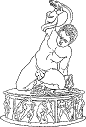
HERCULES ET SERPENTES
Dī2 grave supplicium sūmmit de malīs, sed iī quī lēgibus3 deōrum pārent, etiam post mortem cūrantur. Illa vīta dīs2 erat grātissima quae hominibus miserīs ūtilissima fuerat. Omnium autem praemiōrum summum erat immortālitās. Illud praemium Herculī datum est.
Herculis pater fuit Iuppiter, māter Alcmēna, et omnium hominum validissimus fuisse dīcitur. Sed Iūnō, rēgīna deōrum, eum, adhūc 198 īnfantem, interficere studēbat; nam eī4 et5 Herculēs et Alcmēna erant invīsī. Itaque mīsit duās serpentīs, utramque saevissimam, quae mediā nocte domum6 Alcmēnae vēnērunt. Ibi Herculēs, cum frātre suō, nōn in lectulō sed in scūtō ingentī dormiēbat. Iam audācēs serpentēs adpropinquāverant, iam scūtum movēbant. Tum frāter, terrōre commōtus, magnā vōce mātrem vocāvit, sed Herculēs ipse, fortior quam frāter, statim ingentīs serpentīs manibus suīs rapuit et interfēcit.
Herculēs ā puerō1 corpus suum gravissimīs et difficillimīs labōribus exercēbat et hōc modō vīrēs2 suās cōnfirmāvit. Iam adulēscēns Thēbīs3 habitābat. Ibi Creōn quīdam erat rēx. Minyae, gēns validissima, erant fīnitimī Thēbānīs, et, quia ōlim Thēbānōs vīcerant, quotannīs lēgātōs mittēbant et vectīgal postulābant. Herculēs autem cōnstituit cīvīs suōs hōc vectīgālī līberāre et dixit rēgī, “Dā mihi exercitum tuum et ego hōs superbōs hostīs superābō.” Hanc condiciōnem rēx nōn recūsāvit, et Herculēs nūntiōs in omnīs partis dīmīsit et cōpiās coēgit.4 Tum tempore opportūnissimō proelium cum Minyīs commīsit. Diū pugnātum est, sed dēnique illī impetum Thēbānōrum sustinēre nōn potuērunt et terga vertērunt fugamque cēpērunt.
Post hoc proelium Creōn rēx, tantā victōriā laetus, fīliam suam Herculī in mātrimōnium dedit. Thēbīs Herculēs cum uxōre suā diū vīvēbat et ab omnibus magnopere amābātur; sed post multōs annōs subitō 1in furōrem incidit et ipse suā manū līberōs suōs interfēcit. Post breve tempus 2ad sānitātem reductus tantum scelus expiāre cupiēbat et cōnstituit ad ōrāculum Delphicum iter facere. Hoc autem ōrāculum erat omnium clārissimum. Ibi sedēbat fēmina quaedam quae Pȳthia appellābātur. Ea cōnsilium dabat iīs quī ad ōrāculum veniēbant.
199
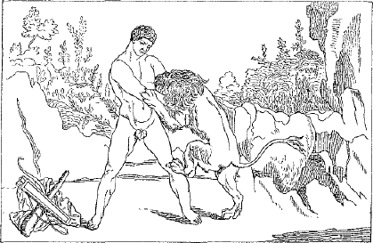
HERCULES LEONEM SUPERAT
Itaque Herculēs Pȳthiae tōtam rem dēmonstrāvit nec scelus suum abdidit. Ubi iam Herculēs fīnem fēcit, Pȳthia iussit eum ad urbem Tīryntha2 discēdere et ibi rēgī Eurystheō sēsē committere. Quae3 ubi audīvit, Herculēs ad illam urbem statim contendit et Eurystheō sē in servitūtem trādidit et dīxit, “Quid prīmum, Ō rēx, mē facere iubēs?” Eurystheus, quī perterrēbātur vī et corpore ingentī Herculis et eum occidī4 studēbat, ita respondit: “Audī, Herculēs! Multa mira5 nārrantur dē leōne saevissimō quī hōc tempore in valle Nemaeā omnia vāstat. Iubeō tē, virōrum omnium fortissimum, illō mōnstrō hominēs līberāre.” Haec verba Herculī maximē placuērunt. “Properābo,” inquit, 200 “et parēbō imperiō6 tuō.” Tum in silvās in quibus leō habitābat statim iter fēcit. Mox feram vīdit et plūrīs impetūs fēcit; frūstrā tamen, quod neque sagittīs neque ūllō aliō tēlō mōnstrum vulnerāre potuit. Dēnique Herculēs saevum leōnem suīs ingentibus bracchiīs rapuit et faucīs eius omnibus vīribus compressit. Hōc modō brevī tempore eum interfēcit. Tum corpus leōnis ad oppidum in umerīs reportāvit et pellem posteā prō7 veste gerēbat. Omnēs autem quō eam regiōnem incolēbant, ubi fāmam dē morte leōnis ingentis accēpērunt, erant laetissimī et Herculem laudābant verbīs amplissimīs.
Deinde Herculēs ab Eurystheō iussus est Hydram occīdere. Itaque cum amīcō Iolāō1 contendit ad palūdem Lernaeam ubi Hydra incolēbat. Hoc autem mōnstrum erat serpēns ingēns quae novem capita habēbat. Mox is mōnstrum repperit et summō2 cum perīculō collum eius sinistrā manū rapuit et tenuit. Tum dextrā manū capita novem abscīdere incēpit, sed frūstrā labōrābat, quod quotiēns hoc fēcerat totiēns alia nova capita vidēbat. Quod3 ubi vīdit, statuit capita ignī cremāre. Hōc modō octō capita dēlēvit, sed extrēmum caput vulnerārī nōn potuit, quod erat immortāle. Itaque illud sub ingentī saxō Herculēs posuit et ita victōriam reportāvit.
Postquam Eurystheō mors Hydrae nuntiata est, summus terror animum eius occupavit. Itaque iussit Herculem capere et ad sē reportāre cervum quendam; nam minimē cupīvit tantum virum in rēgnō suō tenēre. Hie autem cervus dīcēbātur aurea cornua et pedēs multō1 celeriōrēs ventō2 habēre. Prīmum Herculēs vestīgia animālis petīvit, deinde, ubi cervum ipsum vīdit, omnibus vīribus currere incēpit. Per plūrimōs diēs contendit nec noctū cessāvit. Dēnique postquam per 201 tōtum annum cucurrerat—ita dīcitur—cervum iam dēfessum cēpit et ad Eurystheum portāvit.
Tum vērō iussus est Herculēs aprum quendam capere quī illō tempore agrōs Erymanthiōs vāstābat et hominēs illīus locī magnopere perterrēbat. Herculēs laetē negōtium suscēpit et in Arcadiam celeriter sē recēpit. Ibi mox aprum repperit. Ille autem; simul atque Herculem vīdit, statim quam3 celerrimē fūgit et metū perterritus in fossam altam sēsē abdidit. Herculēs tamen summā cum difficultāte eum extrāxit, nec aper ūllō modō sēsē līberāre potuit, et vīvus ad Eurystheum portātus est.
Deinde Eurystheus Herculī hunc labōrem multō graviōrem imperāvit. Augēās1 quīdam, quī illō tempore rēgnum Ēlidis2 obtinēbat, tria mīlia boum3 habēbat. Hī4 ingentī stabulō continēbantur. Hoc stabulum, quod per trīgintā annōs nōn pūrgātum erat, Herculēs intrā spatium ūnīus diēī pūrgāre iussus est. llle negōtium alacriter suscēpit, et prīmum labōre gravissimō maximam fossam fōdit per quam flūminis aquam dē montibus ad mūrum stabulī dūxit. Tum partem parvam mūrī dēlēvit et aquam in stabulum immīsit. Hōc modō fīnm operis fēcit ūnō diē facillimē.
Post paucōs diēs Herculēs ad oppidum Stymphālum iter fēcit; nam Eurystheus iusserat eum avis Stymphālidēs occīdere. Hae avēs rōstra ferrea habēbant et hominēs miserōs dēvorābant. Ille, postquam ad locum pervēnit, lacum vīdit in quō avēs incolēbant. Nūllō tamen modō Herculēs avibus adpropinquāre potuit; lacus enim nōn ex aquā sed ē līmō cōnstitit.5 Dēnique autem avēs 6dē aliquā causā perterritae in aurās volāvērunt et magna pars eārum sagittīs Herculis occīsa est.
Tum Eurystheus iussit Herculem portāre vīvum ex īnsulā Crētā taurum quendam saevissimum. Ille igitur nāvem cōnscendit—nam ventus erat idōneus—atque statim solvit. Postquam trīduum nāvigavit, incolumis īnsulae adpropinquāvit. Deinde, postquam omnia parāta sunt, contendit ad eam regiōnem quam taurus vexābat. Mox taurum vīdit ac sine ūllō metū cornua eius corripuit. Tum ingentī labōre mōnstrum ad nāvem trāxit atque cum hāc praedā ex īnsulā discessit.
Postquam ex īnsulā Crētā domum pervēnit, Hercules ab Eurystheō in Thrāciam missus est. Ibi Diomēdēs quīdam, vir saevissimus, rēgnum obtinēbat et omnīs ā fīnibus suīs prohibēbat. Herculēs iussus erat equōs Diomedis rapere et ad Eurystheum dūcere. Hī autem equī hominēs miserrimōs dēvorābant dē quibus rēx supplicium sūmere cupiēbat. Herculēs ubi pervēnit, prīmum equōs ā rēge postulāvit, sed rēx eōs dēdere recūsāvit. Deinde ille īrā commōtus rēgem occīdit et corpus eius equīs trādidit. Itaque is quī anteā multōs necāverat, ipse eōdem suppliciō necātus est. Et equī, nūper saevissima animālia, postquam dominī suī corpus dēvorāvērunt, mānsuētī erant.
203Gēns Amāzonum1 dīcitur2 omnīnō ex mulieribus fuisse. Hae cum virīs proelium committere nōn verēbantur. Hippolytē, Amāzonum rēgīna, balteum habuit pulcherrimum. Hunc balteum possidēre fīlia Eurystheī vehementer cupiēbat. Itaque Eurystheus iussit Herculem impetum in Amāzonēs facere. Ille multīs cum cōpiīs nāvem cōnscendīt et paucis diēbus in Amāzonum fīnīs pervēnit, ac balteum postulāvit. Eum trādere ipsa Hipporytē quidem cupīvit; reliquīs tamen Amazonibus3 persuādēre nōn potuit. Postrīdiē Herculēs proelium commīsit. Multās hōrās utrimque quam fortissimē pugnātum est Dēnique tamen mulieres terga vertērunt et fugā salūtem petiērunt. Multae autem captae sunt, in quō numerō erat ipsa Hippolytē. Herculēs postquam balteum accēpit, omnibus captīvīs lībertātem dedit.
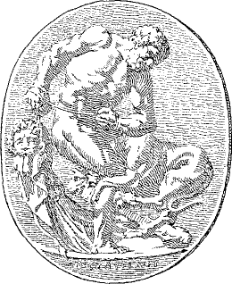
HERCULES ET CERBERUS
Iamque ūnus modo ē duodecim labōribus relinquēbātur sed inter omnīs hic erat difficillimus. Iussus est enim canem Cerberum4 ex Orcō in lūcem trahere. Ex Orcō autem nēmō anteā reverterat. Praetereā Cerberus erat mōnstrum maximē horribile et tria capita habēbat. Herculēs postquam imperia Eurystheī accēpit, statim profectus est et in Orcum dēscendit. Ibi vērō nōn sine summō periculō Cerberum manibus rapuit et ingentī cum labōre ex Orcō in lūcem et adurbem Eurystheī trāxit.
Sic duodecim laborēs illī5 intrā duodecim annōs cōnfectī sunt. Dēmum post longam vītam Herculēs ā deīs receptus est et Iuppiter fīliō suō dedit immortālitātem.
P. Cornēlius Lentulus,2 adulēscēns Rōmānus, amplissimā familiā3 nātus est; nam pater eius, Mārcus, erat dux perītissimus, cuius virtūte4 et cōnsiliō multae victōriae reportātae erant; atque mater eius, lūlia, ā clārissimīs maiōribus orta est. Nōn vērō in urbe sed rūrī5 Pūblius nātus est, et cum mātre habitābat in vīllā quae in maris lītore et sub radīcibus magnī montis sita erat. Mōns autem erat Vesuvius et parva urbs Pompēiī octō mīlia6 passuum7 aberat. In Italiā antīquā erant plūrimae quidem villae et pulchrae, sed inter hās omnīs nūlla erat pulchrior quam villa Mārcī Iūliaeque. Frōns vīllae mūrō a maris fluctibus mūniēbātur. Hinc mare et lītora et īnsulae longē lātēque cōnspicī8 ac saepe nāvēs longae et onerāriae poterant. Ā tergō et ab utrōque latere agrī ferācissimī patēbant. Undique erat magna variōrum flōrum cōpia et multa ingentium arborum genera quae aestāte9 umbram 205 dēfessīs agricolīs grātissimam adferēbant. Praetereā erant1 in agrīs stabulīsque multa animālium genera, nōn sōlum equī et bovēs sed etiam rārae avēs. Etiam erat10 magna piscīna plēna piscium; nam Rōmānī piscīs dīligenter colēbant.
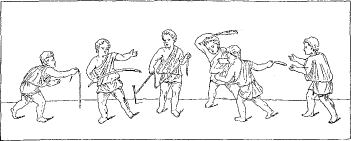
PUERI ROMANI
Huius vīllae Dāvus, servus Mārcī, est vīlicus1 et cum Lesbiā uxōre omnia cūrat. Vīlicus et uxor in casā humilī, mediīs in agrīs sitā, habitant. Ā prīmā lūce ūsque ad vesperum sē2 gravibus labōribus exercent ut omnī rēs bene gerant.3 Plūrima enim sunt officia Dāvī et Lesbiae. Vīlicus servōs regit nē tardī sint4; mittit aliōs quī agrōs arent,4 aliōs quī hortōs inrigent,4 et opera in5 tōtum diem impōnit. Lesbia autem omnibus vestīmenta parat, cibum coquit, pānem facit.
CASA ROMANA
Nōn longē ab hōrum casā et in summō colle situm surgēbat domicilium ipsīus dominī dominaeque amplissimum. Ibi plūrīs annōs6 Pūblius cum mātre vītam fēlīcem agēbat; nam pater eius, Mārcus, in terrīs longinquīs gravia reī pūblicae bella gerēbat nec domum7 revertī poterat. Neque puerō quidem molestum est rūrī8 vīvere. Eum multae rēs dēlectant. Magnopere amat silvās, agrōs, equōs, bovēs, gallīnās, avīs, reliquaque animālia. Saepe plūrīs hōrās9 ad mare sedet quō9 melius fluctūs et nāvīs spectet. Nec omnīnō sine comitibus erat, quod Lȳdia, Dāvī fīlia, quae erat eiusdem aetātis, cum eō adhūc infante lūdēbat, inter quōs cum annīs amīcitia crēscēbat. Lȳdia nūllum alium ducem dēligēbat et Pūblius ab puellae latere rārō 206 discēdēbat. Itaque sub clārō Italiae sōle Pūblius et Lȳdia, amīcī fidēlissimī, per campōs collīsque cotīdiē vagābantur. Modo in silvā fīnitimā lūdebant ubi Pūblius sagittīs10 celeribus avis dēiciēbat et Lȳdia corōnīs variōrum flōrum comās suās ōrnābat; modo aquam et cibum portābant ad Dāvum servōsque dēfessōs quī agrōs colēbant: modo in casā parvā aut hōrās lactās in lūdō cōnsūmēbant aut auxilium dabant Lesbiae, quae cibum virō et servīs parābat vel aliās rēs domesticās agēbat.
Iam Pūblius1 decem annōs habēbat cum M. Cornēlius Lentulus, pater eius, quī quīnque annōs2 grave bellum in Asiā gerēbat, non sine glōriā domum3 revertēbātur. Namque multa secunda proelia fēcerat, maximās hostium cōpiās dēlēverat, multās urbīs populo4 Rōmānō inimīcās cēperat. Primum nūntius pervēnit quī ā Lentulō5 missus erat6 ut profectiōnem suam nūntiāret. Deinde plūrīs diēs7 reditum virī optimī māter fīliusque exspectābant et animīs8 sollicitis deōs immortālīs frūstrā colēbant. Tum dēmum hās litterās summo cum gaudiō accēpērunt:
9“Mārcus Iūliae suac salūtem dīcit. Sī valēs, bene est; ego valeō. Ex Graeciā, quō10 praeter spem et opīniōnem hodiē pervēnī, hās litterās ad tē scribō. Namque nāvis nostra frācta est; nōs autem—11dīs est gratia—incolumes sumus. Ex Asiae12 portū nāvem lēnī ventō solvimus. Postquam13 altum mare tenuimus 14nec iam ūllae terrae appāruērunt, caelum undique et undique fluctūs, subitō magna tempestās coorta est et nāvem vehementissimē adflīxit. Ventīs fluctibusque 207 adflīctātī15 nec sōlem discernere nec cursum tenēre poterāmus et omnia praesentem mortem intentābant. Trīs diēs16 et trīs noctīs16 sine rēmīs vēlīsque agimur. Quārtō diē17 prīmum terra vīsa est et violenter in saxa, quae nōn longē ā lītore aberant, dēiectī sumus. Tum vērō maiōra perīcula timēbāmus; sed nauta quīdam, vir fortissimus, ex nāve in fluctūs īrātōs dēsiluit 18ut fūnem ad lītus portāret; quam rem summō labōre vix effēcit. Ita omnēs servātī sumus. Grātiās igitur et honōrem Neptūnō dēbēmus, quī deus nōs ē perīculō ēripuit. Nunc Athēnīs19 sum, quō cōnfūgī ut mihi paucās hōrās ad quiētem darem.20 Quam prīmum autem aliam nāvem condūcam ut iter ad Italiam reliquum cōnficiam et domum21 ad meōs cārōs revertar. Salūtā nostrum Pūblium amīcissimē et valētūdinem tuam cūrā dīligenter. 22Kalendīs Mārtiīs.”
Post paucōs diēs nāvis M. Cornēlī Lentulī portum Mīsēnī1 petiit, quī portus nōn longē ā Pompēiīs situs est; quō in portū classis Rōmānā pōnēbātur et ad pugnās nāvālīs ōrnābātur. Ibi nāvēs omnium generum cōnspicī poterant. Iamque incrēdibilī celeritāte nāvis longa quā Lentulus vehēbātur lītorī adpropinquāvit; nam nōn sōlum ventō sed etiam rēmīs impellēbātur. In altā puppe stābat gubernātor et nōn procul aliquī mīlitēs Rōmānī cum armīs splendidīs, inter quōs clārissimus erat Lentulus. Deinde servī rēmīs contendere cessāvērunt2; nautae vēlum contrāxērunt et ancorās iēcērunt. Lentulus statim ē nāvī ēgressus est et3 ad villam suam properāvit. Eum Iūlia, Pūblius, tōtaque familia excēpērunt. 4Quī complexūs, quanta gaudia fuērunt!
Postrīdiē eius diēī Lentulus fīliō suō dīxit, “Venī, mī Pūblī, mēcum. 208 Pompēiōs iter hodiē faciam. Māter tua suādet5 ut frūctūs et cibāria emam. Namque plūrīs amīcōs ad cēnam vocāvimus et multīs rēbus6 egēmus. Ea hortātur ut quam prīmum proficīscāmur.” “Libenter, mī pater,” inquit Pūblius. “Tēcum esse mihi semper est grātum; nec Pompēiōs umquam vīdī. Sine morā proficīscī parātus sum.” Tum celeriter currum cōnscendērunt et ad urbis mūrōs vectī sunt. Stabiānā portā7 urbem ingressī sunt. Pūblius strātās viās mīrātur et saxa altiōra quae in mediō disposita erant et altās orbitās quās rotae inter haec saxa fēcerant. Etiam strepitum mīrātur, multitūdinem, carrōs, fontīs, domōs, tabernās, forum8 cum statuīs, templīs, reliquīsque aedificiīs pūblicīs.
Apud forum ē currū dēscendērunt et Lentulus dīxit, “Hīc sunt multa tabernārum genera, mī Pūblī. Ecce, trāns viam est popīna! 1Hoc genus tabernārum cibāria vēndit. Frūctūs quoque ante iānuam stant. Ibi cibāria mea emam.” “Optimē,” respondit Pūblius. “At ubi, mī pater, crūstula emere possumus? Namque māter nōbīs imperāvit 2ut haec quoque parārēmus. Timeō ut3 ista popīna vēndat crūstula.” “Bene dīcis,” inquit Lentulus. “At nōnne vidēs illum fontem ā dextrā ubi aqua per leōnis caput fluit? In illō ipsō locō est taberna pīstōris quī sine dubiō vēndit crūstula.”
Brevī tempore4 omnia erant parāta, iamque 5quīnta hōra erat. Deinde Lentulus et fīlius ad caupōnam properāvērunt, quod famē6 et 209 sitī7 urgēbantur. Ibi sub arboris umbrā sēdērunt et puerō imperāvērunt ut sibi8 cibum et vīnum daret. Huic imperiō9 puer celeriter pāruit. Tum laetī sē10 ex labōre refēcērunt.
Post prandium prefectī sunt ut alia urbis spectācula vidērent. Illō tempore fuērunt Pompēiīs11 multa templa, duo theātra, thermae magnumque amphitheātrum, quae omnia post paucōs annōs flammīs atque incendiīs Vesuvī et terrae mōtū dēlēta sunt. Ante hanc calamitātem autem hominēs 1nihil dē monte veritī sunt. In amphitheātrō quidem Pūblius morārī cupīvit ut spectācula gladiātōria vidēret, quae in13 illum ipsum diem prōscrīpta erant et iam 15rē vērā incēperant. Sed Lentulus dīxit, “Morārī, Pūblī, 16vereor ut possīmus. Iam decima hōra est et via est longa. Tempus suādet ut quam prīmum domum revertāmur.” Itaque servō imperāvit ut equōs iungeret, et sōlis occāsū16 ad vīllam pervēnērunt.
Ā prīmīs annīs quidem Iūlia ipsa fīlium suum docuerat, et Pūblius nōn sōlum 1pūrē et Latīnē loquī poterat sed etiam commodē legēbat et scrībēbat. Iam Ennium2 aliōsque poētās lēgerat. Nunc vērō Pūblius 3duodecim annōs habēbat; itaque eī pater bonum magistrum, 4virum omnī doctrīnā et virtūte ōrnātissimum, parāvit, 5quī Graeca, mūsicam, aliāsque artīs docēret. 6Namque illīs temporibus omnēs ferē gentēs Graecē loquēbantur. Cum Pūbliō aliī puerī, Lentulī amīcōrum 210 fīliī,7 discēbant. Nam saepe apud Rōmānōs mōs erat 8nōn in lūdum fīliōs mittere sed domī per magistrum docēre. Cotīdiē discipulī cum magistrō in peristȳlō9 Mārcī domūs sedēbant. Omnēs puerī bullam auream, orīginis honestae signum, in collō gerēbant, et omnēs togā praetextā amictī erant, 10quod nōndum sēdecim annōs11 nātī sunt.
TABULA ET STILUS
Discipulī. Salvē, magister.
Magister. Vōs quoque omnēs, salvēte. 1Tabulāsne portāvistis et stilōs?
D. Portāvimus.
M. Iam fābulam Aesōpī2 discēmus. Ego legam, vōs in tabulīs scrībite. Et tū, Pūblī, dā mihi ē capsā3 Aesōpī volūmen.4 Iam audīte omnēs: Vulpēs et Ūva.
Vulpēs ōlim famē coācta ūvam dēpendentem vīdit. Ad ūvam saliēbat, sūmere cōnāns. Frūstrā diū cōnāta, tandem īrāta erat et salīre cessāns dīxit: “Illa ūva est acerba; acerbam ūvam 5nihil moror.”
Omnia´ne scrīpsistis, puerī?
D. Omnia, magister.
Iamque Pūblius, 1quīndecim annōs nātus, 2prīmīs litterārum elementīs cōnfectīs, Rōmam petere voluit ut scholās grammaticōrum et philosophōrum frequentāret. Et facillimē patrī3 suō, qui ipse philosophiae studiō tenēbātur, persuāsit. Itaque 4omnibus rēbus ad profectiōnem comparātīs, pater fīliusque equīs animōsīs vectī5 ad magnam urbem profectī sunt. Eōs proficīscentīs Iūlia tōtaque familia vōtīs precibusque prōsecūtae sunt. Tum per loca6 plāna et collis silvīs vestītōs viam ingressī sunt ad Nōlam, quod oppidum eōs hospitiō modicō excēpit. Nōlae7 duās hōrās morātī sunt, quod sōl merīdiānus ārdēbat. Tum rēctā viā8 circiter vīgintī mīlia9 passuum9 Capuam,9 ad īnsignem Campāniae urbem, contendērunt. Eō10 multā nocte dēfessī pervēnērunt. 11Postrīdiē eius diēī, somnō et cibō recreātī, Capuā discessērunt et 13viam Appiam ingressī, quae Capuam tangit et ūsque ad urbem Rōmam dūcit, ante merīdiem Sinuessam pervēnērunt, quod oppidum tangit mare. Inde prīmā lūce proficīscentēs Formiās13 properāvērunt, ubi Cicerō, ōrātor clarissimus, quī forte apud vīllam suam erat, eōs benignē excēpit. Hinc 14itinere vīgintī quīnque mīlium passuum factō, Tarracīnam, oppidum in saxīs altissimīs situm, vīdērunt. Iamque nōn longē aberant palūdēs magnae, quae multa mīlia passuum undique patent. Per eās pedestris via est gravis et in nāve viātōrēs vehuntur. Itaque 15equīs relictīs Lentulus et Pūblius nāvem cōnscendērunt, et, ūnā nocte in trānsitū cōnsūmptā, Forum Appī vēnērunt. Tum brevī tempore Arīcia eōs excēpit. Hoc oppidum, in colle 212 situm, ab urbe Romā sēdecim mīlia passuum abest. Inde dēclivis via ūsque ad latum campum dūcit ubi Rōma stat. Quem ad locum ubi Pūblius vēnit et Rōmam adhūc remōtam, maximam tōtīus orbis terrārum urbem, cōnspēxit, summā admīrātiōne et gaudiō adfectus est. Sine morā dēscendērunt, et, mediō intervāllō quam celerrimē superātō, urbem portā Capēnā ingressī sunt.
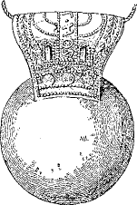
BULLA
Pūblius iam tōtum annum Rōmae morābātur1 multaque urbis spectācula vīderat et multōs sibi2 amīcōs parāverat. Eī3 omnēs favēbant; 4dē eō omnēs bene spērāre poterant. Cotīdiē Pūblius scholas philosophōrum et grammaticōrum tantō studiō frequentābat 5ut aliīs clārum exemplum praebēret. Saepe erat cum patre in cūriā6; quae rēs effēcit 7ut summōs reī pūblicae virōs et audīret et vidēret. Ubi 8sēdecim annōs natus est, bullam9 auream et togam praetextam mōre Rōmānō dēposuit atque virīlem togam sūmpsit. Virīlis autem toga erat omnīnō alba, sed praetexta clāvum purpureum in margine habēbat. 10Dēpōnere togam praetextam et sūmere togam virīlem erat rēs grātissima puerō Rōmānō, quod posteā vir et cīvis Rōmānus habēbātur.
11Hīs rēbus gestīs Lentulus ad uxōrem suam hās litterās scrīpsit:
12“Mārcus Iūliae suae salūtem dīcit. Sī valēs, bene est; ego valeō. Accēpī tuās litterās. Hās nunc Rōmā per servum fidēlissimum mittō ut dē Pūbliō nostrō quam celerrimē sciās. Nam hodiē eī togam virīlem dedī. Ante lucem surrēxī13 et prīmum bullam auream dē collō eius 213 remōvī. Hāc Laribus14 cōnsecrātā et sacrīs factīs, eum togā virīlī vestīvī. Interim plūrēs amīcī cum multitūdine optimōrum cīvium et honestōrum clientium pervēnerant 15quī Pūblium domō in forum dēdūcerent. Ibi in cīvitātem receptus est et nōmen, Pūblius Cornēlius Lentulus, apud cīvīs Rōmānōs ascrīptum est. Omnēs eī amīcissimī fuērunt et magna16 de eō praedīcunt. Sapientior enim aequālibus17 est et magnum ingenium habet. 18Cūrā ut valeās.”
Pūblius iam adulēscēns postquam togam virīlem sūmpsit, aliīs rēbus studēre incēpit et praesertim ūsū1 armōrum sē2 dīligenter exercuit. Magis magisque amāvit illās artīs quae mīlitārem animum dēlectant. Iamque erant 3quī eī cursum mīlitārem praedīcerent. Nec sine causā, quod certē patris īsigne exemplum 4ita multum trahēbat. 5Paucīs ante annīs C. Iūlius Caesar, ducum Rōmānōrum maximus, cōnsul creātus erat et hōc tempore in Galliā bellum grave gerēbat. Atque in exercitū eius plūrēs adulēscentēs mīlitābant, apud quōs erat amīcus quīdam Pūblī. Ille Pūblium crēbrīs litterīs vehementer hortābātur 6ut iter in Galliam faceret. Neque Pūblius recūsāvit, et, multīs amīcīs ad portam urbis prōsequentibus, ad Caesaris castra profectus est. Quārtō diē postquam iter ingressus est, ad Alpīs, montīs altissimōs, pervēnit. Hīs summā difficultāte superātīs, tandem Gallōrum in fīnibus erat. Prīmō autem veritus est ut7 castrīs Rōmānīs adpropinquāre posset, quod Gallī, maximīs cōpiīs coāctīs, Rōmānōs obsidēbant et viās omnīs iam clauserant. Hīs rēbus commōtus Pūblius vestem Gallicam induit nē ā Gallīs caperētur, et ita per hostium cōpiās incolumis ad castra 214 pervenīre potuit. Intrā mūnītiōnes acceptus, ā Caesare benignē exceptus est. Imperātor fortem adulēscentem amplissimīs verbīs laudāvit et eum 8tribūnum mīlītum creāvit.
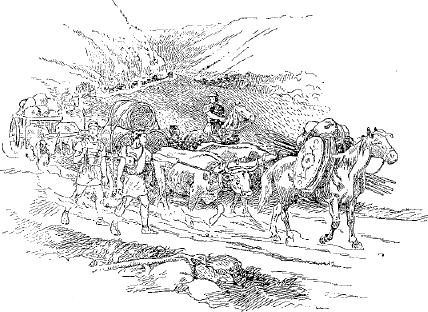
IMPEDIMENTA
Exercitus quī in hostium fīnibus bellum genit multīs perīcuīs circumdatus est. 1Quae perīcula ut vītāret, Rōmāni summam cūram adhībēre solēbant. Adpropinquanteēs cōpiīs hostium agmen ita dispōnēbant 2ut imperātor ipse cum plāribus legiōnibus expedītīs3 prīmum agmen dūceret. Post eās cōpiās impedīmenta4 tōtīus exercitūs 215 conlocābant. 5Tum legiōnēs quae proximē cōnscrīptae erant tōtum agmen claudēbant. Equitēs quoque in omnīs partīs dīmittēbantur quī loca explōrārent; et centuriōnēs praemittēbantur ut locum castrīs idōneum dēligerent. Locus habēbatur idōneus castrīs 6quī facile dēfendī posset et prope aquam esset. Quā dē causā castra7 in colle ab utrāque parte arduō, ā fronte lēniter dēclīvī saepe pōnēbantur; vel locus palūdibus cīnctus vel in flūminis rīpīs situs dēligēbātur. Ad locum postquam exercitus pervēnit, aliī mīlitum 8in armīs erant, aliī castra mūnīre incipiēbant. Nam 9quō tūtiōrēs ab hostibus mīlitēs essent, nēve incautī et imparātī opprimerentur, castra fossā lātā et vāllō altō mūniēbant. In castrīs portae quattuor erant ut ēruptiō mīlitum omnīs in partīs fierī posset. In angulīs castrōrum erant turrēs dē quibus tēla in hostīs coniciēbantur. 10Tālibus in castrīs quālia dēscrīpsimus Pūblius ā Caesare exceptus est.
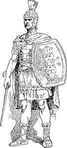
CENTURIO
Illīs in castrīs erant duo centuriōnēs,1 fortissimī virī, T. Pullō et L. Vorēnus, quōrum neuter alterī virtūte2 cēdere volēbat. Inter eōs iam multōs annōs īnfēnsum certāmen gerēbātur. Tum dēmum fīnis contrōversiae hōc modō3 factus est. Diē tertiō postquam Pūblius pervēnit, hostēs, maiōribus cōpiīs coāctīs, ācerrimum impetum in castra fēcērunt. Tum Pullō, 4cum Rōmānī tardiōrēs5 vidērentur, “Cūr dubitās,” inquit, “Vorēne? Quam commodiōrem occāsiōnem exspectās? Hic diēs dē virtūte nostrā iūdicābit.” Haec6 cum dīxisset, 216 extrā mūnītiōnēs prōcessit et in eam hostium partem quae cōfertissima 7vidēbātur inrūpit. Neque Vorēnus quidem tum vāllō8 sēsē continet, sed Pullōnem subsequitur. Tum Pullō pīlum in hostīs immittit atque ūnum ex multitūdine prōcurrentem trāicit. Hunc percussum et exanimātum hostēs scūtīs prōtegunt et in Pullōnem omnēs tēla coniciunt. Eius scūtum trānsfīgitur et tēlum in balteō dēfīgitur. Hic cāsus vāgīnam āvertit et dextram manum eius gladium ēdūcere cōnantis9 morātur. Eum ita impedītum hostēs circumsistunt.
Tum vēro 10eī labōrantī Vorēnus, cum sit inimīcus, tamen auxilium dat. Ad hunc cōnfestim 11ā Pullōne omnis multitūdō sē convertit. Gladiō comminus pugnat Vorēnus, atque, ūnō interfectō, reliquōs paulum prōpellit. Sed īnstāns cupidius12 īnfēlīx, 13pede sē fallente, concidit.
Huic rūrsus circumventō auxilium dat Pullō, atque ambō incolumēs, plūribus interfectīs, summā cum laude intrā mūnītiōnēs sē recipiunt. Sic inimīcōrum alter alterī auxilium dedit nec de eōrum virtūte quisquam iūdicāre potuit.
Cum iam sex hōrās pugnatum esset1 ac nōn sōlum vīrēs sed etiam tēla Rōmānōs dēficerent1, atque hostēs ācrius instārent,1 et vāllum scindere fossamque complēre incēpissent,1 Caesar, vir reī mīlitāris perītissimus, 217 suīs imperāvit ut proelium paulisper intermitterent,2 et, signō datō, ex castrīs ērumperent.2 3Quod iussī sunt faciunt, et subitō ex omnibus portīs ērumpunt. Atque tam celeriter mīlitēs concurrērunt et tam propinquī erant hostēs4 ut spatium pīla coniciendī5 nōn darētur. Itaque reiectīs pīlīs 6comminus gladiīs pugnātum est. Diū et audācter hostēs restitērunt et in extrēmā spē salūtis tantam virtūtem praestitērunt ut ā dextrō cornū vehementer 7multitūdine suōrum aciem Rōmanam premerent. 8Id imperātor cum animadvertisset, Pūblium adulēscentem cum equitātū mīsit quī labōrantibus9 auxilium daret. Eius impetum sustinēre nōn potuērunt hostēs10 et omnēs terga vertērunt. Eōs in fugam datōs Pūblius subsecūtus est ūsque ad flūmen Rhēnum, quod ab eō locō quīnque mīlia passuum aberat. Ibi paucī salūtem sibi repperērunt. Omnibus reliquīs interfectīs, Pūblius et equitēs in castra sēsē recēpērunt. Dē hāc calamitāte fīnitimae gentēs cum certiōrēs factae essent, ad Caesarem lēgātōs mīsērunt et sē suaque omnia dēdidērunt.
Initā aestāte Caesar litterīs certior fīēbat et per explōrātōrēs cognōscēbat plūrīs cīvitātēs Galliae novīs rēbus studēre,1 et contrā populum Rōmānum coniūrāre1 obsidēsque 2inter sē dare,1 atque cum hīs Germānōs quōsdam quoque sēsē coniūnctūrōs esse.1 Hīs litterīs nūntiīsque commōtus Caesar cōnstituit quam celerrimē in Gallōs proficīscī,3 ut eōs inopīnantīs opprimeret, et Labiēnum lēgātum cum duābus legiōnibus peditum et duōbus mīlibus equitum in Germānōs mittere.3 218 4Itaque rē frūmentāriā comparātā castra mōvit. Ab utrōque5 rēs bene gesta est; nam Caesar tam celeriter in hostium fīnīs pervēnit ut spatium 6cōpiās cōgendī nōn darētur7; et Labiēnus dē Germānīs tam grave supplicium sūmpsit ut nēmō ex eā gente in reliquum tempus Gallīs auxilium dare audēret.7
Hoc iter in Germāniam Pūblius quoque fēcit et, 8cum ibi morārētur, multa mīrābilia vīdit. Praesertim vērō ingentem silvam mīrābātur, quae tantae magnitūdinis esse dīcēbātur 9ut nēmō eam trānsīre posset, nec quisquam scīret aut initium aut fīnem. Quā dē rē plūra cognōverat ā mīlite quōdam quī ōlim captus ā Germānīs multōs annōs ibi incoluit. Ille10 dē silvā dīcēns, “Īnfīnītae magnitūdinis est haec silva,” inquit; “nee quisquam est 11huius Germāniae 12quī initium eius sciat aut ad fīnem adierit. Nāscuntur illīc multa tālia animālium genera quālia reliquīs in locīs nōn inveniuntur. Sunt bovēs quī ūnum13 cornū habent; sunt etiam animālia quae appellantur alcēs. Hae nūllōs crūrum14 articulōs habent. Itaque, sī forte concidērunt, sēsē ērigere nūllō modō possunt. Arborēs habent prō15 cubīlibus; ad eās sē applicant atque ita reclīnātae quiētem capiunt. Tertium est genus eōrum quī ūrī appellantur. Hī sunt paulō minōrēs elephantīs.16 Magna vis eōrum est et magna vēlōcitās. Neque hominī neque ferae parcunt.17”
Pūblius plūrīs diēs in Germāniā morātus1 in Galliam rediit, et ad Caesaris castra sē contulit. Ille quia molestē ferēbat Gallōs2 eius regiōnis obsidēs dare recūsāvisse et exercituī frūmentum praebēre 219 nōluisse, cōnstituit eīs3 bellum īnferre. Agrīs vāstātīs, vīcīs incēnsīs, pervēnit ad oppidum validissimum quod et nātūrā et arte mūnītum erat. Cingēbātur mūrō vīgintī quīnque pedēs4 altō. Ā lateribus duōsitum, praeruptō fastīgiō ad plānitiem vergēgat; ā quārtō tantum5 latere aditus erat facilis. Hoc oppidum oppugnāre, 6cum opus esset difficillimum, tamen cōnstituit Caesar. Et castrīs mūnītīs Pūbliō negōtium dedit ut rēs 7ad oppugnandum necessāriās parāret.
VINEA
Rōmānōrum autem oppugnātiō est haec.8 Prīmum turrēs aedificantur quibus mīlitēs in summum mūrum ēvādere possint9; vīneae10 fīunt quibus tēctī mīlitēs ad mūrum succēdant; pluteī11 parantur post quōs mīlitēs tormenta12 administrent; sunt quoque arietēs quī mūrum et portās discutiant. Hīs omnibus rēbus comparātīs, deinde 13agger ab eā parte ubi aditus est facillimus exstruitur et cum 220 vīneīs ad ipsum oppidum agitur. Tum turris in aggere prōmovētur; arietibus quī sub vīneīs conlocātī erant mūrus et portae discutiuntur; ballistīs, catapultīs, reliquīsque tormentīs lapidēs et tēla in oppidum coniciuntur. Postrēmō cum iam turris et agger altitūdinem mūrī adaequant et arietēs moenia perfrēgērunt,14 signō datō mīlitēs inruunt et oppidum expugnant.
BALLISTA
Omnibus rēbus necessāriīs ad oppugnandum ā Pūbliō comparātīs, dēlīberātur in conciliō quod cōnsilium 1oppidī expugnandī ineant.2 Tum ūnus3 ex centuriōnibus, vir reī mīlitāris perītissimus, “Ego suādeō,” inquit, “ut ab eā parte, ubi aditus sit4 facillimus, aggerem exstruāmus5 et turrim prōmoveāmus5 atque ariete admōtō simul mūrum discutere cōnēmur.5” 6Hoc cōnsilium cum omnibus placēret, Caesar concilium dīmīsit. Deinde mīlitēs hortātus ut priōrēs victōriās memoriā7 tenērent, iussit aggerem exstruī, turrim et arietem admovērī. Neque oppidānīs8 cōnsilium dēfuit. Aliī ignem et omne genus tēlōrum dē mūrō in turrim coniēcērunt, aliī ingentia saxa in vīneās et arietem dēvolvērunt. Diū utrimque ācerrimē 221 pugnātum est. Nē vulnerātī quidem pedem rettulērunt. Tandem, 9dē tertiā vigiliā, Pūblius, quem Caesar illī operī10 praefēcerat, nūntiāvit partem11 mūrī ictibus arietis labefactam concidisse. Quā rē audītā Caesar signum dat; mīlitēs inruunt et magnā cum caede hostium oppidum capiunt.
TURRES, ARIETES, VINEA
Postrīdiē eius diēī, hōc oppidō expugnātō, 12captīvōrum quī nōbilissimī sunt ad imperātōrem ante praetōrium13 addūcuntur. Ipse, lōrīcā aurātā et paludāmentō purpureō īnsignis, captīvōs per interpretem in hunc modum interrogat:14 Vōs quī estis15?
Interpres. Rogat imperātor quī sītis.
Captīvī. Fīliī rēgis sumus.
Interpres. Dīcunt sē fīliōs esse rēgis.
Imperātor. Cūr mihi tantās iniūriās intulistis?
Interpres. Rogat cūr sibi tantās iniūriās intuleritis.
Captīvī. Iniūriās eī nōn intulimus sed prō patriā bellum gessimus. Semper voluimus Rōmānīs esse amīcī, sed Rōmānī sine causā nōs domō patriāque expellere cōnātī sunt.
Interpres. 16Negant sē iniūriās tibi intulisse, sed prō patriā bellum gessisse. 17Semper sē voluisse amīcōs Rōmānīs esse, sed Rōmānōs sine causā sē domō patriāque expellere cōnātōs esse.
222 Imperātor. 18Manēbitisne in reliquum tempus in fidē, hāc rebelliōne condōnātā?
Tum vērō captīvī multīs cum lacrimīs iūrāvērunt sē in fidē mānsūrōs esse, et Caesar eōs incolumīs domum dīmīsit.
Nē cōnfectō1 quidem bellō Gallicō, 2bellum cīvīle inter Caesarem et Pompēium exortum est. Nam Pompēius, quī summum imperium petēbat, senātuī persuāserat ut Caesarem reī pūblicae hostem3 iūdicāret et exercitum eius dīmittī iubēret. Quibus cognitīs rēbus Caesar exercitum suum dīmittere recūsāvit, atque, hortātus mīlitēs ut ducem totiēns victōrem ab inimīcōrum iniūriīs dēfenderent, imperāvit ut sē Rōmam sequerentur. Summā cum alacritāte mīlitēs pāruērunt, et trānsitō Rubicōne4 initium bellī cīvīlis factum est.
Italiae urbēs quidem omnēs ferē 5rēbus Caesaris favēbant et eum benignē excēpērunt. Quā rē commōtus Pompēius ante Caesaris adventum Rōmā excessit et Brundisium6 pervēnit, inde 7paucīs post diēbus cum omnibus cōpiīs ad Ēpīrum mare trānsiit. Eum Caesar cum septem legiōnibus et quīngentīs equitibus secūtus est, et īnsignis inter Caesaris comitātum erat Pūblius.
Plūribus leviōribus proeliīs factīs, tandem cōpiae adversae ad Pharsālum8 in Thessaliā sitam castra posuērunt. Cum Pompeī exercitus 223 esset bis tantus quantus Caesaris, tamen erant multī quī veterānās legiōnēs quae Gallōs et Germānōs superāverant vehementer timēbant. Quōs9 10ante proelium commissum Labiēnus11 lēgātus, quī ab Caesare nūper dēfēcerat, ita adlocūtus est: “12Nōlīte exīstimāre hunc esse exercitum veterānōrum mīlitum. Omnibus interfuī proeliīs13 neque temerē incognitam rem prōnūntiō. Perexigua pars illīus exercitūs quī Gallōs superāvit adhūc superest. Magna pars occīsa est, multī domum discessērunt, multī sunt relictī in Italiā. Hae cōpiae quās vidētis in 14citeriōre Galliā nūper cōnscrīptae sunt.” Haec15 cum dīxisset, iūrāvit sē nisi victōrem in castra nōn reversūrum esse. 16Hoc idem Pompēius et omnēs reliquī iūrāvērunt, et magnā spē et laetitiā, sīcut certam ad victōriam, cōpiae ē castrīs exiērunt.
Item Caesar, animō17 ad dīmicandum parātus, exercitum suum ēdūxit et septem cohortibus 18praesidiō castrīs relictīs cōpiās triplicī aciē īnstrūxit. Tum, mīlitibus studiō pugnae ārdentibus, tubā signum dedit. Mīlitēs prōcurrērunt et pīlīs missīs gladiōs strīnxērunt. Neque vērō virtūs hostibus dēfuit. Nam et tēla missa sustinuērunt et impetum gladiōrum excēpērunt et ōrdinēs cōnservāvērunt. Utrimque diū et ācriter pugnātum est nec quisquam pedem rettulit. Tum equitēs Pompēī aciem Caesaris circumīre cōnātī sunt. Quod19 ubi Caesar animadvertit, tertiam aciem,20 quae ad id tempus quiēta fuerat, prōcurrere iussit. Tum vērō integrōrum impetum21 dēfessī hostēs sustinēre nōn potuērunt et omnēs terga vertērunt. Sed Pompēius dē fortūnīs suīs dēspērāns sē in castra equō contulit, inde mox cum paucīs equitibus effūgit.
SIGNIFER
Pompēiō amīcīsque eius superātīs atque omnibus hostibus ubīque victīs, Caesar imperātor Rōmam rediit et 1extrā moenia urbis in campō Mārtiō castra posuit. Tum vērō amplissimīs honōribus adfectus est. Dictātor creātus est, et eī triumphus ā senātū est dēcrētus. 2Quō diē de Gallīs triumphum ēgit, tanta multitūdō hominum in urbem undique cōnflūxit 3ut omnia loca essent cōnferta. Templa patēbant, ārae fūmābant, columnae sertīs ōrnātae erant. 4Cum vērō pompa urbem intrāret, quantus hominum fremitus ortus est! Prīmum per portam ingressī sunt senātus et magistrātūs. Secūtī sunt tībīcinēs, signiferī, peditēs laureā corōnātī canentēs: “Ecce Caesar nunc triumphat, quī subēgit Galliam,” et “Mīlle, mīlle, mīlle, mīlle Gallōs trucīdāvimus.” Multī praedam captārum urbium portābant, arma, omnia bellī īnstrūmenta. Secūtī sunt equitēs, animōsīs atque splendidissimē ōrnātīs equīs vectī, inter quōs Pūblius adulēscēns fortissimus habēbātur. Addūcēbantur taurī, arietēs, 5quī dīs immortālibus immolārentur. Ita longō agmine prōgrediēns exercitus 6sacrā viā per forum in Capitōlium perrēxit.
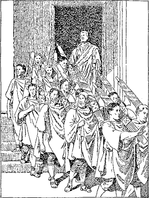
LICTORES CUM FASCIBUS
Imperātor ipse cum urbem intrāret, undique laetō clāmōre multitūdinis salūtātus est. Stābat in currū aureō quem quattuor albī equī vehēbant. Indūtus 7togā pictā, alterā manū habēnās et lauream 225 tenēbat, alterā eburneum scēptrum. Post eum servus in currū stāns auream corōnam super caput eius tenēbat. Ante currum miserrimī captīvī, rēgēs prīncipēsque superātārum gentium, catēnīs vīnctī, prōgrediēbantur; et vīgintī quattuor līctōrēs8 laureatās fascīs ferentēs et signiferī currum Caesaris comitābantur. Conclūdit agmen multitūdō captīvōrum, quī, in servitūtem redāctī,9 dēmissō vultū, vīnctīs10 bracchiīs, sequuntur; quibuscum veniunt longissimō ōrdine mīlitēs, etiam hī praedam vel insignia mīlitāria ferentēs.
Caesar cum Capitōlium ascendisset, in templō Iovī Capitōlīnō sacra fēcit. Simul11 captivōrum quī nōbilissimī erant, abductī in carcerem,12 interfectī sunt. Sacrīs factīs Caesar dē Capitōliō dēscendit et in forō mīitibus suīs honōrēs mīlitārīs dedit eīsque pecūniam ex bellī praedā distribuit.
Hīs omnibus rēbus cōnfectīs, Pūblius Caesarem valēre13 iussit et quam celerrimē ad vīllam contendit ut patrem mātremque salūtāret.
15Dē rēbus gestīs P. Cornēlī Lentulī hāctenus.
460. Nouns are inflected in five declensions, distinguished by the final letter of the stem and by the termination of the genitive singular.
First Declension—Ā-stems, Gen. Sing. -ae
Second Declension—O-stems, Gen. Sing. -ī
Third Declension—Consonant stems and I-stems, Gen. Sing. -is
Fourth Declension—U-stems, Gen. Sing. -ūs
Fifth Declension—Ē-stems, Gen. Sing. -ē̆ī
461. FIRST DECLENSION. Ā-STEMS
| domina, lady Stem dominā- Base domin- | ||||
| Singular | Plural | |||
|---|---|---|---|---|
| TERMINATIONS | TERMINATIONS | |||
| Nom. | domina | -a | dominae | -ae |
| Gen. | dominae | -ae | dominārum | -ārum |
| Dat. | dominae | -ae | dominīs | -īs |
| Acc. | dominam | -am | dominās | -ās |
| Abl. | dominā | -ā | dominīs | -īs |
a. Dea and fīlia have the termination -ābus in the dative and ablative plural.
227 462. SECOND DECLENSION. O-STEMS
a. Masculines in -us
| dominus, master Stem domino- Base domin- | ||||
| Singular | Plural | |||
|---|---|---|---|---|
| TERMINATIONS | TERMINATIONS | |||
| Nom. | dominus | -us | dominī | -ī |
| Gen. | dominī | -ī | dominōrum | -ōrum |
| Dat. | dominō | -ō | dominīs | -īs |
| Acc. | dominum | -um | dominōs | -ōs |
| Abl. | dominō | -ō | dominīs | -īs |
1. Nouns in -us of the second declension have the termination -e´ in the vocative singular, as domine.
2. Proper names in -ius, and filius, end in -ī in the vocative singular, and the accent rests on the penult, as Vergi´lī, fīlī.
b. Neuters in -um
| pīlum, spear Stem pīlo- Base pīl- | ||||
| Singular | Plural | |||
|---|---|---|---|---|
| TERMINATIONS | TERMINATIONS | |||
| Nom. | pīlum | -um | pīla | -a |
| Gen. | pīlī | -ī | pīlōrum | -ōrum |
| Dat. | pīlō | -ō | pīlīs | -īs |
| Acc. | pīlum | -um | pīla | -a |
| Abl. | pīlō | -ō | pīlīs | -īs |
1. Masculines in -ius and neuters in -ium end in -ī in the genitive singular, not in -iī, and the accent rests on the penult.
c. Masculines in -er AND -ir
463. THIRD DECLENSION.
| CLASSIFICATION | I. Consonant Stems |
1. Stems that add -s to the base to form the nominative singular: masculines and feminines only. 2. Stems that add no termination in the nominitive singular: a. masculines and feminines; b. neuters. |
| II. I-Stems. | Masculines, feminines, and neuters. |
|---|
464. I. CONSONANT STEMS
1. Nouns that add -s to the base to form the nominative singular: masculines and feminines only
| prīnceps, m., chief | mīles, m., soldier | lapis, m., stone | ||
| Bases or Stems |
prīncip- | mīlit- | lapid- | |
| Singular | TERMINATIONS | |||
|---|---|---|---|---|
| Nom. | prīnceps | mīles | lapis | -s |
| Gen. | prīn´cipis | mīlitis | lapidis | -is |
| Dat. | prīn´cipī | mīlitī | lapidī | -ī |
| Acc. | prīn´cipem | mīlitem | lapidem | -em |
| Abl. | prīn´cipe | mīlite | lapide | -e |
| Plural | ||||
| Nom. | prīn´cipēs | mīlitēs | lapidēs | -ēs |
| Gen. | prīn´cipum | mīlitum | lapidum | -um |
| Dat. | prīnci´pibus | mīlitibus | lapidibus | -ibus |
| Acc. | prīn´cipēs | mīlitēs | lapidēs | -ēs |
| Abl. | prīnci´pibus | mīlitibus | lapidibus | -ibus |
| |
||||
| rēx, m., king | iūdex, m., judge | virtūs, f., manliness | ||
| Bases or Stems |
rēg- | iūdic- | virtūt- | |
| Nom. | rēx | iūdex | virtūs | -s |
| Gen. | rēgis | iūdicis | virtū´tis | -is |
| Dat. | rēgī | iūdicī | virtū´tī | -ī |
| Acc. | rēgem | iūdicem | virtū´tem | -em |
| Abl. | rēge | iūdice | virtū´te | -e |
| Plural | ||||
| Nom. | rēgēs | iūdicēs | virtū´tēs | -ēs |
| Gen. | rēgum | iūdicum | virtū´tum | -um |
| Dat. | rēgibus | iūdicibus | virtū´tibus | -ibus |
| Acc. | rēgēs | iūdicēs | virtū´tēs | -ēs |
| Abl. | rēgibus | iūdicibus | virtū´tibus | -ibus |
Note. For consonant changes in the nominative singular, cf. § 233. 3.
2. Nouns that have no termination in the nominative singular
a. Masculines and Feminines
| cōnsul, m., consul | legiō, f., legion | ōrdō, m., row | pater, m., father | ||
| Bases or Stems |
cōnsul- | legiōn- | ōrdin- | patr- | |
| Singular | TERMINATIONS | ||||
|---|---|---|---|---|---|
| Nom. | cōnsul | legiō | ōrdō | pater | — |
| Gen. | cōnsulis | legiōnis | ōrdinis | patris | -is |
| Dat. | cōnsulī | legiōnī | ōrdinī | patrī | -ī |
| Acc. | cōnsulem | legiōnem | ōrdinem | patrem | -em |
| Abl. | cōnsule | legiōne | ōrdine | patre | -e |
| Plural | |||||
| Nom. | cōnsulēs | legiōnēs | ōrdinēs | patrēs | -ēs |
| Gen. | cōnsulum | legiōnum | ōrdinum | patrum | -um |
| Dat. | cōnsulibus | legiōnibus | ōrdinibus | patribus | -ibus |
| Acc. | cōnsulēs | legiōnēs | ōrdinēs | patrēs | -ēs |
| Abl. | cōnsulibus | legiōnibus | ōrdinibus | patribus | -ibus |
Note. For vowel and consonant changes in the nominative singular, cf. § 236. 1-3.
| flūmen, n., river | tempus, n., time | opus, n., work | caput, n., head | ||
| Bases or Stems |
flūmin- | tempor- | oper- | capit- | |
| Singular | TERMINATIONS | ||||
|---|---|---|---|---|---|
| Nom. | flūmen | tempus | opus | caput | — |
| Gen. | flūminis | temporis | operis | capitis -is | -is |
| Dat. | flūminī | temporī | operī | capitī | -ī |
| Acc. | flūmen | tempus | opus | caput | — |
| Abl. | flūmine | tempore | opere | capite | -e |
| Plural | |||||
| Nom. | flūmina | tempora | opera | capita | -a |
| Gen. | flūminum | temporum | operum | capitum | -um |
| Dat. | flūminibus | temporibus | operibus | capitibus | -ibus |
| Acc. | flūmina | tempora | opera | capita | -a |
| Abl. | flūminibus | temporibus | operibus | capitibus | -ibus |
Note. For vowel and consonant changes in the nominative singular, cf. § 238. 2, 3.
465. II. I-STEMS
a. Masculines and Feminines
| caedēs, f., slaughter | hostis, m., enemy | urbs, f., city | cliēns, m., retainer | ||
| Stems | caedi- | hosti- | urbi- | clienti- | |
|---|---|---|---|---|---|
| Bases | caed- | host- | urb- | client- | |
| Singular | TERMINATIONS | ||||
| Nom. | caedēs | hostis | urbs | cliēns | -s, -is, or -ēs |
| Gen. | caedis | hostis | urbis | clientis | -is |
| Dat. | caedī | hostī | urbī | clientī | -ī |
| Acc. | caedem | hostem | urbem | clientem | -em (-im) |
| Abl. | caede | hoste | urbe | cliente | -e (-ī) |
| Plural | |||||
| Nom. | caedēs | hostēs | urbēs | clientēs | -ēs |
| Gen. | caedium | hostium | urbium | clientium | -ium |
| Dat. | caedibus | hostibus | urbibus | clientibus | -ibus |
| Acc. | caedīs, -ēs | hostīs, -ēs | urbīs, -ēs | clientīs, -ēs | -īs, -ēs |
| Abl. | caedibus | hostibus | urbibus | clientibus | -ibus |
1. Avis, cīvis, fīnis, ignis, nāvis, have the abl. sing. in -ī or -e.
2. Turris has accusative turrim and ablative turrī or turre.
| īnsigne, n., decoration | animal, n., animal | calcar, n., spur | ||
| Stems | īnsigni- | animāli- | calcāri- | |
|---|---|---|---|---|
| Bases | īnsign- | animāl- | calcār- | |
| Singular | TERMINATIONS | |||
| Nom. | īnsigne | animal | calcar | -e or — |
| Gen. | īnsignis | animālis | calcāris | -is |
| Dat. | īnsignī | animālī | calcārī | -ī |
| Acc. | īnsigne | animal | calcar | -e or — |
| Abl. | īnsignī | animālī | calcārī | -ī |
| Plural | ||||
| Nom. | īnsignia | animālia | calcāria | -ia |
| Gen. | īnsignium | animālium | calcārium | -ium |
| Dat. | īnsignibus | animālibus | calcāribus | -ibus |
| Acc. | īnsignia | animālia | calcāria | -ia |
| Abl. | īnsignibus | animālibus | calcāribus | -ibus |
466. THE FOURTH DECLENSION. U-STEMS
| adventus, m., arrival | cornū, n., horn | |||
| Stems | adventu- | cornu- | ||
|---|---|---|---|---|
| Bases | advent- | corn- | ||
| Singular | TERMINATIONS | |||
| MASC. | NEUT. | |||
| Nom. | adventus | cornū | -us | -ū |
| Gen. | adventūs | cornūs | -ūs | -ūs |
| Dat. | adventuī (ū) | cornū | -uī (ū) | -ū |
| Acc. | adventum | cornū | -um | -ū |
| Abl. | adventū | cornū | -ū | -ū |
| Plural | ||||
| Nom. | adventūs | cornua | -ūs | -ua |
| Gen. | adventuum | cornuum | -uum | -uum |
| Dat. | adventibus | cornibus | -ibus | -ibus |
| Acc. | adventūs | cornua | -ūs | -ua |
| Abl. | adventibus | cornibus | -ibus | -ibus |
232 467. THE FIFTH DECLENSION. Ē-STEMS
| diēs, m., day | rēs, f. thing | |||
| Stems | diē- | rē- | ||
|---|---|---|---|---|
| Bases | di- | r- | ||
| Singular | TERMINATIONS | |||
| Nom. | diēs | rēs | -ēs | |
| Gen. | diēī | reī | -ē̆ī | |
| Dat. | diēī | reī | -ē̆ī | |
| Acc. | diem | rem | -em | |
| Abl. | diē | rē | -ē | |
| Plural | ||||
| Nom. | diēs | rēs | -ēs | |
| Gen. | diērum | rērum | -ērum | |
| Dat. | diēbus | rēbus | -ēbus | |
| Acc. | diēs | rēs | -ēs | |
| Abl. | diēbus | rēbus | -ēbus | |
468. SPECIAL PARADIGMS
| deus, m., god | domus, f., house | vīs, f., strength | iter, n., way | |
| Stems | deo- | domu- | vī- and vīri- | iter- and itiner- |
|---|---|---|---|---|
| Bases | de- | dom- | v- and vīr- | iter- and itiner- |
| Singular | ||||
| Nom. | deus | domus | vīs | iter |
| Gen. | deī | domūs | vīs (rare) | itineris |
| Dat. | deō | domuī, -ō | vī (rare) | itinerī |
| Acc. | deum | domum | vim | iter |
| Abl. | deō | domō, -ū | vī | itinere |
| Plural | ||||
| Nom. | deī, dī | domūs | vīrēs | itinera |
| Gen. | deōrum, deum | domuum, -ōrum | vīrium | itinerum |
| Dat. | deīs, dīs | domibus | vīribus | itineribus |
| Acc. | deōs | domōs, -ūs | vīrīs, -ēs | itinera |
| Abl. | deīs, dīs | domibus | vīribus | itineribus |
a. The vocative singular of deus is like the nominative.
b. The locative of domus is domī.
233469. FIRST AND SECOND DECLENSIONS. O- AND Ā-STEMS
a. Adjectives in -us
| bonus, good Stems bono- m. and n., bona- f. Base bon- | |||
| Singular | |||
|---|---|---|---|
| MASC. | FEM. | NEUT. | |
| Nom. | bonus | bona | bonum |
| Gen. | bonī | bonae | bonī |
| Dat. | bonō | bonae | bonō |
| Acc. | bonum | bonam | bonum |
| Abl. | bonō | bonā | bonō |
| Plural | |||
| Nom. | bonī | bonae | bona |
| Gen. | bonōrum | bonārum | bonōrum |
| Dat. | bonīs | bonīs | bonīs |
| Acc. | bonōs | bonās | bona |
| Abl. | bonīs | bonīs | bonīs |
b. Adjectives in -er
| līber, free Stems lībero- m. and n., līberā- f. Base līber- | |||
| Singular | |||
|---|---|---|---|
| MASC. | FEM. | NEUT. | |
| Nom. | līber | lībera | līberum |
| Gen. | līberī | līberae | līberī |
| Dat. | līberō | līberae | līberō |
| Acc. | līberum | līberam | līberum |
| Abl. | līberō | līberā | līberō |
| Plural | |||
| Nom. | līberī | līberae | lībera |
| Gen. | līberōrum | līberārum | līberōrum |
| Dat. | līberīs | līberīs | līberīs |
| Acc. | līberōs | līberās | lībera |
| Abl. | līberīs | līberīs | līberīs |
| pulcher, pretty Stems pulchro- m. and n., pulchrā- f. Base pulchr- | |||
| Singular | |||
|---|---|---|---|
| MASC. | FEM. | NEUT. | |
| Nom. | pulcher | pulchra | pulchrum |
| Gen. | pulchrī | pulchrae | pulchrī |
| Dat. | pulchrō | pulchrae | pulchrō |
| Acc. | pulchrum | pulchram | pulchrum |
| Abl. | pulchrō | pulchrā | pulchrō |
| Plural | |||
| Nom. | pulchrī | pulchrae | pulchra |
| Gen. | pulchrōrum | pulchrārum | pulchrōrum |
| Dat. | pulchrīs | pulchrīs | pulchrīs |
| Acc. | pulchrōs | pulchrās | pulchra |
| Abl. | pulchrīs | pulchrīs | pulchrīs |
470. THE NINE IRREGULAR ADJECTIVES
| alius, another Stems alio- m. and n., aliā- f. Base ali- | ||||||
| Singular | Plural | |||||
|---|---|---|---|---|---|---|
| MASC. | FEM. | NEUT. | MASC. | FEM. | NEUT. | |
| Nom. | alius | alia | aliud | aliī | aliae | alia |
| Gen. | alīus | alīus | alīus | aliōrum | aliārum | aliōrum |
| Dat. | aliī | aliī | aliī | aliīs | aliīs | aliīs |
| Acc. | alium | aliam | aliud | aliōs | aliās | alia |
| Abl. | aliō | aliā | aliō | aliīs | aliīs | aliīs |
| ūnus, one, only Stems ūno- m. and n., ūnā- f. Base ūn- | ||||||
| MASC. | FEM. | NEUT. | MASC. | FEM. | NEUT. | |
| Nom. | ūnus | ūna | ūnum | ūnī | ūnae | ūna |
| Gen. | ūnīus | ūnīus | ūnīus | ūnōrum | ūnārum | ūnōrum |
| Dat. | ūnī | ūnī | ūnī | ūnīs | ūnīs | ūnīs |
| Acc. | ūnum | ūnam | ūnum | ūnōs | ūnās | ūna |
| Abl. | ūnō | ūnā | ūnō | ūnīs | ūnīs | ūnīs |
a. For the complete list see § 108.
235 471. ADJECTIVES OF THE THIRD DECLENSION. I-STEMS
| ācer, ācris, ācre, keen, eager | Stem ācri- Base ācr- | |||||
| Singular | Plural | |||||
|---|---|---|---|---|---|---|
| MASC. | FEM. | NEUT. | MASC. | FEM. | NEUT. | |
| Nom. | ācer | ācris | ācre | ācrēs | ācrēs | ācria |
| Gen. | ācris | ācris | ācris | ācrium | ācrium | ācrium |
| Dat. | ācrī | ācrī | ācrī | ācribus | ācribus | ācribus |
| Acc. | ācrem | ācrem | ācre | ācrīs, -ēs | ācrīs, -ēs | ācria |
| Abl. | ācrī | ācrī | ācrī | ācribus | ācribus | ācribus |
| omnis, omne, every, all | Stem omni- Base omn- | |||
| Singular | Plural | |||
|---|---|---|---|---|
| MASC. AND FEM. | NEUT. | MASC. AND FEM. | NEUT. | |
| Nom. | omnis | omne | omnēs | omnia |
| Gen. | omnis | omnis | omnium | omnium |
| Dat. | omnī | omnī | omnibus | omnibus |
| Acc. | omnem | omne | omnīs, -ēs | omnia |
| Abl. | omnī | omnī | omnibus | omnibus |
| pār, equal Stem pari- Base par- | ||||
| Singular | Plural | |||
|---|---|---|---|---|
| MASC. AND FEM. | NEUT. | MASC. AND FEM. | NEUT. | |
| Nom. | pār | pār | parēs | paria |
| Gen. | paris | paris | parium | parium |
| Dat. | parī | parī | paribus | paribus |
| Acc. | parem | pār | parīs, -ēs | paria |
| Abl. | parī | parī | paribus | paribus |
1. Observe that all i-stem adjectives have -ī in the ablative singular.
236 472. PRESENT ACTIVE PARTICIPLES
| amāns, loving Stem amanti- Base amant- | ||||||
| Singular | Plural | |||||
|---|---|---|---|---|---|---|
| MASC. AND FEM. | NEUT. | MASC. AND FEM. | NEUT. | |||
| Nom. | amāns | amāns | amantēs | amantia | ||
| Gen. | amantis | amantis | amantium | amantium | ||
| Dat. | amantī | amantī | amantibus | amantibus | ||
| Acc. | amantem | amāns | amantīs, -ēs | amantia | ||
| Abl. | amante, -ī | amante, -ī | amantibus | amantibus | ||
| iēns, going Stem ienti-, eunti- Base ient-, eunt- | ||||||
| Nom. | iēns | iēns | euntēs | euntia | ||
| Gen. | euntis | euntis | euntium | euntium | ||
| Dat. | euntī | euntī | euntibus | euntibus | ||
| Acc. | euntem | iēns | euntīs, -ēs | euntia | ||
| Abl. | eunte, -ī | eunte, -ī | euntibus | euntibus | ||
473. REGULAR COMPARISON OF ADJECTIVES
| Positive | Comparative | Superlative | |||
|---|---|---|---|---|---|
| MASC. | MASC. AND FEM. | NEUT. | MASC. | FEM. | NEUT. |
| altus (alto-) | altior | altius | altissimus | -a | -um |
| līber (lībero-) | līberior | līberius | līberrimus | -a | -um |
| pulcher (pulchro-) | pulchrior | pulchrius | pulcherrimus | -a | -um |
| audāx (audāci-) | audācior | audācius | audācissimus | -a | -um |
| brevis (brevi-) | brevior | brevius | brevissimus | -a | -um |
| ācer (ācri-) | ācrior | ācrius | ācerrimus | -a | -um |
474. DECLENSION OF COMPARATIVES
475. IRREGULAR COMPARISON OF ADJECTIVES
| Positive | Comparative | Superlative | |
|---|---|---|---|
| bonus, -a, -um, good | melior, melius, better | optimus, -a, -um, best | |
| malus, -a, -um, bad | peior, peius, worse | pessimus, -a, -um, worst | |
| magnus, -a, -um, great | maior, maius, greater | maximus, -a, -um, greatest | |
| multus, -a, -um, much | ——, plūs, more | plūrimus, -a, -um, most | |
| parvus, -a, -um, small | minor, minus, smaller | minimus, -a, -um, smallest | |
| senex, senis, old | senior | maximus nātū | |
| iuvenis, -e, young | iūnior | minimus nātū | |
| vetus, veteris, old | vetustior, -ius | veterrimus, -a, -um | |
| facilis, -e, easy | facilior, -ius | facillimus, -a, -um | |
| difficilis, -e, difficult | difficilior, -ius | difficillimus, -a, -um | |
| similis, -e, similar | similior, -ius | simillimus, -a, -um | |
| dissimilis, -e, dissimilar | dissimilior, -ius | dissimillimus, -a, -um | |
| humilis, -e, low | humilior, -ius | humillimus, -a, -um | |
| gracilis, -e, slender | gracilior, -ius | gracillimus, -a, -um | |
| exterus, outward | exterior, outer, exterior | extrēmus extimus |
outermost, last |
| īnferus, below | īnferior, lower | īnfimus īmus |
lowest |
| posterus, following | posterior, later | postrēmus postumus |
last |
| superus, above | superior, higher | suprēmus summus |
highest |
| [cis, citrā, on this side] | citerior, hither | citimus, hithermost | |
| [in, intrā, in, within] | interior, inner | intimus, inmost | |
| [prae, prō, before] | prior, former | prīmus, first | |
| [prope, near] | propior, nearer | proximus, next | |
| [ultrā, beyond] | ulterior, further | ultimus, furthest | |
476. REGULAR COMPARISON OF ADVERBS
| Positive | Comparative | Superlative |
|---|---|---|
| cārē (cārus), dearly | cārius | cārissimē |
| miserē (miser), wretchedly | miserius | miserrimē |
| ācriter (ācer), sharply | ācrius | ācerrimē |
| facile (facilis), easily | facilius | facillimē |
477. IRREGULAR COMPARISON OF ADVERBS
| Positive | Comparative | Superlative |
|---|---|---|
| diū, long, a long time | diūtius | diūtissimē |
| bene (bonus), well | melius, better | optimē, best |
| male (malus), ill | peius, worse | pessimē, worst |
| magnopere, greatly | magis, more | maximē, most |
| multum (multus), much | plūs, more | plūrimum, most |
| parum, little | minus, less | minimē, least |
| saepe, often | saepīus | saepissimē |
478. NUMERALS
The cardinal numerals are indeclinable excepting ūnus, duo, trēs, the hundreds above one hundred, and mīlle used as a noun. The ordinals are declined like bonus, -a, -um.
479. Declension of duo, two, trēs, three, and mīlle, a thousand.
| Masc. | Fem. | Neut. | M. and F. | Neut. | Sing. | Plur. | |
|---|---|---|---|---|---|---|---|
| N. | duo | duae | duo | trēs | trīa | mīlle | mīlia |
| G. | duōrum | duārum | duōrum | trium | trium | mīlle | mīlium |
| D. | duōbus | duābus | duōbus | tribus | tribus | mīlle | mīlibus |
| A. | duōs or duo | duās | duo | trīs or trēs | tria | mīlle | mīlia |
| A. | duōbus | duābus | duōbus | tribus | tribus | mīlle | mīlibus |
Note. Mīlle is used in the plural as a noun with a modifying genitive, and is occasionally so used in the nominative and accusative singular. For the declension of ūnus cf. § 470.
240480. PERSONAL
| ego, I | tū, you | suī, of himself, etc. | ||||
| Sing. | Plur. | Sing. | Plur. | Sing. | Plur. | |
| Nom. | ego | nōs | tū | vōs | —— | —— |
| Gen. | meī | nostrum, -trī | tuī | vestrum, -trī | suī | suī |
| Dat. | mihi | nōbīs | tibi | vōbīs | sibi | sibi |
| Acc. | mē | nōs | tē | vōs | sē, sēsē | sē, sēsē |
| Abl. | mē | nōbīs | tē | vōbīs | sē, sēsē | sē, sēsē |
Note that suī is always reflexive.
481. DEMONSTRATIVE
Demonstratives belong to the first and second declensions, but have the pronominal endings -ī̆us and -ī in the gen. and dat. sing.
Note. In the plural of is and īdem the forms with two i’s are preferred, the two i’s being pronounced as one.
482. RELATIVE
| quī, who, which, that | ||||||
| Singular | Plural | |||||
|---|---|---|---|---|---|---|
| MASC. | FEM. | NEUT. | MASC. | FEM. | NEUT. | |
| Nom. | quī | quae | quod | quī | quae | quae |
| Gen. | cuius | cuius | cuius | quōrum | quārum | quōrum |
| Dat. | cui | cui | cui | quibus | quibus | quibus |
| Acc. | quem | quam | quod | quōs | quās | quae |
| Abl. | quō | quā | quō | quibus | quibus | quibus |
242 483. INTERROGATIVE
| quis, substantive, who, what | |||||
| Singular | Plural | ||||
|---|---|---|---|---|---|
| MASC. AND FEM. | NEUT. | MASC. | FEM. | NEUT. | |
| Nom. | quis | quid | qui | quae | quae |
| Gen. | cuius | cuius | quōrum | quārum | quōrum |
| Dat. | cui | cui | quibus | quibus | quibus |
| Acc. | quem | quid | quōs | quās | quae |
| Abl. | quō | quō | quibus | quibus | quibus |
The interrogative adjective quī, quae, quod, is declined like the relative.
484. INDEFINITES
quis and quī, as declined above,1 are used also as indefinites (some, any). The other indefinites are compounds of quis and quī.
| quisque, each | |||||
| Substantive | Adjective | ||||
|---|---|---|---|---|---|
| MASC. AND FEM. | NEUT. | MASC. | FEM. | NEUT. | |
| Nom. | quisque | quidque | quisque | quaeque | quodque |
| Gen. | cuius´que | cuius´que | cuius´que | cuius´que | cuius´que |
| Dat. | cuique | cuique | cuique | cuique | cuique |
| Acc. | quemque | quidque | quemque | quamque | quodque |
| Abl. | quōque | quōque | quōque | quāque | quōque |
485. quīdam, a certain one, a certain
Observe that in the neuter singular the adjective has quoddam and the substantive quiddam.
486. quisquam, substantive, any one (at all)
| MASC. AND FEM. | NEUT. | |
| Nom. | quisquam | quicquam (quidquam) |
| Gen. | cuius´quam | cuius´quam |
| Dat. | cuiquam | cuiquam |
| Acc. | quemquam | quicquam (quidquam) |
| Abl. | quōquam | quōquam |
487. aliquis, substantive, some one. aliquī, adjective, some
| Singular | |||||
|---|---|---|---|---|---|
| Substantive | Adjective | ||||
| MASC. AND FEM. | NEUT. | MASC. | FEM. | NEUT. | |
| Nom. | aliquis | aliquid | aliquī | aliqua | aliquod |
| Gen. | alicu´ius | alicu´ius | alicu´ius | alicu´ius | alicu´ius |
| Dat. | alicui | alicui | alicui | alicui | alicui |
| Acc. | aliquem | aliquid | aliquem | aliquam | aliquod |
| Abl. | aliquō | aliquō | aliquō | aliquā | aliquō |
| Plural for both Substantive and Adjective | |||
|---|---|---|---|
| MASC. | FEM. | NEUT. | |
| Nom. | aliquī | aliquae | aliqua |
| Gen. | aliquō´rum | aliquā´rum | aliquō´rum |
| Dat. | ali´quibus | ali´quibus | ali´quibus |
| Acc. | aliquōs | aliquās | aliqua |
| Abl. | ali´quibus | ali´quibus | ali´quibus |
a. quis (quī), any one, any, is the least definite (§ 297. b). aliquis (aliquī), some one, some, is more definite than quis. quisquam, any one (at all), and its adjective ūllus, any, occur mostly with a negative, expressed or implied, and in clauses of comparison.
244488. FIRST CONJUGATION. Ā-VERBS. AMŌ
246 489. SECOND CONJUGATION. Ē-VERBS. MONEŌ
248 490. THIRD CONJUGATION. Ĕ-VERBS. REGŌ
250 491. FOURTH CONJUGATION. Ī-VERBS. AUDIŌ
252 492. THIRD CONJUGATION. VERBS IN -IŌ. CAPIŌ
493. DEPONENT VERBS
| Principal Parts | I. | hortor, hortārī, hortātus sum, urge |
| II. | vereor, verērī, veritus sum, fear | |
| III. | sequor, sequī, secūtus sum, follow | |
| IV. | partior, partīrī, partītus sum, share, divide |
Note. In addition to the passive conjugation, deponent verbs use certain forms from the active. These are marked with a star. Deponent -iō verbs of the third conjugation are inflected like the passive of capiō.
494. sum, am, be
256 495. possum, be able, can
| Principal Parts possum, posse, potuī, —— | ||||
| Indicative | Subjunctive | |||
|---|---|---|---|---|
| SINGULAR | PLURAL | SINGULAR | PLURAL | |
| Pres. | possum | pos´sumus | possim | possī´mus |
| potes | potes´tis | possīs | possī´tis | |
| potest | possunt | possit | possint | |
| Impf. | poteram | poterāmus | possem | possē´mus |
| Fut. | poterō | poterimus | —— | —— |
| Perf. | potuī | potuimus | potuerim | potuerimus |
| Plup. | potueram | potuerāmus | potuissem | potuissēmus |
| F. P. | potuerō | potuerimus | —— | —— |
| Infinitive | ||||
| Pres. posse | Perf. potuisse | |||
| Participle | ||||
| Pres. potens, gen. -entis, (adjective) powerful | ||||
496. prōsum, benefit
| Principal Parts prōsum, prōdesse, prōfuī, prōfutūrus | ||||
| Pres. Stem prōdes- Perf. Stem prōfu- Part. Stem prōfut- | ||||
| Indicative | Subjunctive | |||
|---|---|---|---|---|
| SINGULAR | PLURAL | SINGULAR | PLURAL | |
| Pres. | prōsum | prō´sumus | prōsim | prōsī´mus |
| prōdes | prōdes´tis | prōsīs | prōsī´tis | |
| prōdest | prōsunt | prōsit | prōsint | |
| Impf. | prōderam | prōderāmus | prōdessem | prodessē´mus |
| Fut. | prōderō | prōderimus | —— | —— |
| Perf. | prōfuī | prōfuimus | prōfuerim | prōfuerimus |
| Plup. | prōfueram | prōfuerāmus | prōfuissem | prōfuissēmus |
| F. P. | prōfuerō | prōfuerimus | —— | —— |
| Imperative | ||||
| Pres. 2d Pers. prōdes, prōdeste | Fut. 2d Pers. prōdestō, prōdestōte | |||
| Infinitive | ||||
| Pres. prōdesse | Perf. prōfuisse | Fut. prōfutūrus, -a, -um esse | ||
| Future Participle prōfutūrus, -a, -um | ||||
257 497.
|
Principal Parts |
volō, velle, voluī, ——, be willing, will, wish nōlō, nōlle, nōluī, ——, be unwilling, will not mālō, mālle, māluī, ——, be more willing, prefer |
Nōlō and mālō are compounds of volō. Nōlō is for ne (not) + volō, and mālō for mā (from magis, more) + volō. The second person vīs is from a different root.
498. ferō, bear, carry, endure
| Principal Parts ferō, ferre, tulī, lātus | ||||
| Pres. Stem fer- Perf. Stem tul- Part. Stem lāt- | ||||
| Indicative | ||||
|---|---|---|---|---|
| ACTIVE | PASSIVE | |||
| Pres. | ferō | ferimus | feror | ferimur |
| fers | fertīs | ferris, -re | ferimimī | |
| fert | ferunt | fertur | feruntur | |
| Impf. | ferēbam | ferēbar | ||
| Fut. | feram, ferēs, etc. | ferar, ferēris, etc. | ||
| Perf. | tulī | lātus, -a, -um sum | ||
| Plup. | tuleram | lātus, -a, -um eram | ||
| F. P. | tulerō | lātus, -a, -um erō | ||
| Subjunctive | ||||
| Pres. | feram, ferās, etc. | ferar, ferāris, etc. | ||
| Impf. | ferrem | ferrer | ||
| Perf. | tulerim | lātus, -a, -um sim | ||
| Plup. | tulissem | lātus, -a, -um essem | ||
| Imperative | ||||
| Pres. 2d Pers. fer | ferte | ferre | feriminī | |
| Fut. 2d Pers. fertō | fertōte | fertor | ||
| 3d Pers. fertō | ferunto | fertor | feruntor | |
| Infinitive | ||||
| Pres. | ferre | ferrī | ||
| Perf. | tulisse | lātus, -a, -um esse | ||
| Fut. | lātūrus, -a, -um esse | —— | ||
| Participles | ||||
| Pres. | ferēns, -entis | Pres. —— | ||
| Fut. | lātūrus, -a, -um | Ger. ferendus, -a, -um | ||
| Perf. | —— | Perf. lātus, -a, -um | ||
| 259 Gerund | Supine (Active Voice) | |
|---|---|---|
| Gen. ferendī | Acc. ferendum | Acc. [lātum] |
| Dat. ferendō | Abl. ferendō | Abl. [lātū] |
499. eō, go
| Principal Parts eō, īre, iī (īvī), ĭtum (n. perf. part.) | ||||||
| Pres. Stem ī- Perf. Stem ī- or īv- Part. Stem it- | ||||||
| Indicative | Subjunctive | Imperative | ||||
|---|---|---|---|---|---|---|
| SING. | PLUR. | |||||
| Pres. |
eō īs it |
īmus ītis eunt |
eam | 2d Pers. ī | īte | |
| Impf. | ībam | īrem | ||||
| Fut. | ībō | —— |
2d Pers. ītō 3d Pers. ītō |
ītōte euntō |
||
| Perf. | iī (īvī) | ierim (īverim) | ||||
| Plup. | ieram (īveram) | īssem (īvissem) | ||||
| F. P. | ierō (īverō) | |||||
| Infinitive | Participles | |||||
| Pres. | īre | Pres. iēns, gen. euntis (§ 472) | ||||
| Perf. | īsse (īvisse) | Fut. itūrus, -a, -um | ||||
| Fut. | itūrus, -a, -um esse | Ger. eundum | ||||
| Gerund | Supine | |||||
| Gen. eundī | Acc. [itum] | |||||
| Dat. eundō | Abl. [itū] | |||||
| Acc. eundum | ||||||
| Abl. eundō | ||||||
a. The verb eō is used impersonally in the third person singular of the passive, as ītur, itum est, etc.
b. In the perfect system the forms with v are very rare.
500. fīō, passive of faciō; be made, become, happen
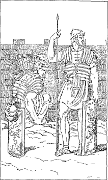
CASTRA MURO FOSSAQUE MUNIUNTUR
501. RULES OF SYNTAX
Note. The rules of syntax are here classified and numbered consecutively. The number of the text section in which the rule appears is given at the end of each.
Nominative Case
1. The subject of a finite verb is in the nominative and answers the question Who? or What? § 36.
Agreement
2. A finite verb must always be in the same person and number as its subject. § 28.
3. A predicate noun agrees in case with the subject of the verb. § 76.
4. An appositive agrees in case with the noun which it explains. § 81.
5. Adjectives agree with their nouns in gender, number, and case. § 65.
6. A predicate adjective completing a complementary infinitive agrees in gender, number, and case with the subject of the main verb. § 215. a.
7. A relative pronoun must agree with its antecedent in gender and number; but its case is determined by the way it is used in its own clause. § 224.
Prepositions
8. A noun governed by a preposition must be in the accusative or ablative case. § 52.
Genitive Case
9. The word denoting the owner or possessor of something is in the genitive and answers the question Whose? § 38.
10. The possessive genitive often stands in the predicate, especially after the forms of sum, and is then called the predicate genitive. § 409.
11. Words denoting a part are often used with the genitive of the whole, known as the partitive genitive. § 331.
12. Numerical descriptions of measure are expressed by the genitive with a modifying adjective. § 443.
13. The indirect object of a verb is in the dative. § 45.
14. The dative of the indirect object is used with the intransitive verbs crēdō, faveō, noceō, pāreō, persuādeō, resistō, studeō, and others of like meaning. § 154.
15. Some verbs compounded with ad, ante, con, dē, in, inter, ob, post, prae, prō, sub, super, admit the dative of the indirect object. Transitive compounds may take both an accusative and a dative. § 426.
16. The dative is used with adjectives to denote the object toward which the given quality is directed. Such are, especially, those meaning near, also fit, friendly, pleasing, like, and their opposites. § 143.
17. The dative is used to denote the purpose or end for which; often with another dative denoting the person or thing affected. § 437.
Accusative Case
18. The direct object of a transitive verb is in the accusative and answers the question Whom? or What? § 37.
19. The subject of the infinitive is in the accusative. § 214.
20. The place to which is expressed by ad or in with the accusative. Before names of towns, small islands, domus, and rūs the preposition is omitted. §§ 263, 266.
21. Duration of time and extent of space are expressed by the accusative. § 336.
22. Verbs of making, choosing, calling, showing, and the like, may take a predicate accusative along with the direct object. With the passive voice the two accusatives become nominatives. § 392.
Ablative Case
23. Cause is denoted by the ablative without a preposition. This answers the question Because of what? § 102.
24. Means is denoted by the ablative without a preposition. This answers the question By means of what? or With what? § 103.
25. Accompaniment is denoted by the ablative with cum. This answers the question With whom? § 104.
26. The ablative with cum is used to denote the manner of an action. Cum may be omitted, if an adjective is used with the ablative. This answers the question How? or In what manner? § 105.
27. With comparatives and words implying comparison the ablative is used to denote the measure of difference. § 317.
263 28. The ablative of a noun or pronoun with a present or perfect participle in agreement is used to express attendant circumstance. This is called the ablative absolute. § 381.
29. 1. Descriptions of physical characteristics are expressed by the ablative with a modifying adjective. § 444.
2. Descriptions involving neither numerical statements nor physical characteristics may be expressed by either the genitive or the ablative with a modifying adjective. § 445.
30. The ablative is used to denote in what respect something is true. § 398.
31. The place from which is expressed by ā or ab, dē, ē or ex with the separative ablative. This answers the question Whence? Before names of towns, small islands, domus, and rūs the preposition is omitted. §§ 264, 266.
32. Words expressing separation or deprivation require an ablative to complete their meaning. This is called the ablative of separation. § 180.
33. The word expressing the person from whom an action starts, when not the subject, is put in the ablative with the preposition ā or ab. This is called the ablative of the personal agent. § 181.
34. The comparative degree, if quam is omitted, is followed by the separative ablative. § 309.
35. The time when or within which anything happens is expressed by the ablative without a preposition. § 275.
36. 1. The place at or in which is expressed by the ablative with in. This answers the question Where? Before names of towns, small islands, and rūs the preposition is omitted. §§ 265, 266.
2. Names of towns and small islands, if singular and of the first or second declension, and the word domus express the place in which by the locative. § 268.
Gerund and Gerundive
37. 1. The gerund is a verbal noun and is used only in the genitive, dative, accusative, and ablative singular. The constructions of these cases are in general the same as those of other nouns. § 406. 1.
2. The gerundive is a verbal adjective and must be used instead of gerund + object, excepting in the genitive and in the ablative without a preposition. Even in these instances the gerundive construction is more usual. § 406. 2.
38. The accusative of the gerund or gerundive with ad, or the genitive with causā, is used to express purpose. § 407.
39. Primary tenses are followed by primary tenses, and secondary by secondary. § 358.
40. The subjunctive is used in a dependent clause to express the purpose of the action in the principal clause. § 349.
41. A substantive clause of purpose with the subjunctive is used as object with verbs of commanding, urging, asking, persuading, or advising, where in English we should usually have the infinitive. § 366.
42. Verbs of fearing are followed by a substantive clause of purpose introduced by ut (that not) or nē (that or lest). § 372.
43. Consecutive clauses of result are introduced by ut or ut nōn, and have the verb in the subjunctive. § 385.
44. Object clauses of result with ut or ut nōn are found after verbs of effecting or bringing about. § 386.
45. A relative clause with the subjunctive is often used to describe an antecedent. This is called the subjunctive of characteristic or description. § 390.
46. The conjunction cum means when, since, or although. It is followed by the subjunctive unless it means when and its clause fixes the time at which the main action took place. § 396.
47. When a direct statement becomes indirect, the principal verb is changed to the infinitive, and its subject nominative becomes subject accusative of the infinitive. § 416.
48. The accusative-with-infinitive construction in indirect statements is found after verbs of saying, telling, knowing, thinking, and perceiving. § 419.
49. A present indicative of a direct statement becomes present infinitive of the indirect, a past indicative becomes perfect infinitive, and a future indicative becomes future infinitive. § 418.
50. In an indirect question the verb is in the subjunctive and its tense is determined by the law for tense sequence. § 432.
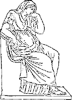
DOMINA
502. Give the English of the following words:1
| Nouns | |||
|---|---|---|---|
agricola |
dea |
gallīna |
pugna |
| Adjectives | |||||
|---|---|---|---|---|---|
alta |
clāra |
lāta |
magna |
nova |
pulchra |
| Verbs | ||||||
|---|---|---|---|---|---|---|
amat |
est |
labōrat |
nārrat |
nūntiat |
portat |
sunt |
| Prepositions | Pronouns | Adverbs | Conjunctions | Interrogative Particle |
|---|---|---|---|---|
ā or ab |
mea |
cūr |
et |
-ne |
266 503. Give the Latin of the following words:1
Underline the words you do not remember. Do not look up a single word till you have gone through the entire list. Then drill on the words you have underlined.
flight battle (noun)
trumpet |
wide
then, in the
daughter labors (verb)
gives |
goddess praises (verb)
alone fights (verb)
carries |
what injury, wrong
where |
504. Review Questions. How many syllables has a Latin word? How are words divided into syllables? What is the ultima? the penult? the antepenult? When is a syllable short? When is a syllable long? What is the law of Latin accent? Define the subject of a sentence; the predicate; the object; the copula. What is inflection? declension? conjugation? What is the ending of the verb in the third person singular, and what in the plural? What does the form of a noun show? Name the Latin cases. What case is used for the subject? the direct object? the possessor? What relation is expressed by the dative case? Give the rule for the indirect object. How are questions answered in Latin? What is a predicate adjective? an attributive adjective? What is meant by agreement? Give the rule for the agreement of the adjective. What are the three relations expressed by the ablative? What can you say of the position of the possessive pronoun? the modifying genitive? the adjective? What is the base? What is grammatical gender? What is the rule for gender in the first declension? What are the general principles of Latin word order?
267505. Fill out the following summary of the first declension:
| The First or Ā-Declension | 1. Ending in the nominative singular | |
| 2. Rule for gender | ||
| 3. Case terminations |
a. Singular b. Plural |
|
| 4. Irregular nouns | ||
506. Give the English of the following words:
| Nouns of the First Declension | |||||
|---|---|---|---|---|---|
agrī cultūra |
cōpia |
fāma |
galea |
lacrima |
patria |
| Nouns of the Second Declension | ||||
|---|---|---|---|---|
ager |
cibus |
frūmentum |
oppidānus |
scūtum |
| Adjectives of the First and Second Declensons | |||
|---|---|---|---|
aeger, aegra, aegrum |
neuter, neutra, neutrum |
||
| 268 Verbs | Demonstrative Pronoun |
Adverbs |
|---|---|---|
arat |
is, ea, id Conjunctions
an |
iam Preposition apud |
507. Give the Latin of the following words:
sword your (plural)
hasten or (in a question)
whither |
war your (singular)
she |
shield (noun)
master
friend master (owner)
carefulness |
plan (noun) neither (of two)
much the other (of two)
hard |
508. Review Questions. How many declensions are there? What three things must be known about a noun before it can be declined? What three cases of neuter nouns are always alike, and in what do they end in the plural? What two plural cases are always alike? When is the vocative singular not like the nominative? What is a predicate noun? With what does it agree? What is an appositive? Give the rule for the agreement of an appositive. How can we tell whether a noun in -er is declined like puer or like ager? 269 Decline bonus, līber, pulcher. How can we tell whether an adjective in -er is declined like līber or like pulcher? Why must we say nauta bonus and not nauta bona? Name the Latin possessive pronouns. How are they declined? With what does the possessive pronoun agree? When do we use tuus and when vester? Why is suus called a reflexive possessive? What is the non-reflexive possessive of the third person? When are possessives omitted? What four uses of the ablative case are covered by the relations expressed in English by with? Give an illustration in Latin of the ablative of manner; of the ablative of cause; of the ablative of means; of the ablative of accompaniment. What ablative regularly has cum? What ablative sometimes has cum? What uses of the ablative never have cum? Name the nine pronominal adjectives, with their meanings. Decline alius, nūllus. Decline is. What does is mean as a demonstrative adjective or pronoun? What other important use has it?
509. Fill out the following summary of the second declension:
|
The Second or O-Declension |
1. Endings in the nominative | |
| 2. Rule for gender | ||
| 3. Case terminations of nouns in -us |
a. Singular b. Plural |
|
| a. The vocative singular of nouns in -us | ||
| 4. Case terminations of nouns in -um |
a. Singular b. Plural |
|
| 5. Peculiarities of nouns in -er and -ir | ||
| 6. Peculiarities of nouns in -ius and -ium | ||
510. Give the English of the following words:
| Nouns of the First Declension | ||||
|---|---|---|---|---|
disciplīna |
poena |
rēgīna |
trīstitia | |
| Nouns of the Second Declension | ||||
|---|---|---|---|---|
| lūdus | ōrnāmentum | sacrum | socius | verbum |
| Adjectives of the First and Second Declensions | ||||
|---|---|---|---|---|
amīcus |
grātus |
interfectus |
molestus |
septem |
| 270 Adverbs | Conjunctions | Personal Pronoun | |
|---|---|---|---|
hodiē |
mox |
etiam |
ego |
| Verbs | |||
|---|---|---|---|
| CONJ. I | CONJ. II | CONJ. III | CONJ. IV |
volō, -āre
IRREGULAR VERB |
dēleō, -ēre |
agō, -ere |
audiō, -īre |
511. Give the Latin of the following words. In the case of verbs always give the first form and the present infinitive.
ancient |
not only ... seven |
nearest |
move
especially, angry |
training |
512. Review Questions. What is conjugation? Name two important differences between conjugation in Latin and in English. What is tense? 271 What is mood? What are the Latin moods? When do we use the indicative mood? Name the six tenses of the indicative. What are personal endings? Name those you have had. Inflect sum in the three tenses you have learned. How many regular conjugations are there? How are they distinguished? How is the present stem found? What tenses are formed from the present stem? What is the tense sign of the imperfect? What is the meaning of the imperfect? What is the tense sign of the future in the first two conjugations? in the last two? Before what letters is a final long vowel of the stem shortened? What are the three possible translations of a present, as of pugnō? Inflect arō, sedeō, mittō, faciō, and veniō, in the present, imperfect, and future active. What forms of -iō verbs of the third conjugation are like audiō? what like regō? Give the rule for the dative with adjectives. Name the special intransitive verbs that govern the dative. What does the imperative mood express? How is the present active imperative formed in the singular? in the plural? What three verbs have a shortened present active imperative? Give the present active imperative of portō, dēleō, agō, faciō, mūniō.
513. Give the English of the following words:
| Nouns of the First Declension | |||||
|---|---|---|---|---|---|
| āla | cūra | mora | porta | prōvincia | vīta |
| Nouns of the Second Declension | |||||
|---|---|---|---|---|---|
animus |
bracchium |
locus |
nāvigium |
perīculum |
vīnum |
| Adjectives of the First and Second Declensions | |||
|---|---|---|---|
adversus |
commōtus |
dubius |
plēnus |
| Adverbs | |||
|---|---|---|---|
anteā |
diū |
ita |
subitō |
| Conjunctions | ||
|---|---|---|
| autem | sī | ubi |
| 272 Prepositions | |||
|---|---|---|---|
| dē | per | prō | sine |
| Verbs | |||
|---|---|---|---|
| CONJ. I | CONJ. II | ||
adpropinquō |
recūsō |
superō |
contineō |
| CONJ. III | IRREGULAR VERB | ||
| discēdō | gerō | interficiō | absum |
514. Translate the following words. Give the genitive and the gender of the nouns and the principal parts of the verbs.
be away before, in behalf of battle down from or concerning |
moreover opposite, adverse
demand then, at that time weary
overcome, |
boat, ship
be without,
moved restrain, keep from |
without hold in, keep afar
thus, so,
arm (noun) bring back, win |
before,
depart,
province reply (verb)
wing for a long time |
515. Give the principal parts and meaning of the following verbs:
sum |
moveō |
moneō |
pāreō |
veniō |
273 516. Review Questions. What are the personal endings in the passive voice? What is the letter -r sometimes called? What are the distinguishing vowels of the four conjugations? What forms constitute the principal parts? What are the three different conjugation stems? How may they be found? What are the tenses of the indicative? of the infinitive? What tense of the imperative have you learned? What forms are built on the present stem? on the perfect stem? on the participial stem? What are the endings of the perfect active indicative? What is the tense sign of the pluperfect active? of the future perfect active? How is the present active infinitive formed? the present passive infinitive? How is the present active imperative formed? the present passive imperative? How is the perfect active infinitive formed? the perfect passive infinitive? How is the future active infinitive formed? What is a participle? How are participles in -us declined? Give the rule for the agreement of the participle. How are the perfect, pluperfect, and future perfect passive indicative formed? Conjugate the verb sum in all moods and tenses as far as you have learned it (§ 494). What is meant by the separative ablative? How is the place from which expressed in Latin? Give the rule for the ablative of separation; for the ablative of the personal agent. How can we distinguish between the ablative of means and the ablative of the personal agent? What is the perfect definite? the perfect indefinite? What is the difference in meaning between the perfect indefinite and the imperfect? What two cases in Latin may be governed by a preposition? Name the prepositions that govern the ablative. What does the preposition in mean when it governs the ablative? the accusative? What are the three interrogatives used to introduce yes-and-no questions? Explain the force of each. What words are sometimes used for yes and no? What are the different meanings and uses of ubi?
517. Give the English of the following words:
| Nouns | ||
|---|---|---|
| FIRST DECLENSION | SECOND DECLENSION | |
| rīpa |
barbarī |
castellum |
| Adjectives of the First and Second Declensions | |||
|---|---|---|---|
| barbarus | dexter | sinister | summus |
| Prepositions | Adverbs | Conjunctions |
|---|---|---|
in with the abl. |
cotīdiē |
nec, neque nec ... nec, or neque ... neque |
| Verbs | ||||
|---|---|---|---|---|
| CONJ. I | CONJ. III | |||
cessō |
oppugnō |
accipiō |
petō |
vincō |
518. Translate the following words. Give the genitive and the gender of the nouns and the principal parts of the verbs:
forbid
manliness,
leader
savage,
sister
hindrance, |
man-of-war defeat, disaster
fire neither ... nor
and not |
conquer assail, storm
begin work (noun)
and |
redoubt, fort drill (verb)
legion into, to
right (adj.) labor (noun)
king |
275 519. Review Questions. Give the conjugation of possum. What is an infinitive? What three uses has the Latin infinitive that are like the English? What is the case of the subject of the infinitive? What is meant by a complementary infinitive? In the sentence The bad boy cannot be happy, what is the case of happy? Give the rule. Decline quī. Give the rule for the agreement of the relative. What are the two uses of the interrogative? Decline quis. What is the base of a noun? How is the stem formed from the base? Are the stem and the base ever the same? How many declensions of nouns are there? Name them. What are the two chief divisions of the third declension? How are the consonant stems classified? Explain the formation of lapis from the stem lapid-, mīles from mīlit-, rēx from rēg-. What nouns have i-stems? What peculiarities of form do i-stems have,—masc., fem., and neut.? Name the five nouns that have -ī and -e in the abl. Decline turris. Give the rules for gender in the third declension. Decline mīles, lapis, rēx, virtūs, cōnsul, legiō, homō, pater, flūmen, opus, tempus, caput, caedēs, urbs, hostis, mare, animal, vīs, iter.
520. Fill out the following scheme:
| The Third Declension | Gender Endings |
Masculine Feminine Neuter |
|
| Case Terminations | I. Consonant Stems |
a. Masc. and fem. b. Neuters |
|
| II. I-Stems |
a. Masc. and fem. b. Neuters |
||
| Irregular Nouns | |||
521. Give the English of the following words:
| Nouns | |||
|---|---|---|---|
| FIRST DECLENSION | SECOND DECLENSION | ||
amīcitia |
annus |
rēgnum
supplicium, |
tergum, vestīgium |
| FIFTH DECLENSION | INDECLINABLE NOUN | ||
aciēs
fidēs, |
rēs, |
spēs | nihil |
| Adjectives | |||
|---|---|---|---|
| FIRST AND SECOND DECLENSIONS | THIRD DECLENSION | ||
dēnsus |
prīstinus |
ācer, ācris, ācre |
gravis, grave |
| Pronouns | |||
|---|---|---|---|
| PERSONAL | DEMONSTRATIVE | INTENSIVE | INDEFINITE |
ego |
hic |
ipse |
aliquis, aliquī |
| Adverbs | Conjunctions | Prepositions | ||
|---|---|---|---|---|
nē ... quidem |
paene |
satis |
itaque |
ante |
| Verbs | |||
|---|---|---|---|
| CONJ. I | CONJ. II | CONJ. III | CONJ. IV |
conlocō |
dēbeō |
committō,
dēcidō
sūmō,
trādūcō |
dēsiliō |
277 522. Translate the following words. Give the genitive and the gender of the nouns and the principal parts of the verbs.
if not, unless on account of
unharmed leap down, dismount
lead across call together friendship footprint, trace each fear (noun)
hope behind, after
so great in truth, indeed that (yonder)
a certain measure, mode
eye thing, matter
exploits |
adversity former, old-time all, every any one (at all) this (of mine) heavy, serious hateful, detested
true
inflict
suffer punishment take up, assume
hour part, direction
body faith, protection
of himself |
burn that (of yours)
before line of battle
army if any one
self, very point out, explain
difficult arrange, station
please |
peace turn the back, retreat night hand, force
lake commit, intrust a few only sharp, eager
we second, favorable
short formerly, once arrival
come under the
swift |
523. Review Questions. By what declensions are Latin adjectives declined? What can you say about the stem of adjectives of the third declension? Into what classes are these adjectives divided? How can you tell to which of the classes an adjective belongs? Decline ācer, omnis, pār. What are the nominative endings and genders of nouns of the fourth 278 or u-declension? What nouns are feminine by exception? Decline adventus, lacus, cornū, domus. Give the rules for the ordinary expression of the place to which, the place from which, the place in which. What special rules apply to names of towns, small islands, and rūs? What is the locative case? What words have a locative case? What is the form of the locative case? Translate Galba lives at home, Galba lives at Rome, Galba lives at Pompeii. What is the rule for gender in the fifth or ē-declension? Decline diēs, rēs. When is the long ē shortened? What can you say about the plural of the fifth declension? Decline tuba, servus, pīlum, ager, puer, mīles, cōnsul, flūmen, caedēs, animal. How is the time when expressed? Name the classes of pronouns and define each class. Decline ego, tū, is. What are the reflexives of the first and second persons? What is the reflexive of the third person? Decline it. Translate I see myself, he sees himself, he sees him. Decline ipse. How is ipse used? Decline īdem. Decline hic, iste, ille. Explain the use of these words. Name and translate the commoner indefinite pronouns. Decline aliquis, quisquam, quīdam, quisque.
524. Give the English of the following words:
| Nouns | |||
|---|---|---|---|
| FIRST DECLENSION | SECOND DECLENSION | ||
aquila |
aedificium |
imperium |
spatium |
| THIRD DECLENSION | |||
agmen |
gēns |
mors |
regiō |
| FOURTH DECLENSION | FIFTH DECLENSION | |
aditus |
passus | rēs frūmentāria |
| THIRD DECLENSION | ||
alacer, alacris, alacre |
humilis, humile |
peior, peius |
| Adverbs | |||
|---|---|---|---|
ācriter |
magis |
optimē |
proximē |
| Conjunctions | Prepositions | |
|---|---|---|
atque, ac |
quā dē causā
simul atque or |
circum |
| Verbs | |||
|---|---|---|---|
| CONJ. I | CONJ. II | ||
cōnor |
moror |
obtineō |
valeō |
| CONJ. III | |||
abdō |
dēdō |
patior |
revertor |
| CONJ. III | |||
| orior | perveniō | ||
280 525. Translate the following words. Give the genitive and the gender of the nouns and the principal parts of the verbs:
on account of keenly, sharply
thousand grain supply
pace from all sides
against line of march
manor between, among
hither (adj.) command, power
captive attempt, try length |
width tribe, nation business by a little
somewhat
move forward,
multitude
give over,
kill hasten, strive
hide second, favorable
two hundred three by three
provisions
wherefore or
for this reason move out, disembark |
fear (verb) greater, larger two by two least (adv.)
opinion, approach, entrance trader magnitude, size council, assembly space, room either ... or rise, arise suffer, allow press hard
fall set fire to defend possess, hold delay (verb) nearest (adv.) nearer (adv.) better (adj.) well known, noble mild, gentle
swift one by one no one least (adv.) little (adv.) learn, know
drag |
leave receive, recover terrify, frighten dwell state, citizenship
valley best of all (adv.)
better (adv.)
very greatly,
building annoy, ravage
hide both ... and rampart |
281 526. Review Questions. What is meant by comparison? In what two ways may adjectives be compared? Compare clārus, brevis, vēlōx, and explain the formation of the comparative and the superlative. What are the adverbs used in comparison? Compare brevis by adverbs. Decline the comparative of vēlōx. How are adjectives in -er compared? Compare ācer, pulcher, liber. What are possible translations for the comparative and superlative? Name the six adjectives that form the superlative in -limus. Translate in two ways Nothing is brighter than the sun. Give the rule for the ablative with comparatives. Compare bonus, magnus, malus, multus, parvus, exterus, īnferus, posterus, superus. Decline plūs. Compare citerior, interior, propior, ulterior. Translate That route to Italy is much shorter. Give the rule for the expression of measure of difference. Name five words that are especially common in this construction. How are adverbs usually formed from adjectives of the first and second declensions? from adjectives of the third declension? Compare the adverbs cārē, līberē, fortiter, audācter. What cases of adjectives are sometimes used as adverbs? What are the adverbs from facilis? multus? prīmus? plūrimus? bonus? magnus? parvus? Compare prope, saepe, magnopere. How are numerals classified? Give the first twenty cardinals. Decline ūnus, duo, trēs, mīlle. How are the hundreds declined? What is meant by the partitive genitive? Give the rule for the partitive genitive. What sort of words are commonly used with this construction? What construction is used with quīdam and cardinal numbers excepting mīlle? Give the first twenty ordinals. How are they declined? How are the distributives declined? Give the rule for the expression of duration of time and extent of space. What is the difference between the ablative of time and the accusative of time? What is a deponent verb? Give the synopsis of one. What form always has a passive meaning? Conjugate amō, moneō, regō, capiō, audiō, in the active and passive.
527. Review the vocabularies of the first seventeen lessons. See §§ 502, 503, 506, 507.
528. Review Questions. Name the tenses of the subjunctive. What time is denoted by these tenses? What are the mood signs of the present subjunctive? How may the imperfect subjunctive be formed? How do the perfect subjunctive and the future perfect indicative active differ in form? How is the pluperfect subjunctive active formed? Inflect the subjunctive active and passive of cūrō, dēleō, vincō, rapiō, mūniō. Inflect the 282 subjunctive tenses of sum; of possum. What are the tenses of the participles in the active? What in the passive? Give the active and passive participles of amō, moneō, regō, capiō, audiō. Decline regēns. What participles do deponent verbs have? What is the difference in meaning between the perfect participle of a deponent verb and of one not deponent? Give the participles of vereor. How should participles usually be translated? Conjugate volō, nolō, mālō, fīō.
What is the difference between the indicative and subjunctive in their fundamental ideas? How is purpose usually expressed in English? How is it expressed in Latin? By what words is a Latin purpose clause introduced? When should quō be used? What is meant by sequence of tenses? Name the primary tenses of the indicative and of the subjunctive; the secondary tenses. What Latin verbs are regularly followed by substantive clauses of purpose? What construction follows iubeō? What construction follows verbs of fearing? How is consequence or result expressed in Latin? How is a result clause introduced? What words are often found in the principal clause foreshadowing the coming of a result clause? How may negative purpose be distinguished from negative result? What is meant by the subjunctive of characteristic or description? How are such clauses introduced? Explain the ablative absolute. Why is the ablative absolute of such frequent occurrence in Latin? Explain the predicate accusative. After what verbs are two accusatives commonly found? What do these accusatives become when the verb is passive?
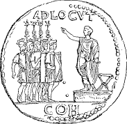
IMPERATOR MILITES HORTATUR
|
Nouns
dea, goddess (deity)
Diā´na, Diana
fera, a wild beast (fierce)
Lātō´na, Latona
sagit´ta, arrow
|
Verbs
est, he (she, it) is; sunt, they are
necat, he (she, it) kills, is killing, does kill
Conjunction1
et, and
|
|
Pronouns
quis, interrog. pronoun, nom. sing., who?
cuius (pronounced co͝oi´yo͝os, two syllables), interrog.
pronoun, gen. sing., whose?
|
|
|
Nouns
corō´na, wreath, garland, crown
fā´bula, story (fable)
pecū´nia, money (pecuniary)
pugna, battle (pugnacious)
victō´ria, victory
|
Verbs
dat, he (she, it) gives
nārrat, he (she, it) tells (narrate)
Conjunction1
quia or quod, because
|
|
Pronoun
cui (pronounced co͝oi, one syllable), interrog. pronoun,
dat. sing., to whom? for whom?
|
|
|
Adjectives
bona, good
grāta, pleasing
magna, large, great
mala, bad, wicked
parva, small, little
pulchra, beautiful, pretty
sōla, alone
|
284
Nouns
ancil´la, maidservant
Iūlia, Julia
Adverbs1
cūr, why
nōn, not
Pronouns
mea, my; tua, thy, your (possesives)
quid, interrog. pronoun, nom. and acc. sing., what?
|
|
-ne, the question sign, an enclitic (§ 16) added to the first word, which,
in a question, is usually the verb, as amat, he loves, but
amat´ne? does he love? est, he is;
estne? is he? Of course -ne is not used when the
sentence contains quis, cūr, or some other interrogative
word.
|
|
|
Nouns
casa, -ae, f., cottage
cēna, -ae, f., dinner
gallī´na, -ae, f., hen, chicken
īn´sula, ae, f., island (pen-insula)
Adverbs
de-in´de, then, in the next place
ubi, where
Preposition
ad, to, with acc. to express motion toward
|
Verbs
ha´bitat, he (she, it) lives, is living, does live
(inhabit)
laudat, he (she, it) praises, is praising, does praise
(laud)
parat, he (she, it) prepares, is preparing, does
prepare
vocat, he (she, it) calls, is calling, does call; invites, is
inviting, does invite (vocation)
|
|
Pronoun
quem, interrog. pronoun, acc. sing., whom?
|
|
|
Nouns
Italia, -ae, f., Italy
Sicilia, -ae, f., Sicily
tuba, -ae, f., trumpet (tube)
via, -ae, f., way, road, street (viaduct)
|
Adjectives
alta, high, deep (altitude)
clāra, clear, bright; famous
lāta, wide (latitude)
longa, long (longitude)
nova, new (novelty)
|
|
Nouns
|
|
|
bellum, -ī, n., war (re-bel)
cōnstantia, -ae, f., firmness, constancy, steadiness
dominus, -ī, m., master, lord (dominate)
equus, -ī, m., horse (equine)
frūmentum, -ī, n., grain
lēgātus, -ī, m., lieutenant, ambassador (legate)
Mārcus, -ī, m., Marcus, Mark
|
mūrus, -ī, m., wall (mural)
oppidānus, -ī, m., townsman
oppidum, -ī, n., town
pīlum, -ī, n., spear (pile driver)
servus, -ī, m., slave, servant
Sextus, -ī, m., Sextus
Verbs
cūrat, he (she, it) cares for, with acc.
properat, he (she, it) hastens
|
|
Nouns
|
|
|
amīcus, -ī, m., friend (amicable)
Germānia, -ae, f., Germany
patria, -ae, f., fatherland
|
populus, -ī, m., people
Rhēnus, -ī, m., the Rhine
vīcus, -ī, m., village
|
|
Nouns
|
|
|
arma, armōrum, n., plur., arms, especially defensive
weapons
fāma, -ae, f., rumor; reputation, fame
|
galea, -ae, f., helmet
praeda, -ae, f., booty, spoils (predatory)
tēlum, -ī, n., weapon of offense, spear
|
|
Adjectives
|
|
|
dūrus, -a, -um, hard, rough; unfeeling, cruel; severe,
toilsome (durable)
|
Rōmānus, -a, -um, Roman. As a noun, Rōmānus, -ī,
m., a Roman
|
|
Nouns
fīlius, fīlī, m., son (filial)
fluvius, fluvī, m., river (fluent)
gladius, gladī, m., sword (gladiator)
praesidium, praesi´dī, n., garrison, guard,
protection
proelium, proelī, n., battle
|
Adjectives
fīnitimus, -a, -um, bordering upon, neighboring, near to.
As a noun, fīnitimī, -ōrum, m., plur., neighbors
Germānus, -a, -um, German. As a noun, Germānus, -ī,
m., a German
multus, -a, -um, much; plur., many
|
|
Adverb
saepe, often
|
|
|
Nouns
|
|
|
ager, agrī, m., field (acre)
cōpia, -ae, f., plenty, abundance (copious); plur.,
troops, forces
Cornēlius, Cornē´lī, m., Cornelius
lōrī´ca, -ae, f., coat of mail, corselet
|
praemium, praemī, n., reward, prize (premium)
puer, puerī, m., boy (puerile)
Rōma, -ae, f., Rome
scūtum, -ī, n., shield (escutcheon)
vir, virī, m., man, hero (virile)
|
|
Adjectives
|
|
|
legiōnārius, -a, -um,1 legionary,
belonging to the legion. As a noun, legiōnāriī, -ōrum, m.,
plur., legionary soldiers
līber, lībera, līberum, free (liberty) As a noun.
līberī, -ōrum, m., plur., children (lit. the
freeborn)
|
pulcher, pulchra, pulchrum, pretty, beautiful
Preposition
apud, among, with acc.
Conjunction
sed, but
|
|
Nouns
|
|
|
auxilium, auxi´lī, n., help, aid (auxiliary)
castrum, -ī, n., fort (castle); plur., camp (lit.
forts)
cibus, -ī, m., food
|
cōnsilium, cōnsi´lī, n., plan (counsel)
dīligentia, -ae, f., diligence, industry
magister, magistrī, m., master, teacher1
|
|
Adjectives
|
|
|
aeger, aegra, aegrum, sick
crēber, crēbra, crēbrum, frequent
|
miser, misera, miserum, wretched, unfortunate
(miser)
|
|
Nouns
carrus, -ī, m., cart, wagon
inopia, -ae, f., want, lack; the opposite of
cōpia
studium, studī, n., zeal, eagerness (study)
Verb
mātūrat, he (she, it) hastens. Cf. properat
|
287
Adjectives
armātus, -a, -um, armed
īnfīrmus, -a, -um, week, feeble (infirm)
vali´dus, -a, -um, strong, sturdy
Adverb
iam, already, now
|
|
-que, conjunction, and; an enclitic (cf.
§ 16) and always added to
the
second of two words to be connected, as arma tēla´que,
arms and weapons.
|
|
|
Nouns
|
|
|
agrī cultūra, -ae, f., agriculture
domicilīum, domīci´lī, n., dwelling place (domicile)
abode
fēmina, -ae, f., woman (female)
|
Gallia, -ae, f., Gaul
Gallus, -i, m., a Gaul
lacrima, -ae, f., tear
numerus, -ī, m., number (numeral)
|
|
Adjective
mātūrus, -a, -um, ripe, mature
Verbs
arat, he (she, it) plows (arable)
dēsīderat, he (she, it) misses, longs for (desire), with
acc.
|
Adverb
quō, whither
Conjunction
an, or, introducing the second half of a double question,
as Is he a Roman or a Gaul, Estne Romanus an Gallus?
|
|
Nouns
lūdus, -ī, m.,school
socius, socī, m., companion, ally (social)
|
Adjectives
īrātus, -a, -um, angry, furious (irate)
laetus, -a, -um, happy, glad (social)
|
|
Adverbs
|
|
|
hodiē, to-day
ibi, there, in that place
mox, presently, soon, of the immediate future
|
nunc, now, the present moment
nūper, lately, recently, of the immediate past
|
|
Nouns
|
|
|
fōrma, -ae, f., form, beauty
poena, -ae, f., punishment, penalty
potentia, -ae, f., power (potent)
|
regīna, -ae, f., queen (regal)
superbia, -ae, f., pride, haughtiness
trīstītīa, -ae, f., sadness, sorrow
|
|
Adjectives
septem, indeclinable, seven
superbus, -a, -um, proud, haughty (superb)
|
Conjunctions
nōn sōlum ... sed etiam, not only ... but also
|
|
Nouns
sacrum, -ī, n., sacrifice, offering, rite
verbum, -ī, n., word (verb)
Verbs
sedeō, -ēre, sit (sediment)
volō, -āre, fly (volatile)
|
Adjectives
interfectus, -a, -um, slain
molestus, -a, -um, troublesome, annoying (molest)
perpetuus, -a, -um, perpetual, continuous
|
|
ego, personal pronoun, I (egotism). Always emphatic in the
nominative.
|
|
|
Nouns
|
|
|
disciplīna, -ae, f., training, culture, discipline
ōrnāmentum, -ī, n., ornament, jewel
|
Gāius, Gāī, m., Caius, a Roman first name
Tiberius, Tibe´rī, m., Tiberius, a Roman first name
|
|
Verb
doceō, -ēre, teach (doctrine)
|
Adverb
maximē, most of all, especially
|
|
Adjective
antīquus, -qua, -quum, old, ancient (antique)
|
|
|
Nouns
āla, -ae, f., wing
deus, -ī, m., god (deity)1
monstrum, -ī, n., omen, prodigy; monster
ōrāculum, -ī, n., oracle
Verb
vāstō, -āre, lay waste, devastate
|
Adjectives
commōtus, -a, -um, moved, excited
maximus, -a, -um, greatest (maximum)
saevus, -a, -um, fierce, savage
Adverbs
ita, thus, in this way, as follows
tum, then, at that time
|
|
Verbs
respondeō, -ēre, respond, reply
servō, -āre, save, preserve
Adjective
cārus, -a, -um, dear (cherish)
|
Conjunction
autem, but, moreover, now. Usually
stands second, never first
Noun
vīta, -ae, f., life (vital)
|
|
Verb
superō, -āre, conquer, overcome (insuperable)
Nouns
cūra, -ae, f., care, trouble
locus, -ī, m., place, spot (location). Locus is
neuter in the plural and is declined loca, -ōrum, etc.
perīculum, -ī, n., danger, peril
|
Adverbs
semper, always
tamen, yet, nevertheless
Prepositions
dē, with abl., down from; concerning
per, with acc., through
Conjunction
si, if
|
|
Verbs
| ||
|
absum, abesse, irreg., be away, be absent, be distant,
with separative abl.
adpropinquō, -āre, draw near, approach (propinquity), with
dative1
contineō, -ēre, hold together, hem in, keep
(contain)
|
discēdō, -ere, depart, go away, leave, with separative
abl.
egeō, -ēre, lack, need, be without, with separative
abl.
interficiō, -ere, kill
prohibeō, -ēre, restrain, keep from (prohibit)
vulnerō, -āre, wound (vulnerable)
|
|
|
Nouns
prōvincia, -ae, f., province
vīnum, -ī, n., wine
|
Adjective
dēfessus, -a, -um, weary, worn out
Adverb
longē, far, by far, far away
|
|
|
Nouns
aurum, -ī, n., gold (oriole)
mora, -ae, f., delay
nāvigium, nāvi´gī, n., boat, ship
ventus, -ī, m., wind (ventilate)
Verb
nāvigō, -āre, sail (navigate)
|
Adjectives
attentus, -a, -um, attentive, careful
dubius, -a, -um, doubtful (dubious)
perfidus, -a, -um, faithless, treacherous (perfidy)
Adverb
anteā, before, previously
|
|
Preposition
sine, with abl., without
|
|
|
Nouns
animus, -ī, m., mind, heart; spirit, feeling
(animate)
bracchium, bracchī, n., forearm, arm
porta, -ae, f., gate (portal)
|
Adjectives
adversus, -a, -um, opposite; adverse, contrary
plēnus, -a, -um, full (plenty)
|
|
Preposition
prō, with abl., before; in behalf of; instead of
|
Adverb
diū, for a long time, long
|
|
Adverbs
|
|
|
celeriter, quickly (celerity)
dēnique, finally
|
graviter, heavily, severely (gravity)
subitō, suddenly
|
|
Verb
reportō, -āre, -āvī, bring back, restore; win, gain
(report)
|
|
|
dexter, dextra, dextrum, right (dextrous)
|
sinister, sinistra, sinistrum, left
frūstrā, adv., in vain (frustrate)
|
|
gerō, gerere, gessī, gestus, bear, carry on; wear;
bellum gerere, to wage war
occupō, occupāre, occupāvī, occupātus, seize, take possession
of (occupy)
postulō, postulāre, postulāvī, postulātus, demand
(ex-postulate)
recūsō, recūsāre, recūsāvī, recūsātus, refuse
stō, stāre, stetī, status, stand
temptō, temptāre, temptāvī, temptātus, try, tempt, test;
attempt
teneō, tenēre, tenuī, ——, keep, hold
(tenacious)
The word ubi, which we have used so much in the sense of
where in asking a question, has two other uses equally
important:
1. ubi = when, as a relative conjunction denoting time;
as,
Ubi mōnstrum audīvērunt, fūgērunt, when they heard the monster, they fled
2. ubi = where, as a relative conjunction denoting place;
as,
Videō oppidum ubi Galba habitat, I see the town where Galba lives
Ubi is called a relative conjunction because it is
equivalent to a relative pronoun. When in the first sentence is
equivalent to at the time at which; and in the second,
where is equivalent to the place in which.
|
|
|
neque or nec, conj., neither, nor, and ... not;
neque ... neque, neither ... nor
|
castellum, -ī, n., redoubt, fort (castle)
cotīdiē, adv., daily
|
|
cessō, cessāre, cessāvī, cessātus, cease, with the infin.
incipiō, incipere, incēpī, inceptus, begin (incipient),
with the infin.
oppugnō, oppugnāre, oppugnāvī, oppugnātus, storm,
assail
petō, petere, petivi or petiī, petītus, aim at, assail,
storm, attack; seek, ask (petition)
pōnō, pōnere, posuī, positus, place, put (position);
castra pōnere, to pitch camp
possum, posse, potuī, ——, be able, can
(potent), with the infin.
vetō, vetāre, vetuī, vetitus, forbid (veto), vith the
infin.; opposite of iubeō, command
vincō, vincere, vīcī, victus, conquer (in-vincible)
vīvō, vīvere, vīxī, ——, live, be alive
(re-vive)
|
|
|
barbarus, -a, -um, strange, foreign, barbarous. As a noun,
barbarī, -ōrum, m., plur., savages, barbarians
dux, ducis, m., leader (duke). Cf. the verb
dūcō
eques, equitis, m., horseman, cavalryman
(equestrian)
iūdex, iūdicis, m., judge
lapis, lapidis, m., stone (lapidary)
mīles, mīlitis, m., soldier (militia)
|
pedes, peditis, m., foot soldier (pedestrian)
pēs, pedis,1 m., foot
(pedal)
prīnceps, prīncipis, m., chief (principal)
rēx, rēgis, m., king (regal)
summus, -a, -um, highest, greatest (summit)
virtūs, virtūtis, f., manliness, courage (virtue)
|
|
calamitās, calamitātis, f., loss, disaster, defeat
(calamity)
caput, capitis, n., head (capital)
flūmen, flūminis, n., river (flume)
labor, labōris, m., labor, toil
opus, operis, n., work, task
|
ōrātor, ōrātōris, m., orator
rīpa, -ae, f., bank (of a stream)
tempus, temporis, n., time (temporal)
terror, terrōris, m., terror, fear
victor, victōris, m., victor
|
|
accipiō, accipere, accēpī, acceptus, receive, accept
cōnfirmō, cōnfīrmāre, cōnfīrmāvī, cōnfīrmātus, strengthen,
establish, encourage (confirm)
|
|
|
animal, animālis (-ium1), n.,
animal
avis, avis (-ium), f., bird (aviation)
caedēs, caedīs (-ium), f., slaughter
calcar, calcāris (-ium), n., spur
cīvis, cīvis (-ium), m. and f., citizen (civic)
cliēns, clientis (-ium), m., retainer, dependent
(client)
fīnis, fīnis (-ium), m., end, limit (final); plur.,
country, territory
hostis, hostis (-ium), m. and f., enemy in war (hostile).
Distinguish from inimīcus, which means a personal
enemy
|
ignis, ignis (-ium), m., fire (ignite)
īnsigne, īnsignis (-ium), n. decoration, badge
(ensign)
mare, maris (-ium2), n., sea
(marine)
nāvis, nāvis (-ium), f., ship (naval);
nāvis longa, man-of-war
turris, turris (-ium), f., tower (turret)
urbs, urbis (-ium), f., city (suburb). An urbs is
larger than an oppidum.
|
|
ācer, ācris, ācre, sharp, keen, eager (acrid)
brevis, breve, short, brief
difficilis, difficile, difficult
facilis, facile, facile, easy
fortis, forte, brave (fortitude)
gravis, grave, heavy, severe, serious (grave)
|
omnis, omne, every, all (omnibus)
pār, gen. paris, equal (par)
paucī, -ae, -a, few, only a few (paucity)
secundus, -a, -um, second; favorable, opposite of
adversus
signum, -ī, n., signal, sign, standard
vēlōx, gen. vēlōcis, swift (velocity)
|
|
conlocō, conlocāre, conlocāvī, conlocātus, arrange, station,
place (collocation)
dēmōnstrō, dēmōnstrāre, dēmōnstrāvī, dēmōnstrātus, point out,
explain (demonstrate)
mandō, mandāre, mandāvī, mandātus, commit, intrust
(mandate)
|
|
|
adventus, -ūs, m., approach, arrival (advent)
ante, prep, with acc., before (ante-date)
cornū, -ūs, n., horn, wing of an army (cornucopia);
ā dextrō cornū, on the right wing;
ā sinistrō cornū, on the left wing
equitātus, -ūs, m., cavalry
exercitus, -ūs, m., army
|
impetus, -ūs, m., attack (impetus); impetum facere
in, with acc., to make an attack on
lacus, -ūs, dat. and abl. plur. lacubus, m., lake
manus, -ūs, f., hand; band, force (manual)
portus, -ūs, m., harbor (port)
post, prep, with acc., behind, after (post-mortem)
|
|
cremō, cremāre, cremāvī, cremātus, burn (cremate)
exerceō, exercēre, exercuī, exercitus, practice, drill,
train (exercise)
|
|
|
aciēs, -ēī, f., line of battle
aestās, aestātis, f., summer
annus, -ī, m., year (annual)
diēs, diēī, m., day (diary)
fidēs, fideī, no plur., f., faith, trust; promise, word;
protection; in fidem venīre, to come under the
protection
fluctus, -ūs, m. wave, billow (fluctuate)
hiems, hiemis, f., winter
hōra, -ae, f., hour
|
lūx, lūcis, f., light (lucid); prīma lux,
daybreak
merīdiēs, acc. -em, abl. -ē, no plur., m.,
midday (meridian)
nox, noctis (-ium), f., night (nocturnal)
prīmus, -a, -um, first (prime)
rēs, reī, f., thing, matter (real);
rēs gestae, deeds, exploits (lit. things
performed); rēs adversae, adversity; rēs
secundae, prosperity
spēs, speī, f., hope
|
|
amīcitia, -ae, f., friendship (amicable)
itaque, conj., and so, therefore, accordingly
littera, -ae, f., a letter of the alphabet;
plur., a letter, an epistle
metus, metūs, m., fear
nihil, indeclinable, n., nothing (nihilist)
|
nūntius, nūntī, m., messenger. Cf. nūntiō
pāx, pācis, f., peace (pacify)
rēgnum, -ī, n., reign, sovereignty, kingdom
supplicum, suppli´cī, n., punishment;
supplicum sūmere dē, with abl., inflict punishment
on;
supplicum dare, suffer punishment. Cf. poena
|
|
placeō, placēre, placuī, placitus, be pleasing to, please,
with dative. Cf.
§ 154
sūmō, sūmere, sūmpsī, sūmptus, take up, assume
sustineō, sustinēre, sustinuī, sustentus, sustain
|
|
|
corpus, corporis, n., body (corporal)
dēnsus, -a, -um, dense
īdem, e´adem, idem, demonstrative pronoun, the same
(identity)
ipse, ipsa, ipsum, intensive pronoun, self; even,
very
mīrus, -a, -um, wonderful, marvelous (miracle)
|
ōlim, adv., formerly, once upon a time
pars, partis (-ium), f., part, region, direction
quoque, adv., also. Stands after the word which it
emphasizes
sōl, sōlis, m., sun (solar)
vērus, -a, -um, true, real (verity)
|
|
dēbeō, dēbēre, dēbuī, dēbitus, owe, ought (debt)
ēripiō, ēripere, ēripuī, ēreptus, snatch from
|
|
|
hic, haec, hoc, demonstrative pronoun, this (of mine);
he, she, it
ille, illa, illud, demonstrative pronoun that (yonder);
he, she, it
invīsus, -a, -um, hateful, detested, with dative Cf. § 143
iste, ista, istud, demonstrative pronoun, that (of yours);
he, she, it
lībertās, -ātis, f., liberty
modus, -ī, m., measure; manner, way, mode
|
nōmen, nōminis, n., name (nominate)
oculus, -ī, m., eye (oculist)
prīstinus, -a, -um, former, old-time (pristine)
pūblicus, -a, -um, public, belonging to the state; rēs
pūblica, reī pūblicae, f., the commonwealth, the state, the
republic
vestīgium, vestī´gī, n., footprint, track; trace,
vestige
vōx, vōcis, f., voice
|
|
incolumis, -e, unharmed
nē ... quidem, adv., not even. The emphatic word stands
between nē and quidem
nisi, conj., unless, if ... not
paene, adv., almost (pen-insula)
|
satis, adv., enough, sufficiently (satisfaction)
tantus, -a, -um, so great
vērō, adv., truly, indeed, in fact. As a conj. but,
however, usually stands second, never first.
|
|
dēcidō, dēcidere, dēcidī, ——, fall down
(deciduous)
dēsiliō, dēsilīre, dēsiluī, dēsultus, leap down,
dismount
maneō, manēre, mānsī, mānsūrus, remain
trādūcō, trādūcere, trādūxī, trāductus, lead across
|
|
|
aquila, -ae, f., eagle (aquiline)
audāx, gen. audācis, adj., bold, audacious
celer, celeris, celere, swift, quick (celerity). Cf.
vēlōx
explōratōr, -ōris, m., scout, spy (explorer)
ingēns, gen. ingentis, adj., huge, vast
medius, -a, -um, middle, middle part of (medium)
|
mēns, mentis (-ium), f., mind (mental). Cf.
animus
opportūnus, -a, -um, opportune
quam, adv., than. With the superlative quam gives
the force of as possible, as quam audācissimī virī, men
as bold as possible
recens, gen. recentis, adj., recent
tam, adv., so. Always with an adjective or adverb, while
ita is generally used with a verb
|
|
quaerō, quaerere, quaesīvī, quaesītus, ask, inquire, seek
(question). Cf. petō
|
|
|
alacer, alacris, alacre, eager, spirited, excited
(alacrity)
celeritās, -ātis, f., speed (celerity)
clāmor, clāmōris, m., shout, clamor
lēnis, lēne, mild, gentle (lenient)
mulier, muli´eris, f., woman
multitūdō, multitūdinis, f., multitude
nēmŏ, dat. nēminī, acc. nēminem (gen.
nūllīus, abl. nūllō, from nūllus), no plur., m. and
f., no one
|
nōbilis, nōbile, well known, noble
noctū, adv. (an old abl.), by night (nocturnal)
statim, adv., immediately, at once
subitō, adv., suddenly
tardus, -a, -um, slow (tardy)
|
|
cupiō, cupere, cupīvī, cupītus, desire, wish
(cupidity)
|
|
|
aedificium, aedifi´cī, n., building, dwelling
(edifice)
imperium, impe´rī, n., command, chief power; empire
mors, mortis (-ium), f., death (mortal)
|
reliquus, -a, -um, remaining, rest of. As a noun, m. and
n. plur., the rest (relic)
scelus, sceleris, n., crime
servitūs, -ūtis, f., slavery (servitude)
vallēs, vallis (-ium), f., valley
|
|
abdō, abdere, abdidī, abditus, hide
contendō, contendere, contendī, contentus, strain, struggle;
hasten (contend)
occīdō, occīdere, occīdī, occīsus, cut down, kill. Cf.
necō, interficiō
perterreō, perterrēre, perterruī, perterritus, terrify,
frighten
recipiō, recipere, recēpī, receptus, receive, recover;
sē recipere, betake one’s self, withdraw, retreat
trādō, trādere, trādidī, trāditus, give over, surrender,
deliver (traitor)
| |
|
aditus, -ūs, m., approach, access; entrance
cīvitās, cīvitātis, f., citizenship; body of citizens,
state (city)
inter, prep, with acc., between, among (interstate
commerce)
|
nam, conj., for
obses, obsidis, m. and f., hostage
paulō, adv. (abl. n. of paulus), by a little,
somewhat
|
|
incolō, incolere, incoluī, ——, transitive,
inhabit; intransitive, dwell. Cf.
habitō, vīvō
relinquō, relinquere, relīquī, relictus, leave, abandon
(relinquish)
statuō, statuere, statuī, statūtus, fix, decide (statute),
usually with infin.
|
|
|
aequus, -a, -um, even, level; equal
cohors, cohortis (-ium), f., cohort, a tenth part of a
legion, about 360 men
currō, currere, cucurrī, cursus, run (course)
difficultās, -ātis, f., difficulty
fossa, -ae, f., ditch (fosse)
|
gēns, gentis (-ium), f., race, tribe, nation
(Gentile)
negōtium, negōtī, n., business, affair, matter
(negotiate)
regiō, -ōnis, f., region, district
rūmor, rūmōris, m., rumor, report. Cf. fāma
simul atque, conj., as soon as
|
|
suscipiō, suscipere, suscēpī, susceptus, undertake
trahō, trahere, trāxī, trāctus, drag, draw
(ex-tract)
valeō, valēre, valuī, valitūrus, be strong; plūrimum
valēre, to be most powerful, have great influence (value). Cf.
validus
|
|
|
agmen, agminis, n., line of march, column; prīmum
agmen, the van; novissimum agmen, the
rear
atque, ac, conj., and; atque is used before vowels
and consonants, ac before consonants only. Cf. et and
-que
concilium, conci´lī, n., council, assembly
|
Helvētiī, -ōrum, m., the Helvetii, a Gallic tribe
passus, passūs, m., a pace, five Roman feet; mīlle
passuum, a thousand (of) paces, a Roman mile
quā dē causā, for this reason, for what reason
vāllum, -ī, n., earth-works, rampart
|
|
cadō, cadere, cecidī, cāsūrus, fall (decadence)
dēdō, dēdere, dēdidī, dēditus, surrender, give up; with a
reflexive pronoun, surrender one’s self, submit, with the dative
of the indirect object
premō, premere, pressī, pressus, press hard, harass
vexō, vexāre, vexāvī, vexātus, annoy, ravage (vex)
|
|
|
aut, conj., or; aut ... aut, either ...
or
causā, abl. of causa, for the sake of, because of.
Always stands after the gen. which modifies it
ferē, adv., nearly, almost
|
opīniō, -ōnis, f., opinion, supposition, expectation
rēs frūmentāria, reī frūmentāriae, f. (lit. the grain
affair), grain supply
timor, -ōris, m., fear. Cf. timeō
undique, adv., from all sides
|
|
cōnor, cōnārī, cōnātus sum, attempt, try
ēgredior, ēgredī, ēgressus sum, move out, disembark;
prōgredior, move forward, advance (egress, progress)
moror, morārī, morātus sum, delay
orior, orirī, ortus sum, arise, spring; begin; be born
(from) (origin)
proficīscor, proficīscī, profectus sum, set out
revertor, revertī, reversus sum, return (revert). The
forms of this verb are usually active, and not deponent, in the perfect
system. Perf. act., revertī
sequor, sequī, secūtus sum, follow (sequence). Note the
following compounds of sequor and the force of the different
prefixes: cōnsequor (follow with), overtake;
īnsequor (follow against), pursue; subsequor
(follow under), follow close after
|
|
Translations inclosed within parentheses are not to be used as such; they are inserted to show etymological meanings.
A B C D E F G H I L M N O P Q R S T U V
| A | |
|
ā or ab, prep. with abl. from, by, off. Translated
on in ā dextrō cornū, on the right wing; ā
fronte, on the front or in front; ā dextrā,
on the right; ā latere, on the
side; etc.
ab-dō, -ere, -didī, -ditus, hide, conceal
ab-dūcō, -ere, -dūxī, -ductus, lead off, lead away
abs-cīdō, -ere, -cīdī,-cīsus [ab(s), off, +
caedō, cut], cut off
ab-sum, -esse, āfuī, āfutūrus, be away, be absent, be distant,
be off; with ā or ab and abl., § 501.32
ac, conj., see atque
ac-cipiō, -ere, -cēpī, -ceptus [ad, to, +
capiō, take], receive, accept
ācer, ācris, ācre, adj. sharp; figuratively, keen,
active, eager (§ 471)
acerbus, -a, -um, adj. bitter, sour
aciēs, -ēī, f. [ācer, sharp], edge; line of
battle
ācriter, adv. [ācer, sharp], compared ācrius,
ācerrimē, sharply, fiercely
ad, prep. with acc. to, towards, near. With the gerund or
gerundive, to, for
ad-aequō, -āre, -āvī, -ātus, make equal, make level
with
ad-dūcō, -ere, -dūxī, -ductus, lead to; move, induce
ad-eō, -īre, -iī, -itus, go to, approach, draw near,
visit, with acc. (§ 413)
ad-ferō, ad-ferre, at-tulī, ad-lātus, bring, convey; report,
announce; render, give (§ 426)
ad-ficiō, -ere, -fēcī, -fectus [ad, to, +
faciō, do], affect, visit
adflīctātus, -a, -um, adj. [part. of adflīctō,
shatter], shattered
ad-flīgō, -ere, -flīxī, -flīctus, dash upon, strike upon;
harass, distress
ad-hibeō, -ēre, -uī, -itus [ad, to, + habeō,
hold], apply, employ, use
ad-hūc, adv. hitherto, as yet, thus far
aditus, -ūs, m. [adeō, approach], approach,
access; entrance. Cf. adventus
ad-ligō, -āre, -āvī, -ātus, bind to, fasten
ad-loquor, -loquī, -locūtus sum, dep. verb [ad, to,
+ loquor, speak], speak to, address,
with acc.
ad-ministrō, -āre, -āvī, -ātus, manage, direct
admīrātiō, -ōnis, f. [admīror, wonder at],
admiration, astonishment
ad-moveō, -ēre, -mōvī, -mōtus, move to; apply,
employ
ad-propinquō, -āre, -āvī, -ātus, come near, approach, with
dat.
ad-sum, -esse, -fuī, -futūres, be present; assist; with
dat.,
§ 426
adulēscēns, -entis, m. and f. [part. of adolēscō,
grow], a youth, young man, young person
300
adventus, -ūs, m. [ad, to, + veniō,
come], approach, arrival (§ 466)
adversus, -a, -um, adj. [part. of advertō, turn
to], turned towards, facing; contrary, adverse.
rēs adversae, adversity
aedificium, aedifi´cī, n. [aedificō, build],
building, edifice
aedificō, -āre, -āvi, -ātus [aedēs, house, +
faciō, make], build
aeger, aegra, aegrum, adj. sick, feeble
aequālis, -e, adj. equal, like. As a noun, aequālis,
-is, m. or f. one of the same age
aequus, -a, -um, adj. even, level; equal
Aesōpus, -ī, m. Æsop, a writer of fables
aestās, -ātis, f. summer, initā aestāte, at the
beginning of summer
aetās, -ātis, f. age
Aethiopia, -ae, f. Ethiopia, a country in Africa
Āfrica, -ae, f. Africa
Āfricānus, -a, -um, adj. of Africa. A name given to Scipio
for his victories in Africa
ager, agrī, m. field, farm, land (§ 462. c)
agger, -eris, m. mound
agmen, -inis, n. [agō, drive], an army on
the march, column.
prīmum agmen, the van
agō, -ere, ēgī, āctus, drive, lead; do, perform.
vītam agere, pass life
agricola, -ae, m. [ager, field, + colō,
cultivate], farmer
agrī cultūra, -ae, f. agriculture
āla, -ae, f. wing
alacer, -cris, -cre, adj. active, eager. Cf.
ācer
alacritās, -ātis, f. [alacer, active],
eagerness, alacrity
alacriter, adv. [alacer, active], comp alacrius,
alacerrimē, actively, eagerly
albus, -a, -um, adj., white
alcēs, -is, f. elk
Alcmēna, -ae, f. Alcme´na, the mother of Hercules
aliquis (-quī), -qua, -quid (-quod), indef. pron. some one,
some (§ 487)
alius, -a, -ud (gen. -īus, dat. -ī), adj.
another, other.
alius ... alius, one ... another.
aliī ... aliī, some ... others (§ 110)
Alpēs, -ium, f. plur. the Alps
alter, -era, -erum (gen. -īus, dat. -ī), adj.
the one, the other (of two).
alter ... alter, the one ... the other (§ 110)
|
altitūdō, -inis, f. [altus, high],
height
altus, -a, -um, adj. high, tall, deep
Amāzonēs, -um, f. plur. Amazons, a fabled tribe of warlike
women
ambō, -ae, -ō, adj. (decl. like duo), both
amīcē, adv. [amīcus, friendly], superl.
amīcissimē, in a friendly manner
amiciō, -īre, ——, -ictus [am-, about, +
iaciō, throw], throw around, wrap about,
clothe
amīcitia, -ae, f. [amīcus, friend],
friendship
amīcus, -a, -um, adj. [amō, love], friendly.
As a noun, amīcus, -ī, m. friend
ā-mittō, -ere, -mīsī, -missus, send away;
lose
amō, -āre, -āvī, -ātus, love, like, be fond of (§ 488)
amphitheātrum, -ī, n. amphitheater
amplus, -a, -um, adj. large, ample; honorable, noble
an, conj. or, introducing the second part of a double
question
ancilla, -ae, f. maidservant
301
ancora, -ae, f. anchor
Andromeda, -ae, f. Androm´eda, daughter of Cepheus and
wife of Perseus
angulus, -ī, m. angle, corner
anim-advertō, -ere, -tī, -sus [animus, mind, +
advertō, turn to], turn the mind to, notice
animal, -ālis, n. [anima, breath], animal
(§ 465. b)
animōsus, -a, -um, adj. spirited
animus, -ī, m. [anima, breath], mind, heart;
spirit, courage, feeling; in this sense often plural
annus, -i, m. year
ante, prep, with acc. before
anteā, adv. [ante], before, formerly
antīquus, -a, -um, adj. [ante, before], former,
ancient, old
aper, aprī, m. wild boar
Apollō, -inis, m. Apollo, son of Jupiter and Latona,
brother of Diana
ap-pāreō, -ēre, -uī, —— [ad + pāreō,
appear], appear
ap-pellō, -āre, -āvī, -ātus, call by name, name. Cf.
nōminō, vocō
Appius, -a, -um, adj. Appian
ap-plicō, -āre, -āvī, -ātus, apply, direct, turn
apud, prep, with acc. among; at, at the house of
aqua, -ae, f. water
aquila, -ae, f. eagle
āra, -ae, f. altar
arbitror, -ārī, -ātus sum, think, suppose (§ 420. c). Cf.
exīstimō, putō
arbor, -oris, f. tree (§ 247. 1. a)
Arcadia, -ae, f. Arcadia, a district in southern
Greece
ārdeō, -ēre, ārsī, ārsūrus, be on fire, blaze, burn
arduus, -a, -um, adj. steep
Arīcia, -ae, f. Aricia, a town on the Appian Way, near
Rome
ariēs, -etis, m. battering-ram (p.
221)
arma, -ōrum, n. plur. arms, weapons. Cf.
tēlum
armātus, -a, -um, adj. [armō, arm], armed,
equipped
arō, -āre, -āvī, -ātus, plow, till
ars, artis, f. art, skill
articulus, -ī, m. joint
ascrībō, -ere, -scrīpsī, -scrīptus [ad, in
addition, + scrībō, write], enroll,
enlist
Āsia, -ae, f. Asia, i.e. Asia Minor
at, conj. but. Cf. autem, sed
Athēnae, -ārum, f. plur. Athens
Atlās, -antis, m. Atlas, a Titan who was said to hold up
the sky
at-que, ac, conj. and, and also, and what is more.
atque may be used before either vowels or consonants, ac
before consonants only
attentus, -a, -um, adj. [part. of attendō, direct
(the mind) toward], attentive, intent on, careful
at-tonitus, -a, -um, adj. thunderstruck, astounded
audācia, -ae, f. [audāx, bold], boldness,
audacity
audācter, adv. [audāx, bold], compared audācius,
audācissimē, boldly
audāx, -ācis, adj. bold, daring
audeō, -ēre, ausus sum, dare
Augēās, -ae, m. Auge´as, a king whose stables Hercules
cleaned
aura, -ae, f. air, breeze
aurātus, -a, -um, adj. [aurum, gold], adorned
with gold
302
aureus, -a, -um, adj. [aurum, gold],
golden
aurum, -ī, n. gold
aut, conj. or.
aut ... aut, either ... or
autem, conj., usually second, never first, in the clause, but,
moreover, however, now. Cf. at, sed
auxilium, auxi´lī, n. help, aid, assistance; plur.
auxiliaries
ā-vertō, -ere, -tī, -sus, turn away, turn aside
avis, -is, f. bird (§ 243. 1)
|
| B | |
|
ballista, -ae, f. ballista, an engine for hurling missiles
(p. 220)
balteus, -ī, m. belt, sword belt
barbarus, -ī, m. barbarian, savage
bellum, -ī, n. war.
bellum īnferre, with dat. make war upon
bene, adv. [for bonē, from bonus], compared
melius, optimē, well
benignē, adv. [benignus, kind], compared
benignius, benignissimē, kindly
benignus, -a, -um, adj. good-natured, kind, often used
with dat.
bīnī, -ae, -a, distributive numeral adj. two each, two at a
time (§ 334)
|
bis, adv. twice
bonus, -a, -um, adj. compared melior, optimus, good,
kind (§ 469. a)
bōs, bovis (gen. plur. boum or bovum, dat. and abl.
plur. bōbus or būbus), m. and f. ox, cow
bracchium, bracchī, n. arm
brevis, -e, adj. short
Brundisium, -ī, n. Brundisium, a seaport in southern
Italy. See map
bulla, -ae, f. bulla, a locket made of small concave
plates of gold fastened by a spring (p.
212)
|
| C | |
|
C. abbreviation for Gāius, Eng. Caius
cadō, -ere, ce´cidī, cāsūrus, fall
caedēs, -is, f. [caedō, cut], (a cutting
down), slaughter, carnage (§ 465. a)
caelum, -ī, n. sky, heavens
Caesar, -aris, m. Cæsar, the famous general, statesman,
and writer
calamitās, -ātis, f. loss, calamity, defeat,
disaster
calcar, -āris, n. spur (§ 465. b)
Campānia, -ae, f. Campania., a district of central Italy.
See map
Campānus, -a, -um, adj. of Campania
campus, -ī, m. plain, field, esp. the Campus
Martius, along the Tiber just outside the walls of Rome
canis, -is, m. and f. dog
canō, -ere, ce´cinī, ——, sing
cantō, -āre, -āvi, -ātus [canō, sing],
sing
Capēnus, -a, -um, adj. of Capena, esp. the Porta
Cape´na, the gate at Rome leading to the Appian Way
capiō, -ere, cēpī, captus, take, seize, capture (§ 492)
Capitōlīnus, -a, -um, adj. belonging to the Capitol,
Capitoline
Capitōlium, Capitō´lī, n. [caput, head], the
Capitol, the hill at Rome on which stood the temple of Jupiter
Capitolinus and the citadel
capsa, -ae, f. box for books
captīvus, -ī, m. [capiō, take],
captive
Capua, -ae, f. Capua, a large city of Campania. See
map
caput, -itis, n. head (§ 464.
2. b)
carcer, -eris, m. prison, jail
carrus, -ī, m. cart, wagon
cārus, -a, -um, adj. dear; precious
casa, -ae, f. hut, cottage
303
castellum, -ī, n. [dim. of castrum, fort],
redoubt, fort
castrum, -ī, n. fort. Usually in the plural, castra,
-ōrum, a military camp.
castra pōnere, to pitch camp
cāsus, -us, m. [cadō, fall], chance; misfortune,
loss
catapulta, -ae, f. catapult, an engine for hurling
stones
catēna, -ae, f. chain
caupōna, -ae, f. inn
causa, -ae, f. cause, reason, quā dē causā, for
this reason
cēdō, -ere, cessī, cessūrus, give way, retire
celer, -eris, -ere, adj. swift, fleet
celeritās, -ātis, f. [celer, swift], swiftness,
speed
celeriter, adv. [celer, swift], compared
celerius, celerrimē, swiftly
cēna, -ae, f. dinner
centum, indecl. numeral adj. hundred
centuriō, -ōnis, m. centurion, captain
Cēpheus (dissyl.), -eī (acc. Cēphea), m.
Cepheus, a king of Ethiopia and father of Andromeda
Cerberus, -ī, m. Cerberus, the fabled three-headed dog
that guarded the entrance to Hades
certāmen, -inis, n. [certō, struggle], struggle,
contest, rivalry
certē, adv. [certus, sure], compared certius,
certissimē, surely, certainly
certus, -a, -um, adj. fixed, certain, sure.
aliquem certiōrem facere (to make some one more certain),
to inform some one
cervus, -ī, m. stag, deer
cessō, -āre, -āvī, -ātus, delay, cease
cibāria, -ōrum, n. plur. food, provisions
cibus, -ī, m. food, victuals
Cimbrī, -ōrum, m. plur. the Cimbri
Cimbricus, -a, -um, adj. Cimbrian
cīnctus, -a, -um, adj. [part. of cingō, surround],
girt, surrounded
cingō, -ere, cīnxī, cīnctus, gird, surround
circiter, adv. about
circum, prep, with acc. around
circum´-dō, -dare, -dedī, -datus, place around, surround,
inclose
circum´-eō, -īre, -iī, -itus, go around
circum-sistō, -ere, circum´stetī, ——, stand
around, surround
circum-veniō, -īre, -vēnī, -ventus (come around),
surround
citerior, -ius, adj. in comp., superl. citimus, hither,
nearer (§ 475)
cīvīlis, -e, adj. [cīvis], civil
cīvis, -is, m. and f. citizen (§ 243. 1)
cīvitās, -ātis, f. [cīvis, citizen], (body of
citizens), state; citizenship
clāmor, -ōris, m. shout, cry
clārus, -a, -um, adj. clear; famous, renowned; bright,
shining
classis, -is, f. fleet
claudō, -ere, -sī, -sus, shut, close
clavus, -ī, m. stripe
cliēns, -entis, m. dependent, retainer, client (§ 465. a)
Cocles, -itis, m. (blind in one eye), Cocles, the
surname of Horatius
co-gnōscō, -ere, -gnōvī, -gnītus, learn, know, understand.
Cf. sciō (§ 420. b)
cōgō, -ere, coēgī, coāctus [co(m)-, together, +
agō, drive], (drive together), collect; compel,
drive
cohors, cohortis, f. cohort, the tenth part of a legion,
about 360 men
collis, -is, m. hill, in summō colle, on top of
the hill (§ 247.
2. a)
collum, -ī, n. neck
304
colō, -ere, coluī, cultus, cultivate, till; honor, worship;
devote one’s self to
columna, -ae, f. column, pillar
com- (col-, con-, cor-, co-), a prefix, together, with, or
intensifying the meaning of the root word
coma, -ae, f. hair
comes, -itis, m. and f. [com-, together, +
eō, go], companion, comrade
comitātus, -ūs, m. [comitor, accompany], escort,
company
comitor, -ārī, -ātus sum, dep. verb [comes,
companion], accompany
com-meātus, -ūs, m. supplies
com-minus, adv. [com-, together, + manus,
hand], hand to hand
com-mittō, -ere, -mīsī, -missus, join together; commit,
intrust.
proelium committere, join battle.
sē committere with dat, trust one’s self to
commodē, adv. [commodus, fit], compared
commodius, commodissimē, conveniently, fitly
commodus, -a, -um, adj. suitable, fit
com-mōtus, -a, -um, adj. [part. of commoveō, move],
aroused, moved
com-parō, -āre, -āvī, -ātus [com-, intensive, +
parō, prepare], prepare; provide, get
com-pleō, -ēre, -plēvī, -plētus [com-, intensive, +
pleō, fill], fill up
complexus, -ūs, m. embrace
|
com-primō, -ere, -pressī, -pressus [com-, together,
+ premō, press], press together, grasp, seize
con-cidō, -ere, -cidī, —— [com-, intensive, +
cadō, fall], fall down
concilium, conci´lī, n. meeting, council
con-clūdō, -ere, -clūsī, -clūsus [com-, intensive, +
claudō, close], shut up, close; end, finish
con-currō, -ere, -currī, -cursus [com-, together, +
currō, run], run together; rally, gather
condiciō, -ōnis, f. [com-, together, + dicō,
talk], agreement, condition, terms
con-dōnō, -āre, -āvī, -ātus, pardon
con-dūcō, -ere, -dūxī, -ductus, hire
cōn-ferō, -ferre, -tulī, -lātus, bring together.
sē cōnferre, betake one’s self
cōn-fertus, -a, -um, adj. crowded, thick
cōnfestim, adv. immediately
cōn-ficiō, -ere, -fēcī, -fectus [com-, completely,
+ faciō, do], make, complete, accomplish,
finish
cōn-fīrmō, -āre, -āvī, -ātus, make firm, establish,
strengthen, affirm, assert
cōn-fluō, -ere, -flūxī, ——, flow
together
cōn-fugiō, -ere, -fūgī, -fugitūrus, flee for refuge,
flee
con-iciō, -ere, -iēcī, -iectus [com-, intensive, +
iaciō, throw], hurl
con-iungō, -ere, -iūnxī, -iūnctus [com-, together,
+ iungō, join], join together, unite
con-iūrō, -āre, -āvī, -ātus [com-, together, +
iūrō, swear], unite by oath, conspire
con-locō, -āre, -āvī, -ātus [com-, together, +
locō, place], arrange, place, station
conloquium, conlo´quī, n. [com-, together, +
loquor, speak], conversation, conference
cōnor, -ārī, -ātus sum, dep. verb, endeavor, attempt,
try
cōn-scendō, -ere, -scendī, -scēnsus [com-, intensive, +
scandō, climb], climb up, ascend.
nāvem cōnscendere, embark, go on board
305
cōn-scrībō, -ere, -scrīpsī, -scrīptus [com-,
together, + scrībō, write], (write
together), enroll, enlist
cōn-secrō, -āre, -āvī, -ātus [com-, intensive, +
sacrō, consecrate], consecrate, devote
cōn-sequor, -sequī, -secūtus sum, dep. verb [com-,
intensive, + sequor, follow], pursue; overtake;
win
cōn-servō, -āre, -āvī, -ātus [com-, intensive, +
servō, save], preserve, save
cōnsilium, cōnsi´lī, n. plan, purpose, design;
wisdom
cōn-sistō, -ere, -stitī, -stitus [com-, intensive, +
sistō, cause to stand], stand firmly, halt, take one’s
stand
cōn-spiciō, -ere, -spēxī, -spectus [com-, intensive, +
spiciō, spy], look at attentively, perceive,
see
cōnstantia, -ae, f. firmness, steadiness,
perseverance
cōn-stituō, -ere, -uī, -ūtus [com-, intensive, +
statuō, set], establish, determine, resolve
cōn-stō, -āre, -stitī, -stātūrus [com-, together, +
stō, stand], agree; be certain ; consist of
cōnsul, -ulis, m. consul (§ 464.
2. a)
cōn-sūmō, -ere, -sūmpsī, -sūmptus [com-, intensive, +
sumō, take], consume, use up
con-tendō, -ere, -dī, -tus, strain; hasten; fight, contend,
struggle
con-tineō, -ēre, -uī, -tentus [com-, together, +
teneō, hold], hold together, hem in, contain;
restrain
contrā, prep, with acc. against, contrary to
con-trahō, -ere, -trāxī, -trāctus [com-, together,
+ trahō, draw], draw together; of sails,
shorten, furl
contrōversia, -ae, f. dispute, quarrel
con-veniō, -īre, -vēnī, -ventus [com-, together, +
veniō, come], come together, meet, assemble
con-vertō, -ere, -vertī, -versus [com-, intensive, +
vertō, turn], turn
con-vocō, -āre, -āvī, -ātus [com-, together, +
vocō, call], call together
co-orior, -īrī, -ortus sum, dep. verb [com-, intensive, +
orior, rise], rise, break forth
cōpia, -ae, f. [com-, intensive, + ops,
wealth], abundance, wealth, plenty. Plur. cōpiae,
-ārum, troops
coquō, -ere, coxī, coctus, cook
Corinthus, -ī, f. Corinth, the famous city on the Isthmus
of Corinth
Cornēlia, -ae, f. Cornelia, daughter of Scipio and mother
of the Gracchi
Cornēlius, Cornē´lī, m. Cornelius, a Roman name
cornū, -ūs, n. horn; wing of an army, ā dextrō
cornū, on the right wing (§ 466)
corōna, -ae, f. garland, wreath; crown
corōnātus, -a, -um, adj. crowned
corpus, -oris, n. body
cor-ripiō, -ere, -uī, -reptus [com-, intensive, +
rapiō, seize], seize, grasp
cotīdiānus, -a, -um, adj. daily
cotīdiē, adv. daily
crēber, -bra, -brum, adj. thick, crowded, numerous,
frequent
crēdō, -ere, -dīdī, -ditus, trust, believe, with dat. (§ 501.14)
cremō, -āre, -āvī, -ātus, burn
creō, -āre, -āvī, -ātus, make; elect, appoint
Creōn, -ontis, m. Creon, a king of Corinth
crēscō, -ere, crēvī, crētus, rise, grow, increase
306
Crēta, -ae, f. Crete, a large island in the
Mediterranean
Crētaeus, -a, -um, adj. Cretan
crūs, crūris, n. leg
crūstulum, -ī, n. pastry, cake
cubīle, -is, n. bed
cultūra, -ae, f. culture, cultivation
cum, conj. with the indic. or subjv. when; since; although
(§ 501.46)
cum, prep, with abl. with (§ 209)
cupidē, adv. [cupidus, desirous], compared
cupidius, cupidissimē, eagerly
cupiditās, -ātis, f. [cupidus, desirous],
desire, longing
cupiō, -ere, -īvī or -iī, -ītus, desire, wish. Cf.
volō
cūr, adv. why, wherefore
cūra, -ae, f. care, pains; anxiety
cūria, -ae, f. senate house
cūrō, -āre, -āvī, -ātus [cūra, care], care for,
attend to, look after
currō, -ere, cucurrī, cursus, run
currus, -ūs, m. chariot
cursus, -ūs, m. course
custōdiō, -īre, -īvī, -ītus [custōs, guard],
guard, watch
|
| D | |
|
Daedalus, -ī, m. Dæd´alus, the supposed inventor of the
first flying machine
Dāvus, -ī, m. Davus, name of a slave
dē, prep, with abl. down from, from; concerning, about,
for (§ 209).
quā dē causā, for this reason, wherefore
dea, -ae, f. goddess (§ 461. a)
dēbeō, -ēre, -uī, -itus [dē, from, + habeō,
hold], owe, ought, should
decem, indecl. numeral adj. ten
dē-cernō, -ere, -crēvī, -crētus [dē, from, +
cernō, separate], decide, decree
dē-cidō, -ere, -cidī, —— [dē, down, +
cadō, fall], fall down
decimus, -a, -um, numeral adj. tenth
dēclīvis, -e, adj. sloping downward
dē-dō, -ere, -didī, -ditus, give up, surrender, sē
dēdere, surrender one’s self
dē-dūcō, -ere, -dūxī, -ductus [dē, down, +
dūcō, lead], lead down, escort
dē-fendō, -ere, -dī, -fēnsus, ward off, repel,
defend
dē-ferō, -ferre, -tulī, -lātus [dē, down, +
ferō, bring], bring down; report, announce (§ 426)
dē-fessus, -a, -um, adj. tired out, weary
dē-ficiō, -ere, -fēcī, -fectus [dē, from, +
faciō, make], fail, be wanting; revolt from
dē-fīgō, -ere, -fīxī, -fīxus [dē, down, +
fīgō, fasten], fasten, fix
dē-iciō, -ere, -iēcī, -iectus [dē, down, +
iaciō, hurl], hurl down; bring down, kill
de-inde, adv. (from thence), then, in the next place
dēlectō, -āre, -āvī, -ātus, delight
dēleō, -ēre, -ēvī, -ētus, blot out, destroy
dēlīberō, -āre, -āvī, -ātus, weigh, deliberate,
ponder
dē-ligō, -ere, -lēgī, -lēctus [dē, from, +
legō, gather], choose, select
Delphicus, -a, -um, adj. Delphic
dēmissus, -a, -um [part. of dēmittō, send down],
downcast, humble
dē-mōnstrō, -āre, -āvī, -ātus [dē, out, +
mōnstrō, point], point out, show
dēmum, adv. at last, not till then.
tum dēmum, then at last
dēnique, adv. at last, finally. Cf. postrēmō
dēns, dentis, m. tooth (§ 247. 2. a)
dēnsus, -a, -um, adj. dense, thick
307
dē-pendeō, -ēre, ——, —— [dē,
down, + pendeō, hang], hang from, hang
down
dē-plōrō, -āre, -āvī, -ātus [dē, intensive, +
plōrō, wail], bewail, deplore
dē-pōnō, -ere, -posuī, -positus [dē, down, +
pōnō, put], put down
dē-scendō, -ere, -dī, -scēnsus [dē, down, +
scandō, climb], climb down, descend
dē-scrībō, -ere, -scrīpsī, -scrīptus [dē, down, +
scrībō, write], write down
dēsīderō, -āre, -āvī, -ātus, long for
dē-siliō, -īre, -uī, -sultus [dē, down, +
saliō, leap], leap down
dē-spērō, -āre, -āvī, -ātus [dē, away from,
+ spērō, hope], despair
dē-spiciō, -ere, -spēxi, -spectus [dē, down],
look down upon, despise
dē-sum, -esse, -fuī, -futūrus [dē, away from, +
sum, be], be wanting, lack, with dat. (§ 426)
deus, -ī, m. god (§ 468)
dē-volvō, -ere, -volvī, -volūtus [dē, down, +
volvō, roll], roll down
dē-vorō, -āre, -āvī, -ātus [dē, down, +
vorō, swallow], devour
dexter, -tra, -trum (-tera, -terum), adj. to the right,
right.
ā dextrō cornū, on the right wing
Diāna, -ae, f. Diana, goddess of the moon and twin sister
of Apollo
|
dīcō, -ere, dīxī, dictus (imv. dīc), say, speak,
tell. Usually introduces indirect discourse (§ 420. a)
dictātor, -ōris, m. [dictō, dictate],
dictator, a chief magistrate with unlimited power
diēs, -ēi or diē, m., sometimes f. in sing., day
(§ 467)
dif-ferō, -ferre, distulī, dīlātus [dis-, apart, +
ferō, carry], carry apart; differ.
differre inter sē, differ from each other
dif-ficilis, -e, adj. [dis-, not, + facilis,
easy], hard, difficult (§ 307)
difficultās, -ātis, f. [difficilis, hard],
difficulty
dīligenter, adv. [dīligēns, careful], compared
dīligentius, dīligentissimē, industriously,
diligently
dīligentia, -ae, f. [dīligēns, careful],
industry, diligence
dī-micō, -āre, -āvī, -ātus, fight, struggle
dī-mittō, -ere, -mīsī, -missus [dī-, off, +
mittō, send], send away, dismiss, disband.
dīmittere animum in, direct one’s mind to, apply one’s self
to
Diomēdēs, -is, m. Dī-o-mē´dēs, a name
dis-, dī-, a prefix expressing separation, off, apart, in
different directions. Often negatives the meaning
dis-cēdō, -ere, -cessī, -cessus [dis-, apart, +
cēdō, go], depart from, leave, withdraw, go
away
dis-cernō, -ere, -crēvī, -crētus [dis-, apart, +
cernō, sift], separate; distinguish
disciplīna, -ae, f. instruction, training,
discipline
discipulus, -ī, m. [discō, learn], pupil,
disciple
discō, -ere, didicī, ——, learn
dis-cutiō, -ere, -cussī, -cussus [dis-, apart, +
quatiō, shake], shatter, dash to pieces
dis-pōnō, -ere, -posuī, -positus [dis-, apart, +
pōnō, put], put here and there, arrange,
station
dis-similis, -e, adj. [dis-, apart, +
similis, like], unlike, dissimilar (§ 307)
dis-tribuō, -ere, -uī, -ūtus, divide, distribute
308
diū, adv., compared diūtius, diūtissimē, for a long
time, long (§ 477)
dō, dare, dedī, datus, give.
in fugam dare, put to flight.
alicui negōtium dare, employ some one
doceō, -ēre, -uī, -tus, teach, show
doctrīna, -ae, f. [doctor, teacher], teaching,
learning, wisdom
dolor, -ōris, m. pain, sorrow
domesticus, -a, -um, adj. [domus, house], of the
house, domestic
domicilium, domici´lī, n. dwelling; house, abode. Cf.
domus
domina, -ae, f. mistress (of the house), lady (§ 461)
dominus, -ī, m. master (of the house), owner, ruler
(§ 462)
domus, -ūs, f. house, home.
domī, locative, at home (§ 468)
dormiō, -īre, -īvī, -ītus, sleep
dracō, -ōnis, m. serpent, dragon
dubitō, -āre, -āvī, -ātus, hesitate
dubius, -a, -um, adj. [duo, two], (moving two
ways), doubtful, dubious
du-centī, -ae, -a, numeral adj. two hundred
dūcō, -ere, dūxī, ductus (imv. dūc), lead,
conduct
dum, conj. while, as long as
duo, duae, duo, numeral adj. two (§ 479)
duo-decim, indecl. numeral adj. twelve
dūrus, -a, -um, adj. hard, tough; harsh, pitiless,
bitter
dux, ducis, m. and f. [cf. dūcō, lead], leader,
commander
|
| E | |
|
ē or ex, prep, with abl. out of, from, off, of (§ 209)
eburneus, -a, -um, adj. of ivory
ecce, adv. see! behold! there! here!
ē-dūcō, -ere, -dūxī, -ductus [ē, out, +
dūcō, lead], lead out, draw out
ef-ficiō, -ere, -fēcī, -fectus [ex, thoroughly, +
faciō, do], work out; make, cause
ef-fugiō, -ere, -fūgī, -fugitūrus [ex, from, +
fugiō, flee], escape
egeō, -ēre, -uī, ——, be in need of, lack, with
abl. (§ 501.32)
ego, pers. pron. I; plur. nōs, we (§ 480)
ē-gredior, -ī, ēgressus sum, dep. verb [ē, out of,
+ gradior, go], go out, go forth.
ē nāvī ēgredī, disembark
ē-iciō, -ere, -iēcī, -iectus [ē, forth, +
iaciō, hurl], hurl forth, expel
elementum, -ī, n., in plur. first principles,
rudiments
elephantus, -ī, m. elephant
Ēlis, Ēlidis, f. E´lis, a district of southern
Greece
emō, -ere, ēmī, ēmptus, buy, purchase
enim, conj., never standing first, for, in fact, indeed.
Cf. nam
Ennius, Ennī, m. Ennius, the father of Roman poetry, born
239 B.C.
eō, īre, iī (īvī), itūrus, go (§ 499)
eō, adv. to that place, thither
Ēpīrus, -ī, f. Epi´rus, a district in the north of
Greece
eques, -itis, m. [equus, horse], horseman,
cavalryman
equitātus, -ūs, m. [equitō, ride],
cavalry
equus, -ī, m. horse
ē-rigō, -ere, -rēxī, -rēctus [ē, out, +
regō, make straight], raise up
ē-ripiō, -ere, -uī, -reptus [ē, out of, +
rapiō, seize], seize, rescue
ē-rumpō, -ere, -rūpī, -ruptus [ē, forth, +
rumpō, break], burst forth
ēruptiō, -ōnis, f. sally
309
Erymanthius, -a, -um, adj. Erymanthian, of Erymanthus, a
district in southern Greece
et, conj. and, also.
et ... et, both ... and. Cf. atque, ac, -que
etiam, adv. (rarely conj.) [et, also, + iam,
now], yet, still; also, besides. Cf. quoque.
nōn sōlum ... sed etiam, not only ... but also
|
Etrūscī, -ōrum, m. the Etruscans, the people of Etruria.
See map of Italy
Eurōpa, -ae, f. Europe
Eurystheus, -ī, m. Eurys´theus, a king of Tiryns, a city
in southern Greece
ē-vādō, -ere, -vāsī, -vāsus [ē, out, + vādō,
go], go forth, escape
ex, see ē
exanimātus, -a, -um [part. of exanimō, put out of
breath (anima)], adj. out of breath, tired;
lifeless
ex-cipiō, -ere, -cēpī, -ceptus [ex, out, +
capiō, take], welcome, receive
exemplum, -ī, n. example, model
ex-eō,-īre,-iī,-itūrus [ex, out, + eō,
go], go out, go forth (§ 413)
ex-erceō, -ēre, -uī, -itus [ex, out, +
arceō, shut], (shut out), employ, train, exercise,
use
exercitus, -us, m. [exerceō, train],
army
ex-īstimō, -āre, -āvī, -ātus [ex, out, +
aestimō, reckon], estimate; think, judge (§ 420. c). Cf.
arbitror, putō
ex-orior, -īrī, -ortus sum, dep. verb [ex, forth, +
orior, rise], come forth, rise
expedītus, -a, -um, adj. without baggage
ex-pellō, -ere, -pulī, -pulsus [ex, out, +
pellō, drive], drive out
ex-piō, -āre, -āvī, -ātus [ex, intensive, + pīo,
atone for], make amends for, atone for
explōrātor, -ōris, m. [explōrō, investigate],
spy, scout
explōrō, -āre, -āvī, -ātus, examine, explore
ex-pugnō, -āre, -āvī, -ātus [ex, out, +
pugnō, fight], take by storm, capture
exsilium, exsi´lī, n. [exsul, exile],
banishment, exile
ex-spectō, -āre, -āvī, -ātus [ex, out, +
spectō, look], expect, wait
ex-struō, -ere, -strūxī, -strūctus [ex, out, +
struō, build], build up, erect
exterus, -a, -um, adj., compared exterior, extrēmus or
extimus, outside, outer (§ 312)
extrā, prep, with acc. beyond, outside of
ex-trahō, -ere, -trāxī, -trāctus [ex, out, +
trahō, drag], drag out, pull forth
extrēmus, -a, -um, adj., superl. of exterus, utmost,
farthest (§ 312)
|
| F | |
|
fābula, -ae, f. story, tale, fable
facile, adv. [facilis, easy], compared facilius,
facillimē, easily (§ 322)
facilis, -e, adj. [cf. faciō, make], easy,
without difficulty (§ 307)
faciō, -ere, fēcī, factus (imv. fac), make, do; cause,
bring about.
impetum facere in, make an attack upon.
proelium facere, fight a battle.
iter facere, make a march or journey.
aliquem certiōrem facere, inform some one.
facere verba prō, speak in behalf of.
Passive fīō, fierī, factus sum, be done, happen.
certior fierī, be informed
fallō, -ere, fefellī, falsus, trip, betray, deceive
fāma, -ae, f. report, rumor; renown, fame,
reputation
310
famēs, -is (abl. famē), f. hunger
familia, -ae, f. servants, slaves; household, family
fascēs, -ium (plur. of fascis), f. fasces (p. 225)
fastīgium, fastī´gī, n. top; slope, descent
fātum, -ī, n. fate, destiny
faucēs, -ium, f. plur. jaws, throat
faveō, -ēre, fāvī, fautūrus, be favorable to, favor, with
dat. (§ 501.14)
fēlīx, -īcis, adj. happy, lucky
fēmina, -ae, f. woman. Cf. mulier
fera, -ae, f. [ferus, wild], wild
beast
ferāx, -ācis, adj. fertile
ferē, adv. about, nearly, almost
ferō, ferre, tulī, lātus, bear.
graviter or molestē ferre, be annoyed (§ 498)
ferreus, -a, -um, adj. [ferrum, iron], made of
iron
fidēlis, -e, adj. [fidēs, trust], faithful,
true
fidēs, fideī or fidē, trust, faith; promise,
word; protection.
in fidem venīre, come under the protection.
in fidē manēre, remain loyal
fīlia, -ae (dat. and abl. plur. fīliābus), f.
daughter (§ 461. a)
fīlius, fīlī (voc. sing, fīlī), m. son
fīnis, -is, m. boundary, limit, end; in plur.
territory, country (§ 243. 1)
fīnitimus, -a, -um, adj. [fīnis, boundary],
adjoining, neighboring. Plur. fīnitimī, -ōrum, m.
neighbors
|
fīō, fierī, factus sum, used as passive of faciō. See
faciō (§ 500)
flamma, -ae, f. fire, flame
flōs, flōris, m. flower
fluctus, -ūs, m. [of. fluō, flow], flood, wave,
billow
flūmen, -inis, n. [cf. fluō, flow], river
(§ 464. 2. b)
fluō, -ere, flūxī, fluxus, flow
fluvius, fluvī, m. [cf. fluō, flow],
river
fodiō, -ere, fōdī, fossus, dig
fōns, fontis, m. fountain (§ 247. 2. a)
fōrma, -ae, f. form, shape, appearance; beauty
Formiae, -ārum, f. Formiae, a town of Latium on the Appian
Way. See map
forte, adv. [abl. of fors, chance], by
chance
fortis, -e, adj. strong; fearless, brave
fortiter, adv. [fortis, strong], compared
fortius, fortissimē, strongly; bravely
fortūna, -ae, f. [fors, chance], chance, fate,
fortune
forum, -ī, n. market place, esp. the Forum Rōmānum,
where the life of Rome centered
Forum Appī, Forum of Appius, a town in Latium on the
Appian Way
fossa, -ae, f. [cf. fodiō, dig], ditch
fragor, -ōris, m. [cf. frangō, break], crash,
noise
frangō, -ere, frēgī, frāctus, break
frāter, -tris, m. brother
fremitus, -ūs, m. loud noise
frequentō, -āre, -āvī, -ātus, attend
frētus, -a, -um, adj. supported, trusting. Usually with
abl. of means
frōns, frontis, f. front, ā fronte, in
front
frūctus, -ūs, m. fruit
frūmentārius, -a, -um, adj. pertaining to grain.
rēs frūmentāria, grain supplies
frūmentum, -ī, n. grain
frūstrā, adv. in vain, vainly
fuga, -ae, f. [cf. fugiō, flee],
flight.
in fugam dare, put to flight
311
fugiō, -ere, fūgī, fugitūrus, flee, run; avoid, shun
fūmō, -are, ——, ——, smoke
fūnis, -is, m. rope
furor, -ōris, m. [furō, rage],
madness.
in furōrem incīdere, go mad
|
| G | |
|
Gāius, Gāī, m. Gaius, a Roman name, abbreviated C.,
English form Caius
Galba, -ae, m. Galba, a Roman name
galea, -ae, f. helmet
Gallia, -ae, f. Gaul, the country comprising what is now
Holland, Belgium, Switzerland, and France
Gallicus, -a, -um, adj. Gallic
gallīna, -ae, f. hen, chicken
Gallus, -ī, m. a Gaul
gaudium, gaudī, n. joy
Genāva, -ae, f. Geneva, a city in Switzerland
gēns, gentis, f. [cf. gignō, beget], race,
family; people, nation, tribe
genus, -eris, n. kind, variety
Germānia, -ae, f. Germany
Germānus, -ī, m. a German
gerō, -ere, gessī, gestus, carry, wear; wage.
bellum gerere, wage war.
rēs gestae, exploits.
bene gerere, carry on successfully
|
gladiātōrius, -a, -um, adj. gladiatorial
gladius, gladī, m. sword
glōria, -ae, f. glory, fame
Gracchus, -ī, m. Gracchus, name of a famous Roman
family
gracilis, -e, adj. slender (§ 307)
Graeca, -ōrum, n. plur. Greek writings, Greek
literature
Graecē, adv. in Greek
Graecia, -ae, f. Greece
grammaticus, -ī, m. grammarian
grātia, -ae, f. thanks, gratitude
grātus, -a, -um, adj. acceptable, pleasing. Often with
dat. (§ 501.16)
gravis, -ē, adj. heavy; disagreeable; serious, dangerous;
earnest, weighty
graviter, adv. [gravis, heavy], compared
gravius, gravissimē, heavily; greatly, seriously.
graviter ferre, bear ill, take to heart
gubernātor, -ōris, m. [gubernō, pilot],
pilot
|
| H | |
|
habēna, -ae, f. halter, rein.
habeō, -ēre, -uī, -itus, have, hold; regard, consider,
deem
habitō, -āre, -āvī, -ātus [cf. habeō, have],
dwell, abide, inhabit. Cf. incolō, vīvō
hāc-tenus, adv. thus far
Helvētiī, -ōrum, m. the Helvetii, a Gallic tribe
Herculēs, -is, m. Hercules, son of Jupiter and Alcmena,
and god of strength
Hesperidēs, -um, f. the Hesperides, daughters of Hesperus,
who kept the garden of the golden apples
hic, haec, hoc, demonstrative adj. and pron. this (of
mine); as pers. pron. he, she, it (§ 481)
hīc, adv. here
hiems, -emis, f. winter
hīnc, adv. [hīc, here], from here,
hence
Hippolytē, -ēs, f. Hippolyte, queen of the Amazons
|
ho-diē, adv. [modified form of hōc diē, on this
day], to-day
homō, -inis, m. and f. (human being), man, person
honestus, -a, -um, adv. [honor, honor],
respected, honorable
312
honor, -ōris, m. honor
hōra, -ae, f. hour
Horātius, Horā´tī, m. Horatius, a Roman name
horribilis, -e, adj. terrible, horrible
hortor, -āri, -ātus sum, dep. verb, urge, incite, exhort,
encourage (§ 493)
hortus, -ī, m. garden
hospitium, hospi´tī, n. [hospes, host],
hospitality
hostis, -is, m. and f. enemy, foe (§ 465. a)
humilis, -e, adj. low, humble (§ 307)
Hydra, -ae, f. the Hydra, a mythical water snake slain by
Hercules
|
| I | |
|
iaciō, -ere, iēcī, iactus, throw, hurl
iam, adv. now, already.
nec iam, and no longer
Iāniculum, -ī, n. the Janiculum, one of the hills of
Rome
iānua, -ae, f. door
ibi, adv. there, in that place
Īcarus, -ī, m. Ic´arus, the son of Dædalus
ictus, -ūs, m. [cf. īcō, strike], blow
īdem, e´adem, idem, demonstrative pron. [is + dem],
same (§ 481)
idōneus, -a, -um, adj. suitable, fit
igitur, conj., seldom the first word, therefore, then. Cf.
itaque
ignōtus, -a, -um, adj. [in-, not, +
(g)notus, known], unknown, strange
ille, illa, illud, demonstrative adj. and pron. that
(yonder); as pers. pron. he, she, it (§ 481)
illīc, adv. [cf. ille], yonder, there
im-mittō, -ere, -mīsī, -missus [in, against, +
mittō, send], send against; let in
immolō, -āre, -āvī, -ātus [in, upon, + mola,
meal], sprinkle with sacrificial meal; offer,
sacrifice
im-mortālis, -e, adj. [in-, not, + mortalis,
mortal], immortal
im-mortālitās, -ātis, f. [immortālis, immortal],
immortality
im-parātus, -a, -um, adj. [in-, not, +
parātus, prepared], unprepared
impedīmentum, -ī, n. [impediō, hinder],
hindrance; in plur. baggage
impedītus, -a, -um, adj. [part. of impediō,
hinder], hindered, burdened
im-pellō, -ere, -pulī, -pulsus [in, against, +
pellō, strike], strike against; impel, drive,
propel
imperātor, -ōris, m. [imperō, command],
general
imperium, impe´rī, n. [imperō, command],
command, order; realm, empire; power, authority
imperō, -āre, -āvī, -ātus, command, order. Usually with
dat. and an object clause of purpose (§ 501.41). With acc. object, levy,
impose
impetus, -ūs, m. attack, impetum facere in, make
an attack upon
im-pōnō, -ere, -posui, -positus [in, upon, +
pōnō, place], place upon; impose, assign
in, prep, with acc. into, to, against, at, upon, towards;
with abl. in, on.
in reliquum tempus, for the future
in-, inseparable prefix. With nouns and adjectives often with a
negative force, like English un-, in-
in-cautus, -a, -um, adj. [in-, not, +
cautus, careful], off one’s guard
313
incendium, incendī, n. flame, fire. Cf. ignis,
flamma
in-cendō, -ere, -dī, -cēnsus, set fire to, burn
in-cidō, -ere, -cidī, ——, [in, in, on,
+ cadō, fall], fall in, fall on; happen.
in furōrem incidere, go mad
in-cipiō, -ere, -cēpi, -ceptus [in, on, +
capiō, take], begin
in-cognitus, -a, -um, adj. [in-, not, +
cognitus, known], unknown
in-colō, -ere, -uī, ——, [in, in, +
colō, dwell], inhabit; live
incolumis, -e, adj. sound, safe, uninjured, imharmed
in-crēdibilis, -e, adj. [in-, not, +
crēdibilis, to be believed], incredible
inde, from that place, thence
induō, -ere, -uī, -ūtus, put on
indūtus, -a, -um, adj. [part. of induō, put on],
clothed
in-eō, -īre, -iī, -itus [in, into, + eō,
go], go into; enter upon, begin, with acc. (§ 413)
īn-fāns, -fantis, adj. [in-, not, + *fāns,
speaking], not speaking. As a noun, m. and f.
infant
īn-fēlīx, -īcis, adj. [in-, not, + fēlīx,
happy], unhappy, unlucky
īnfēnsus, -a, -um, adj. hostile
īn´-ferō, īnfer´re, in´tulī, inlā´tus [in, against,
+ ferō, bear], bring against or upon, inflict, with
acc. and dat. (§ 501.15).
bellum īnferre, with dat., make war upon
īnferus, -a, -um, adj. low, below (§ 312).
īn-fīnītus, -a, -um, adj. [in-, not, +
fīnītus, bounded], boundless, endless
īn-fīrmus, -a, -um, adj. [in-, not, +
fīrmus, strong], weak, infirm
ingenium, inge´ni, n. talent, ability
ingēns, -entis, adj. vast, huge, enormous, large. Cf.
magnus
|
in-gredior, -gredī, -gressus sum [in, in, +
gradior, walk], advance, enter
inimīcus, -a, -um, adj. [in-, not, + amīcus,
friendly], hostile. As a noun, inimīcus, -ī, m.
enemy, foe. Cf. hostis
initium, ini´tī, entrance, beginning
initus, -a, -um, part. of ineō.
initā aestāte, at the beginning of summer
iniūria, -ae, f. [in, against, + iūs,
law], injustice, wrong, injury.
alicui iniūriās īnferre, inflict wrongs upon some
one
inopia, -ae, f. [inops, needy], want, need,
lack
in-opīnāns, -antis, adj. [in-, not, +
opīnāns, thinking], not expecting, taken by
surprise
inquit, said he, said she. Regularly inserted in a direct
quotation
in-rigō, -āre, -āvī, -ātus, irrigate, water
in-rumpō, -ere, -rūpī, -ruptus [in, into, +
rumpō, break], burst in, break in
in-ruō, -ere, -ruī,—— [in, in, +
ruō, rush], rush in
īn-sequor, -sequī, -secūtus sum, dep. verb [in, on,
+ sequor, follow], follow on, pursue
īn-signe, -is, n. badge, decoration (§ 465. b)
īnsignis, -e, adj. remarkable, noted
īnstāns, -antis, adj. [part. of īnsto, be at hand],
present, immediate
īn-stō, -āre, -stitī, -statūrus [in, upon, +
stō, stand], stand upon; be at hand; pursue, press
on
īnstrūmentum, -ī, n. instrument
īn-struō, -ere, -strūxī, -strūctus [in, on, +
struō, build], draw up
314
īnsula, -ae, f. island
integer, -gra, -grum, untouched, whole; fresh, new
intellegō, -ere, -lēxī, -lēctus [inter, between,
+legō, choose], perceive, understand (§ 420. d)
intentō, -āre, -āvī, -ātus, aim; threaten
inter, prep. with acc. between, among; during, while (§ 340)
interfectus, -a, -um, adj. [part. of inter-ficiō,
kill], slain, dead
inter-ficiō, -ere, -fēcī, -fectus [inter, between,
+ faciō, make], put out of the way, kill. Cf.
necō, occīdō, trucīdō
interim, adv. meanwhile
interior, -ius, adj. interior, inner (§ 315)
inter-mittō, -ere, -mīsī, -missus, leave off,
suspend
interpres, -etis, m. and f. interpreter
inter-rogō, -āre, -āvī, -ātus, question
inter-sum, -esse, -fuī, -futūrus [inter, between,
+sum, be], be present, take part in, with dat. (§ 501.15)
inter-vāllum, -ī, n. interval, distance
intrā, adv. and prep. with acc. within, in
intrō, -āre, -āvi, -ātus, go into, enter
in-veniō, -īre, -vēnī, -ventus [in, upon,
+veniō, come], find
invīsus, -a, -um, adj. [part. of invideō, envy],
hated, detested
Iolāus, -ī, m. I-o-lā´us, a friend of Hercules
ipse, -a, -um, intensive pron. that very, this very; self,
himself, herself, itself, (§ 481)
īra, -ae, f. wrath, anger
īrātus, -a, -um, adj. [part. of īrāscor, be angry],
angered, enraged
is, ea, id, demonstrative adj. and pron. this, that; he, she,
it (§ 481)
iste, -a, -ud, demonstrative adj. and pron. that (of
yours), he, she, it (§ 481)
ita, adv. so, thus. Cf. sīc and tam
Italia, -ae, f. Italy
ita-que, conj. and so, therefore
item, adv. also
iter, itineris, n. journey, march, route; way, passage (§§ 247.1.a; 468).
iter dare, give a right of way, allow to pass.
iter facere, march (see p. 159)
iubeō, -ēre, iussī, iussus, order, command. Usually with
the infin. and subj. acc. (§ 213)
iūdex, -icis, m. and f. judge (§ 464. 1)
iūdicō, -āre, -āvī, -ātus [iūdex, judge], judge,
decide (§ 420. c)
Iūlia, -ae, Julia, a Roman name
Iūlius, Iūlī, m. Julius, a Roman name
iungō, -ēre, iūnxī, iūnctus, join; yoke, harness
Iūnō, -ōnis, f. Juno, the queen of the gods and wife of
Jupiter
Iuppiter, Iovis, m. Jupiter, the supreme god
iūrō, -āre, -āvī, -ātus, swear, take an oath
iussus, -a, -um, part. of iubeō, ordered
|
| L | |
|
L., abbreviation for Lūcius
labefactus, -a, -um, adj. [part. of labefaciō, cause to
shake], shaken, weakened, ready to fall
Labiēnus, -ī, m. La-bi-e´nus, one of Cæsar’s
lieutenants
labor, -ōris, m. labor, toil
labōrō, -āre, -āvī, -ātus [labor, labor], labor;
suffer, be hard pressed
lacrima, -ae, f. tear
lacus, -ūs (dat. and abl. plur. lacubus), m.
lake
315
laetē, adv. [laetus, glad], compared laetius,
laetissimē, gladly
laetitia, -ae, f. [laetus, glad], joy
laetus, -a, -um, adj. glad, joyful
lapis, -idis, m. stone (§§ 247.2.a; 464.1)
Lār, Laris, m.; plur. Larēs, -um (rarely -ium),
the Lares or household, gods
lātē, adv. [lātus, wide], compared lātius,
lātissimē, widely
Latinē, adv. in Latin.
Latīnē loquī, to speak Latin
lātitūdō, -inis, f. [lātus, wide],
width
Lātōna, -ae, f. Latona, mother of Apollo and Diana
latus, -a, -um, adj. wide
lātus, -eris, n. side, flank.
ab utrōque latere, on each side
laudō, -āre, -āvī, -ātus [laus, praise],
praise
laurea, -ae, f. laurel
laureātus, -a, -um, adj. crowned with laurel
laus, laudis, f. praise
lectulus, -ī, m. couch, bed
lēgātus, -ī, m. ambassador; lieutenant
legiō, -ōnis, f. [cf. legō, gather], (body of
soldiers), legion, about 3600 men (§ 464. 2. a)
legiōnārius, -a, -um, adj. legionary. Plur. legiōnariī,
-ōrum, m. the soldiers of the legion
legō, -ere, lēgī, lēctus, read
lēnis, -e, adj. gentle, smooth, mild
lēniter, adv. [lēnis, gentle], compared lēnius,
lēnissimē, gently
|
Lentulus, -i, m. Lentulus, a Roman family name
leō, -ōnis, m. lion
Lernaeus, -a, -um, adj. Lernæean, of Lerna, in southern
Greece
Lesbia, -ae, f. Lesbia, a girl’s name
levis, -e, adj. light
lēx, lēgis, f. measure, law
libenter, adv. [libēns, willing], compared
libentius, libentissimē, willingly, gladly
līber, -era, -erum, adj. free (§ 469. b)
līberī, -ōrum, m. [līber, free],
children
līberō, -āre, -āvī, -ātus [līber, free], set
free, release, liberate
lībertās, -ātis, f. [līber, free], freedom,
liberty
līctor, -ōris, m. lictor (p.
225)
līmus, -ī, m. mud
littera, -ae, f. a letter of the alphabet; in plur. a
letter, epistle
lītus, -oris, n. seashore, beach
locus, -ī, m. (plur. locī and loca, m. and n.),
place, spot
longē, adv. [longus, long], comp. longius,
longissimē, a long way off; by far
longinquus, -a, -um, adj. [longus, long],
distant, remote
longitūdō, -inis, f. [longus, long],
length
longus, -a, -um, adj. long
loquor, loqui, locūtus sum, dep. verb, talk, speak
lōrīca, -ae, f. [lōrum, thong], coat of mail,
corselet
lūdō, -ere, lūsī, lūsus, play
lūdus, -ī, m. play; school, the elementary grades. Cf.
schola
lūna, -ae, f. moon
lūx, lūcis, f. (no gen. plur.), light.
prīma lūx, daybreak
Lȳdia, -ae, f. Lydia, a girl’s name
|
| M | |
|
M., abbreviation for Mārcus
magicus, -a, -um, adj. magic
magis, adv. in comp. degree [magnus, great],
more, in a higher degree (§ 323)
316
magister, -trī, m. master, commander; teacher
magistrātus, -ūs, m. [magister, master],
magistracy; magistrate
magnitūdō, -inis, f. [magnus, great], greatness,
size
magnopere, adv. [abl. of magnum opus], compared magis,
maximē, greatly, exceedingly (§ 323)
magnus, -a, -um, adj., compared maior, maximus, great,
large; strong, loud (§ 311)
maior, maius, -ōris, adj., comp. of magnus, greater,
larger (§ 311)
maiōrēs, -um, m. plur. of maior, ancestors
mālō, mālle, māluī, —— [magis, more, +
volō, wish], wish more, prefer (§ 497)
malus, -a, -um, adj., compared peior, pessimus, bad,
evil (§ 311)
mandō, -āre, -āvī, -ātus [manus, hand, + dō,
put], (put in hand), intrust; order, command
maneō, -ēre, mānsī, mānsūrus, stay, remain, abide
Mānlius, Mānlī, m. Manlius, a Roman name
mānsuētus, -a, -um, adj. [part. of mānsuēscō,
tame], tamed
manus, -ūs, f. hand; force, band
Mārcus, -ī, m. Marcus, Mark, a Roman first name
mare, -is, n. (no gen. plur.), sea.
mare tenēre, be out to sea
margō, -inis, m. edge, border
marītus, -ī, m. husband
Marius, Marī, m. Marius, a Roman name, esp. C.
Marius, the general
Mārtius, -a, -um, adj. of Mars, esp. the Campus
Martius
māter, -tris, f. mother
mātrimōnium, mātrimō´nī, n. marriage.
in mātrimōnium dūcere, marry
mātūrō, -āre, -āvī, -ātus, hasten. Cf. contendō,
properō
mātūrus, -a, -um, adj. ripe, mature
maximē, adv. in superl. degree [maximus, greatest],
compared magnopere, magis, maximē, especially, very much
(§ 323)
maximus, -a, -um, adj., superl. of magnus, greatest,
extreme (§ 311)
medius, -a, -um, adj. middle part; middle,
intervening
melior, -ius, -ōris, adj., comp. of bonus, better
(§ 311)
melius, adv. in comp. degree, compared bene, melius,
optimē, better (§ 323)
memoria, -ae, f. [memor, mindful],
memory.
memoriā tenēre, remember
mēns, mentis, f. mind. Cf. animus
mēnsis, -is, m. month (§ 247. 2. a)
mercātor, -ōris, m. [mercor, trade], trader,
merchant
merīdiānus, -a, -um, adj. [merīdiēs, noon], of
midday
merīdiēs, —— (acc. -em, abl. -ē), m.
[medius, mid, + diēs, day],
noon
metus, -ūs, m. fear, dread
meus, -a, -um, possessive adj. and pron. my, mine (§ 98)
|
mīles, -itis, m. soldier (§ 464. 1)
mīlitāris, -e, adj. [mīles, soldier],
military.
rēs mīlitāris, science of war
mīlitō, -āre, -āvī, -ātus [mīles, soldier],
serve as a soldier
mīlle, plur. mīlia, -ium, numeral adj. and subst.
thousand (§ 479)
minimē, adv. in superl. degree, compared parum, minus,
minimē, least, very little; by no means (§ 323)
317
minimus, -a, -um, adj. in superl. degree, compared parvus,
minor, minimus, least, smallest (§ 311)
minor, minus, -ōris, adj. in comp. degree, compared parvus,
minor, minimus, smaller, less (§ 311)
Mīnōs, -ōis, m. Minos, a king of Crete
minus, adv. in comp. degree, compared parum, minus,
minimē, less (§ 323)
Minyae, -ārum, m. the Minyae, a people of Greece
mīrābilis, -e, adj. [mīror, wonder at],
wonderful, marvelous
mīror, -ārī, -ātus sum, dep. verb [mīrus,
wonderful], wonder, marvel, admire
mīrus, -a, -um, adj. wonderful
Mīsēnum, -ī, Mise´num, a promontory and harbor on the
coast of Campania. See map
miser, -era, -erum, adj. wretched, unhappy,
miserable
missus, -a, -um, part. of mittō, sent
mittō, -ere, mīsī, missus, send
modicus, -a, -um [modus, measure], modest,
ordinary
modo, adv. [abl. of modus, measure, with shortened
o], only, merely, just now.
modo ... modo, now ... now, sometimes ... sometimes
modus, -ī, m. measure; manner, way; kind
moenia, -ium, n. plur. [cf. mūniō, fortify],
walls, ramparts
molestē, adv. [molestus, troublesome], compared
molestius, molestissimē, annoyingly.
molestē ferre, to be annoyed
molestus, -a, -um, troublesome, annoying, unpleasant (§ 501.16)
moneō, -ēre, -uī, -itus, remind, advise, warn (§ 489)
mōns, montis, m. mountain (§ 247. 2. a)
mōnstrum, -ī, n. monster
mora, -ae, f. delay
moror, -ārī, -ātus sum, dep. verb [mora, delay],
delay, linger; impede
mors, mortis, f. [cf. morior, die],
death
mōs, mōris, m. custom, habit
mōtus, -ūs, m. [cf. moveō, move], motion,
movement.
terrae mōtus, earthquake
moveō, -ēre, mōvī, mōtus, move
mox, adv. soon, presently
mulier, -eris, f. woman
multitūdō, -inis, f. [multus, much],
multitude
multum (multō), adv. [multus, much],
compared plūs, plūrimum, much (§ 477)
multus, -a, -um, adj., compared plūs, plūrimus,
much; plur. many (§ 311)
mūniō, -īre, -īvī or -iī, -ītus, fortify, defend
mūnītiō, -ōnis, f. [mūniō, fortify], defense,
fortification
mūrus, -ī, m. wall. Cf. moenia
mūsica, -ae, f. music
|
| N | |
|
nam, conj. for. Cf. enim
nam-que, conj., a strengthened nam, introducing a reason
or explanation, for, and in fact; seeing that
nārrō, -āre, -āvī, -ātus, tell, relate
nāscor, nāscī, nātus sum, dep. verb, be born, spring
from
nātūra, -ae, f. nature
nātus, part. of nāscor
nauta, -ae, m. [for nāvita, from nāvis,
ship], sailor
318
nāvālis, -e, adj. [nāvis, ship], naval
nāvigium, nāvi´gī, n. ship, boat
nāvigō, -āre, -āvī, -ātus [nāvis, ship, +
agō, drive], sail, cruise
nāvis, -is (abl. -ī or -e), f. ship (§ 243. 1).
nāvem cōnscendere, embark, go on board.
nāvem solvere, set sail.
nāvis longa, man-of-war
nē, conj. and adv. in order that not, that (with verbs of
fearing), lest; not.
nē ... quidem, not even
nec or neque, conj. [nē, not, + que,
and], and not, nor.
nec ... nec or neque ... neque, neither ...
nor
necessārius, -a, -um, adj. needful, necessary
necō, -āre, -āvī, -ātus [cf. nex, death], kill. Cf.
interficiō, occīdō, trucīdō
negō, -āre, -āvī, -ātus, deny, say not (§ 420. a)
negōtium, negō´tī, n. [nec, not, + ōtium,
ease], business, affair, matter.
alicui negōtium dare, to employ some one
Nemaeus, -a, -um, adj. Neme´an, of Neme´a, in southern
Greece
nēmŏ, dat. nēminī (gen. nūllīus, abl. nūllō,
supplied from nūllus), m. and f. [nē, not, +
homō, man], (not a man), no one, nobody
Neptūnus, -ī, m. Neptune, god of the sea, brother of
Jupiter
neque, see nec
neuter, -tra, -trum (gen. -trīus, dat. -trī), adj.
neither (of two) (§ 108)
nē-ve, conj. adv. and not, and that not, and lest
nihil, n. indecl. [nē, not, + hīlum, a
whit], nothing.
nihil posse, to have no power
nihilum, -ī, n., see nihil
|
Niobē, -ēs, f. Ni´obe, the queen of Thebes whose children
were destroyed by Apollo and Diana
nisi, conj. [nē, not, + sī, if],
if not, unless, except
nōbilis, -e, adj. well known; noble
noceō, -ēre, -uī, -itūrus [cf. necō, kill],
hurt, injure, with dat. (§ 501.14)
noctū, abl. used as adv. [cf. nox, night], at
night, by night
Nōla, -ae, f. Nola, a town in central Campania. See
map
nōlō, nōlle, nōluī, —— [ne, not, +
volō, wish], not to wish, be unwilling (§ 497)
nōmen, -inis, n. [cf. nōscō, know], (means of
knowing), name
nōminō, -āre, -āvī, -ātus [nōmen, name], name,
call. Cf. appellō, vocō
nōn, adv. [nē, not, + ūnum, one],
not.
nōn sōlum ... sed etiam, not only ... but also
nōn-dum, adv. not yet
nōn-ne, interrog. adv. suggesting an affirmative answer,
not? (§ 210). Cf.
-ne and num
nōs, pers. pron. we (see ego) (§ 480)
noster, -tra, -trum, possessive adj. and pron. our, ours.
Plur. nostrī, -ōrum, m. our men (§ 98)
novem, indecl. numeral adj. nine
novus, -a, -um, adj. new.
novae rēs, a revolution
nox, noctis, f. night, multā nocte, late at
night
nūllus, -a, -um (gen. -īus, dat. -ī) adj.
[nē, not, + ūllus, any], not any, none,
no (§ 108)
num, interrog. adv. suggesting a negative answer (§ 210). Cf. -ne and
nōnne. In indir. questions, whether
319
numerus, -ī, m. number
numquam, adv. [nē, not, + umquam,
ever], never
nunc, adv. now. Cf. iam
nūntiō, -āre, -āvī, -ātus [nūntius, messenger],
report, announce (§ 420. a)
nūntius, nūntī, m. messenger
nūper, adv. recently, lately, just now
nympha, -ae, f. nymph
|
| O | |
|
ob, prep. with acc. on account of. In compounds it often
means in front of, against, or it is intensive.
quam ob rem, for this reason (§ 340)
obses, -idis, m. and f. hostage
ob-sideō,-ēre,-sēdī, -sessus [ob, against, +
sedeō, sit], besiege
obtineō, -ēre, -uī, -tentus [ob, against, +
teneō, hold], possess, occupy, hold
occāsiō, -ōnis, f. favorable opportunity, favorable
moment
occāsus, -ūs, m. going down, setting
occīdō, -ere, -cīdī, -cīsus [ob, down, +
caedō, strike], strike down; cut down, kill. Cf.
interficiō, necō
occupō, -āre, -āvī, -ātus [ob, completely, +
capiō, take], seize, take possession of, occupy.
Cf. rapio
oc-currō, -ere, -currī, -cursus [ob, against +
currō, run], run towards; meet, with dat. (§ 426)
ōceanus, -ī, m. the ocean
octō, indecl. numeral adj. eight
oculus, -ī, m. eye
officium, offi´cī, n. duty
ōlim, adv. formerly, once upon a time
ōmen, -inis, n. sign, token, omen
ō-mittō, -ere, -mīsī, -missus [ob, over, past, +
mittō, send], let go, omit.
consilium omittere, give up a plan
omnīnō, adv. [omnis, all], altogether, wholly,
entirely
omnis, -e, adj. all, every. Cf. tōtus
onerāria, -ae, f. [onus, load], with nāvis
expressed or understood, merchant vessel, transport
onus, -eris, n. load, burden
|
opīniō, -ōnis, f. [opīnor, suppose], opinion,
supposition, expectation
oppidānus, -ī, m. [oppidum, town],
townsman
oppidum, -ī, n. town, stronghold
opportūnus, -a, -um, adj. suitable, opportune,
favorable
op-primō, -ere, -pressī, -pressus [ob, against, +
premō, press], (press against), crush;
surprise
oppugnātiō, -ōnis, f. storming, assault
oppugnō, -āre, -āvī, -ātus [ob, against, +
pugnō fight], fight against, assault, storm,
assail
optimē, adv. in superl. degree, compared bene, melius,
optimē, very well, best of all (§ 323)
optimus, -a, -um, adj. in superl. degree, compared bonus,
melior, optimus, best, most excellent (§ 311)
opus, -eris, n. work, labor, task (§ 464. 2. b)
ōrāculum, -ī, n. [ōrō, speak], oracle
ōrātor, -ōris, m. [ōrō, speak], orator
orbis, -is, m. ring, circle.
orbis terrārum, the earth, world
orbita, -ae, f. [orbis, wheel], rut
Orcus, -ī, m. Orcus, the lower world
ōrdō, -inis, m. row, order, rank (§ 247. 2. a)
orīgo, -inis, f. [orior, rise], source,
origin
orior, -īrī, ortus sum, dep. verb, arise, rise, begin; spring,
be born
320
ōrnāmentum, -ī, n. [ōrnō, fit out], ornament,
jewel
ōrnātus, -a, -um, adj. [part. of ōrnō, fit out]
fitted out; adorned
ōrnō, -āre, -āvī, -ātus, fit out, adorn
|
| P | |
|
P., abbreviation for Pūblius
paene, adv. nearly, almost
palūdāmentum, -ī, n. military cloak
palūs, -ūdis, f. swamp, marsh
pānis, -is, m. bread
pār, paris, adj. equal (§ 471. III)
parātus, -a, -um, adj. [part. of parō, prepare],
prepared, ready
parcō, -ere, peper´cī (parsī), parsūrus,
spare, with dat. (§ 501.14)
pāreō, -ēre, -uī, ——, obey, with dat. (§ 501 .14)
parō, -āre, -āvī, -ātus, prepare for, prepare; provide,
procure
pars, partis, f. part, share; side, direction
parum, adv., compared minus, minimē, too little, not
enough (§ 323)
parvus, -a, -um, adj., compared minor, minimus, small,
little (§ 311)
passus, -ūs, m. step, pace.
mīlle passuum, thousand paces, mile (§ 331. b)
pateō, -ēre, patuī, ——, lie open, be open;
stretch, extend
pater, -tris, m. father (§ 464.
2. a)
patior, -ī, passus sum, dep. verb, bear, suffer, allow,
permit
patria, -ae, f. [cf. pater, father],
fatherland, (one’s) country
paucus, -a, -um, adj. (generally plur.), few, only a
few
paulisper, adv. for a little while
paulō, adv. by a little, little
paulum adv. a little, somewhat
pāx, pācis, f. (no gen. plur.), peace
pecūnia, -ae, f. [pecus, cattle],
money
pedes, -itis, m. [pēs, foot], foot
soldier
pedester, -tris, -tre, adj. [pēs, foot], on
foot; by land
peior, peius, -ōris, adj. in comp. degree, compared malus,
peior, pessimus, worse (§ 311)
pellis, -is, f. skin, hide
penna, -ae, f. feather
per, prep. with acc. through, by means of, on account of.
In composition it often has the force of thoroughly, completely,
very (§ 340)
percussus, -a, -um, adj. [part. of percutiō, strike
through], pierced
per-dūcō, -ere, -dūxī, -ductus [per, through, +
dūcō, lead], lead through.
fossam perdūcere, to construct a ditch
per-exiguus, -a, -um, adj. [per, very, +
exiguus, small], very small, very short
perfidus, -a, -um, adj. faithless, treacherous,
false
per-fringō, -ere, -frēgī, -frāctus [per, through,
frangō, break], shatter
pergō, -ere, perrēxī, perrēctus [per, through, +
regō, conduct], go on, proceed, hasten
perīculum, -ī, n. trial, test; danger
peristȳlum, -ī, n. peristyle, an open court with columns
around it
perītus, -a, -um, adj. skillful
perpetuus, -a, -um, adj. perpetual
Perseus, -eī, Perseus, a Greek hero, son of Jupiter and
Danaë
persōna, -ae, f. part, character, person
per-suādeō, -ēre, -suāsī, -suāsus [per, thoroughly,
+ suādeō, persuade], persuade, advise, with dat.
(§ 501.14), often with an object clause
of purpose (§ 501.41)
321
per-terreō, -ēre, -uī, -itus [per, thoroughly, +
terreō, frighten], thoroughly terrify, alarm
per-veniō, -īre, -vēnī, -ventus [per, through, +
veniō, come], arrive, reach, come to
pēs, pedis, m. foot.
pedem referre, retreat (§ 247. 2. a)
pessimus, -a, -um, adj. in superl. degree, compared malus,
peior, pessimus, worst (§ 311)
petō, -ere, -īvī or -iī, -ītus, strive for, seek, beg, ask;
make for, travel to. Cf. postulō, quaerō, rogō
Pharsālus, -ī, f. Pharsa´lus or Pharsa´lia, a town
in Thessaly, near which
Cassar defeated Pompey, 48 B.C.
philosophia, -ae, f. philosophy
philosophus, -ī, m. philosopher
pictus, -a, -um, adj. [part. of pingō, paint],
colored, variegated
pīlum, -ī, n. spear, javelin (§ 462. b)
piscīna, -ae, f. [piscis, fish], fish
pond
piscis, -is, m. fish
pīstor, -ōris, m. baker
placeō. -ēre, -uī, -itus, please, be pleasing,
with dat. (§ 501.14)
plānitiēs, -ēī, f. [plānus, level],
plain
plānus, -a, -um, adj. level, flat
plēnus, -a, -um, full
plūrimum, adv. in superl. degree, compared multum, plūs,
plūrimum, very much.
plūrimum valēre, be most influential (§ 322)
plūrimus, -a, -um, adj. in superl. degree, compared multus,
plūs, plūrimus, most, very many (§ 311)
plūs, plūris, adj. in comp. degree, compared multus, plūs,
plūrimus; sing. n. as substantive, more; plur. more,
several (§ 311)
pluteus, -ī, m. shield, parapet
poena, -ae, f. punishment, penalty
poēta, -ae, m. poet
pompa, -ae, f. procession
Pompēiī, -ōrum, m. Pompeii, a city of Campania. See
map
Pompēius, Pompē´ī, m. Pompey, a Roman name
pōmum, -ī, n. apple
pōnō, -ere, posuī, positus, put, place.
castra pōnere, pitch camp
pōns, pontis, m. bridge (§ 247. 2. a)
popīna, -ae, f. restaurant
populus, -ī, m. people
Porsena, -ae, m. Porsena, king of Etruria, a district of
Italy. See map
porta, -ae, f. gate, door
portō, -āre, -āvī, -ātus, bear, carry
portus, -ūs, m. [cf. porta, gate],
harbor
possideō, -ēre, -sēdī, -sessus, have, own, possess
possum, posse, potuī, ——, irreg. verb [potis,
able, + sum, I am], be able, can (§ 495).
nihil posse, have no power
post, prep, with acc. after, behind (§ 340)
posteā, adv. [post, after, + eā,
this], afterwards
|
(posterus), -a, -um, adj., compared posterior,
postrēmus or postumus, following, next (§ 312)
postquam, conj. after, as soon as
postrēmō, adv. [abl. of postrēmus, last], at
last, finally. Cf. dēmum, dēnique (§ 322)
postrīdiē, adv. [posterō, next, + diē,
day], on the next day
postulō, -āre, -āvī, -ātus, ask, demand, require. Cf.
petō, quaerō, rogō
potentia, -ae, f. [potēns, able], might, power,
force
322
prae-beō, -ēre, -uī, -itus [prae, forth, +
habeō, hold], offer, give
praeda, -ae, f. booty, spoil, plunder
prae-dīcō, -ere, -dīxī, -dictus [prae, before, +
dīcō, tell], foretell, predict
prae-ficiō, -ere, -fēcī, -fectus [prae, before, +
faciō, make], place in command, with acc. and dat.
(§ 501.15)
prae-mittō, -ere, -mīsī, -missus [prae, forward, +
mittō, send], send forward
praemium, praemī, n. reward, prize
praeruptus, -a, -um [part. of prae-rumpō, break
off], broken off, steep
praesēns, -entis, adj. present, immediate
praesertim, adv. especially, chiefly
praesidium, praesi´di, n. guard, garrison,
protection
prae-stō, -āre, -stitī, -stitus [prae, before, +
sto, stand], (stand before), excel, surpass,
with dat. (§ 501.15); show,
exhibit
prae-sum, -esse, -fuī, -futūrus [prae, before, +
sum, be], be over, be in command of, with dat. (§ 501.15)
praeter, prep, with acc. beyond, contrary to (§ 340)
praetereā, adv. [praeter, besides, + eā,
this], in addition, besides, moreover
praetextus, -a, -um, adj. bordered, edged
praetōrium, praetō´rī, n. prætorium
prandium, prandī, n. luncheon
premō, -ere, pressī, pressus, press hard, compress; crowd,
drive, harass
(prex, precis), f. prayer
prīmō, adv. [prīmus, first], at first, in the
beginning (§ 322)
prīmum, adv. [prīmus, first], first.
quam primum, as soon as possible
prīmus, -a, -um, adj. in superl. degree, compared prior,
prīmus, first (§ 315)
prīnceps, -cipis, m. [prīmus, first, +
capiō, take], (taking the first place), chief,
leader (§ 464. 1)
prior, prius, -ōris, adj. in comp. degree, superl.,
prīmus, former (§ 315)
prīstinus, -a, -um, adj. former, previous
prō, prep, with abl. before; for, for the sake of, in behalf
of; instead of, as (§ 209). In composition, forth,
forward
prō-cēdō, -ere, -cussī, -cessūrus [prō, forward, +
cēdō, go], go forward, proceed
procul, adv. far, afar off
prō-currō, -ere, -currī (-cucurrī), -cur-sus
[prō, forward, + currō, run], run
forward
proelium, proeli, n. battle, combat.
proelium committere, join battle.
proelium facere, fight a battle
profectiō, -ōnis, f. departure
proficīscor, -ī, -fectus sum, dep. verb, set out, march.
Cf. ēgredior, exeō
prō-gredior, -ī, -gressus sum, dep. verb [prō,
forth, + gradior, go], go forth, proceed,
advance. Cf. pergō, prōcēdō
prōgressus, see prōgredior
prohibeō, -ēre, -uī, -itus [prō, forth, away from,
+ habeō, hold], keep away from, hinder,
prevent
prō-moveō, -ēre, -mōvī, -mōtus [prō, forward, +
moveō, move], move forward, advance
prō-nūntiō, -āre, -āvī, -ātus [prō, forth, +
nūntiō, announce], proclaim, declare
prope, adv., compared propius, proxi-mē, nearly.
Prep, with acc. near
prō-pellō, -ere, -pulī, -pulsus [prō, forth, +
pellō, drive], drive forth; move, impel
323
properō, -āre, -āvī, -ātus [properus, quick], go
quickly, hasten. Cf. contendō, maturō
propinquus, -a, -um, adj. [prope, near], near,
neighboring
propior, -ius, -ōris, adj. in comp. degree, superl.,
proximus, nearer (§ 315)
propius, adv. in comp. degree, compared prope, propius,
proximē, nearer (§ 323)
propter, prep. with acc. on account of, because of (§ 340)
prō-scrībō, -ere, -scrīpsī, -scriptus [prō, forth,
+ scribō, write], proclaim, publish. Cf.
prōnūntiō
prō-sequor, -sequī, -secūtus sum, dep. verb [prō,
forth, + sequor, follow], escort, attend
prō-sum, prōdesse, prōfuī, prōfutūrus [prō, for, +
sum, be], be useful, benefit, with dat. (§§ 496; 501.15)
prō-tegō, -ere, -tēx=i], -tēctus [prō, in front, +
tegō, cover], cover in front, protect
prōvincia, -ae, f. territory, province
proximē, adv. in superl. degree, compared prope, propius,
proximē, nearest, next; last, most recently (§ 323)
proximus, -a, -um, adj. in superl. degree, compared propior,
proximus, nearest, next (§ 315)
pūblicus, -a, -um, adj. [populus,people], of the
people, public, res pūblica, the commonwealth
puella, -ae, f. [diminutive of puer, boy], girl,
maiden
puer, -eri, m. boy; slave (§ 462. c)
pugna, -ae, f -fight, battle. Cf. proelium
pugnō, -āre, -āvī, -ātus [pugna, battle], fight.
Cf. contendō, dīmicō
Pullō, -ōnis, m. Pullo, a centurion
pulsō, -āre, -āvī, -ātus, strike, beat
puppis, -is (acc. -im, abl. -ī), f. stern of
a ship, deck
pūrē, adv. [pūrus, pure], comp. pūrius,
purely
pūrgō, -āre, -āvī, -ātus, cleanse, clean
purpureus, -a, -um, adj. purple, dark red
putō, -āre, -āvī, -ātus, reckon, think (§ 420,c). Cf. arbitror,
exīstimō
Pȳthia, -ae, f. Pythia, the inspired priestess of Apollo
at Delphi
|
| Q | |
|
quā dē causā, for this reason, wherefore
quā rē, therefore, for this reason
quaerō, -ere, -sīvī, -sītus, seek, ask, inquire. Cf.
petō, postulō, rogō
quālis, -e, interrog. pronom. adj. of what sort, what kind
of.
talis ... qualis, such ... as
quam, adv. how; after a comparative, than ; with a
superlative, translated as ... as possible, quam prīmum,
as soon as possible
quantus, -a, -um, adj. [quam, how], how great, how
much, tantus ... quantus, as great as
quārtus, -a, -um, numeral adj. [quattuor, four],
fourth
quattuor, indecl. numeral adj. four
quattuor-decim, indecl. numeral adj. fourteen
-que, conj., enclitic, and (§ 16). Cf. ac, atque, et
quī, quae, quod, rel. pron. and adj. who, which, what,
that (§ 482)
324
quia, conj. because. Cf. quod
quīdam, quaedam, quiddam (quoddam), indef. pron. and adj. a
certain one, a certain, a (§ 485).
quidem, adv. to be sure, certainly, indeed, nē ...
quidem, not even
quiēs, -ētis, f. rest, repose
quiētus, -a, -um, adj. quiet, restful
|
quīndecim, indecl. numeral adj. fifteen
quīngentī, -ae, -a, numeral adj. five hundred
quīnque, indecl. numeral adj. five
quīntus, -a, -um, numeral adj. fifth
quis (quī), quae, quid (quod), interrog. pron. and adj. who?
what? which? (§ 483).
quis (quī), qua (quae), quid (quod), indef. pron. and adj., used
after sī, nisi, nē, num, any one, anything, some one,
something, any, some (§ 484).
quisquam, quicquam or quidquam (no fem. or plur.), indef.
pron. any one (at all), anything (at all) (§ 486).
quisque, quaeque, quidque (quodque), indef. pron. and adj.
each, each one, every (§ 484).
quō, interrog. and rel. adv. whither, where
quō, conj. in order to, that, with comp. degree (§ 350).
quod, conj. because, in that. Cf. quia
quoque, conj., following an emphatic word, also, too. Cf.
etiam
quot-annīs, adv. [quot, how many + annus,
year], every year, yearly
quotiēns, interrog. and rel. adv. how often? as often
as
|
| R | |
|
rādīx, -īcis, f. root; foot
rapiō, -ere, -uī, -tus, seize, snatch
rārō, adv. [rārus, rare], rarely
rārus, -a, -um, adj. rare
re- or red-, an inseparable prefix, again, back, anew,
in return
rebelliō, -ōnis, f. renewal of war, rebellion
recēns, -entis, adj. recent
re-cipiō, -ere, -cēpī, -ceptus [re-, back, +
capiō, take], take back, receive.
sē recipere, withdraw, retreat
re-clīnātus, -a, -um, part. of reclīnō, leaning
back
re-creātus, -a, -um, part. of recreō,
refreshed
rēctus, -a, -um, adj. [part. of regō, keep
straight], straight, direct
re-cūsō, -āre, -āvī, -ātus, refuse
red-āctus, -a, -um, part. of redigō, reduced,
subdued
red-eō, -īre, -iī, -itus [red-, back, + eō,
go], go back, return (§ 413). Cf. revertō
reditus, -ūs, m. [cf. redeō, return], return,
going back
re-dūcō, -ere, -dūxī, -ductus [re-, back, +
dūcō, lead], lead back
re-ferō, -ferre, rettulī, -lātus [re-, back, +
ferō, bear], bear back; report.
pedem referre, withdraw, retreat
re-ficiō, -ere, -fēcī, -fectus [re-, again, +
faciō, make], make again, repair.
sē reficere, refresh one’s self
rēgīna, -ae, f. [rēx, king], queen
regiō, -ōnis, f. region, district
rēgnum, -ī, n. sovereignty; kingdom
regō, -ere, rēxī, rēctus [cf. rēx, king],
govern, rule (§ 490)
re-iciō, -ere, -iēcī, -iectus [re-, back, +
iaciō, hurl], hurl back; throw away
re-linquō, -ere, -līquī, -lictus [re-, behind, +
linquō, leave], leave behind, leave, abandon
325
reliquus, -a, -um, adj. [cf. relinquō, leave],
left over, remaining. As a noun, plur. the rest
remōtus, -a, -um, adj. [part. of re-moveō, remove],
remote, distant
re-moveō, -ēre, -mōvī, -motus [re-, back, +
moveō, move], remove
rēmus, -ī, m. oar
|
re-periō, -īre, repperī, repertus, find
re-portō, -āre, -āvī, -ātus [re-, back, +
portō, carry], carry back, bring back, win,
gain
rēs, reī, f. thing, business, matter, deed, event,
circumstance (§ 467).
quam ob rem, for this reason.
rēs adversae, adversity.
rēs frūmentāria, grain supplies.
rēs gestae, exploits.
rēs militāris, science of war.
rēs pūblica, the commonwealth.
rēs secundae, prosperity
re-scindō, -ere, -scidī, -scissus [re-, back, +
scindō, cut], cut off, cut down
re-sistō, -ere, -stitī, —— [re-, back,
+ sistō, cause to stand], oppose, resist, with dat.
(§ 501.14)
re-spondeō, -ēre, -spondī, -spōnsus [re-, in
return, + spondeō, promise], answer, reply (§ 420. a)
re-vertō, -ere, -ī, ——, or dep. verb re-vertor,
-ī, -sus sum [re-, back, + vertō, turn],
turn back, return. Usually active in the perf. system
re-vinciō, -īre, -vīnxī, -vīnctus [re-, back, +
vinciō, bind], fasten
rēx, rēgis, m. [cf. regō, rule], king
Rhēnus, -ī, m. the Rhine, a river of Germany
rīpa, -ae, f. bank
rogō, -āre, -āvī, -ātus, ask. Cf. petō, postulō,
quaerō
Rōma, -ae, f. Rome. See map
Rōmānus, -a, -um, adj. [Rōma, Rome], Roman,
follows its noun. As a noun, m. and f. a Roman
rosa, -ae, f. rose
rōstrum, -ī, n. beak of a ship. In plur., the
rostra, the speaker’s stand in the Roman Forum
rota, -ae, f. wheel
Rubicō, -ōnis, m. the Rubicon, a river in northern Italy.
See map
rūmor, -ōris, m. report, rumor
rūrsus, adv. [for reversus, turned back], again,
in turn
rūs, rūris (locative abl. rūrī, no gen., dat., or abl.
plur.), n. the country (§ 501.
36. 1). Cf. ager, patria, terra
|
| S | |
|
Sabīnus, -a, -um, adj. Sabine. As a noun, m. and f. a
Sabine. The Sabines were an ancient people of central Italy. See
map
sacrum, -ī, n. [sacer, consecrated], something
consecrated, sacrifice; usually in plur., religious
rites
saepe, adv., compared saepius, saepissimē, often,
frequently
saevus, -a, -um, adj. cruel, savage
sagitta, -ae, f. arrow
saliō, -īre, -uī, saltus, jump
salūs, -ūtis, f. safety; health.
salūtem dīcere, send greetings
salūtō, -āre, -āvī, -ātus [salūs, health],
greet, salute
salvē, imv. of salveō, hail, greetings
sanguis, -inis, m. blood (§ 247. 2. a]
sānitās, -ātis, f. [sānus, sound], health,
sanity
sapiēns, -entis, adj. [part. of sapiō, be wise],
wise, sensible
326
satis, adv. and indecl. noun, enough, sufficient,
sufficiently
saxum, -ī, n. rock, stone
scelus, -eris, n. crime, sin
scēptrum, -ī, n. scepter
schola, -ae, f. school, the higher grades. Cf.
lūdus
scientia, -ae, f. [sciēns, knowing], skill,
knowledge, science
scindō, -ere, scidī, scissus, cut, tear
sciō, -īre, -īvī, -ītus, know (§ 420. b). Cf.
cognōscō
scrībō, -ere, scrīpsī, scrīptus, write
scūtum, -ī, n. shield, buckler
sē, see suī
sēcum = sē + cum
secundus, -a, -um, adj. [sequor, follow],
following, next, second; favorable, successful.
rēs secundae, prosperity
sed, conj. but, on the contrary.
nōn sōlum ... sed etiam, not only ... but also
sēdecim, indecl. numeral adj. sixteen
sedeō, -ēre, sēdī, sessus, sit
semper, adv. always, forever
senātus, -ūs, m. [cf. senex, old], council of
elders, senate
sentiō, -īre, sēnsī, sēnsus, feel, know, perceive (§ 420. d). Cf.
intellegō, videō
septem, indecl. numeral adj. seven
septimus, -a, -um, numeral adj. seventh
sequor, -ī, secūtus sum, dep. verb, follow (§ 493)
serpēns, -entis, f. [serpō, crawl], serpent,
snake
sertae, -ārum, f. plur. wreaths, garlands
servitūs, -ūtis, f. [servus, slave], slavery,
servitude
servō, -āre, -āvī, -ātus, save, rescue, keep
servus, -ī, m. slave
sēsē, emphatic for sē
sex, indecl. numeral adj. six
Sextus, -ī, m. Sextus, a Roman first name
sī, conj. if
sīc, adv. thus, in this way. Cf. ita,
tam
Sicilia, -ae, f. Sicily. See map
sīc-ut, just as, as if
signifer, -erī, m. [signum, standard, +
ferō, bear], standard bearer (p. 224)
signum, -ī, n. ensign, standard; signal
silva, -ae, f. wood, forest
similis, -e, adj., compared similior, simillimus, like,
similar (§ 307)
simul, adv. at the same time
simul ac or simul atque, conj. as soon as
sine, prep. with abl. without (§ 209)
singulī, -ae, -a, distributive numeral adj. one at a time,
single (§ 334)
sinister, -tra, -trum, adj. left
Sinuessa, -ae, f. Sinues´sa, a town in Campania. See
map
sitis, -is (acc. -im, abl. -ī, no plur.), f.
thirst
situs, -a, -um, adj. [part. of sinō, set],
situated, placed, lying
socius, socī, m. comrade, ally
sōl, sōlis (no gen. plur.), m. sun
soleō, -ēre, solitus sum, semi-dep. verb, be wont, be
accustomed
sollicitus, -a, -um, adj. disturbed, anxious
sōlum, adv. [sōlus, alone], alone,
only.
nōn sōlum ... sed etiam, not only ... but also
sōlus, -a, -um (gen. -īus, dat. -ī), adj. alone,
only (§ 108)
solvō, -ere, solvī, solūtus, loosen, unbind.
nāvem solvere, set sail
|
327
somnus, -ī, m. sleep
soror, -ōris, f. sister
spatium, spatī, n. space, distance; time;
opportunity
spectāculum, -ī, n. [spectō, look at], show,
spectacle
spectō, -āre, -āvī, -ātus, look at, witness
spērō, -āre, -āvī, -ātus [spēs, hope], hope, expect
(§ 420. c)
spēs, speī, f. hope (§ 273. 2)
splendidē, adv. [splendidus], compared splendidius,
splendidissimē, splendidly, handsomely
splendidus, -a, -um, adj. brilliant, gorgeous,
splendid
Stabiānus, -a, -um, Stabian
stabulum, -ī, n. [cf. stō, stand], standing
place, stable, stall
statim, adv. [cf. stō, stand], on the spot, at
once, instantly
statua, -ae, f. [sistō, place, set],
statue
statuō, -ere, -uī, -ūtus [status, station],
decide, determine
stilus, -ī, m. iron pencil, style (p.
210)
stō, -āre, stetī, status, stand
strātus, -a, -um, adj. [part. of sternō, spread],
paved (of streets)
strepitus, -ūs, m. [strepō, make a noise],
noise, din
stringō, -ere, strīnxī, strictus, bind tight; draw,
unsheathe
studeō, -ēre, -uī, ——, give attention to, be
eager, with dat. (§ 501.14)
studium, studī, n. [cf. studeō, be eager for],
eagerness, desire, zeal, devotion
stultus, -a, -um, adj. foolish, stupid
Stymphālis, -idis, adj. f. Stymphalian, of Stympha´lus, a
lake in southern Greece
Stymphālus, -ī, m. Stympha´lus, a district of southern
Greece with a town, mountain, and lake, all of the same name
suādeō, -ēre, -sī, -sus, advise, recommend, with subjv. of
purpose (§ 501.41)
sub, prep, with acc. and abl. under, below, up to; at or
to the foot of
sub-igō, -ere, -ēgī, -āctus [sub, under, +
agō, drive], subdue, reduce
subitō, adv. [subitus, sudden],
suddenly
sub-sequor, -ī, -secūtus sum, dep. verb [sub,
below, + sequor, follow], follow close after,
follow up
suc-cēdō, -ere, -cessī, -cessus [sub, below, +
cēdō, go], follow, succeed
suī, reflexive pron. of himself (herself, itself,
themselves) (§ 480).
sēcum = sē + cum.
sēsē, emphatic form of sē
sum, esse, fuī, futūrus, irreg. verb, be; exist (§ 494)
summus, -a, -um, adj. in superl. degree, compared superus,
superior, suprēmus or summus (§ 312), supreme, highest; best,
greatest.
in summō colle, on the top of the hill
sūmō, -ere, sūmpsī, sūmptus, take up; assume, put
on.
sūmere supplicium dē, inflict punishment on
super, prep. with acc. and abl. over, above
superbia, -ae, f. [superbus, proud], pride,
arrogance
superbus, -a, -um, adj. proud, haughty
superior, comp. of superus
superō, -āre, -āvī, -ātus [superus, above], go
over; subdue, overcome; surpass, excel
super-sum, -esse, -fuī, ——, be over, survive,
with dat. (§ 501.15)
328
superus, -a, -um, adj., compared superior, suprēmus or
summus, above, upper (§ 312)
supplicium, suppli´cī, n. [supplex, kneeling in
entreaty], punishment, torture.
supplicium sūmere dē, inflict punishment on.
supplicium dare, suffer punishment
surgō, -ere, surrēxī, —— [sub, from
below, + regō, straighten], rise
sus-cipiō, -ere, -cēpī, -ceptus [sub, under, +
capiō, take], undertake, assume, begin
suspicor, -ārī, -ātus sum, dep. verb, suspect, surmise,
suppose
sus-tineō, -ēre, -tinuī, -tentus [sub, under, +
teneō, hold], hold up, bear, sustain,
withstand
suus, -a, -um, reflexive possessive adj. and pron., his, her,
hers, its, their, theirs (§ 98)
|
| T | |
|
T., abbreviation of Titus
taberna, -ae, f. shop, stall
tabula, -ae, f. tablet for writing
tālis, -e, adj. such.
tālis ... quālis, such ... as
tam, adv. so, such. Cf. ita, sīc
tamen, adv. yet, however, nevertheless
tandem, adv. at length, finally
tangō, -ere, tetigī, tāctus, touch
tantum, adv. [tantus], only
tantus, -a, -um, adj. so great, such.
tantus ... quantus, as large as
tardus, -a, -um, adj. slow, late; lazy
Tarpēia, -ae, f. Tarpeia (pronounced Tar-pē´ya),
the maiden who opened the citadel to the Sabines
Tarquinius, Tarqui´nī, Tarquin, a Roman king. With the
surname Superbus, Tarquin the Proud
Tarracīna, -ae, f. Tarraci´na, a town in Latium. See
map
taurus, -ī, m. bull
tēctus, -a, -um, adj. [part. of tegō, cover],
covered, protected
tēlum, -ī, n. weapon
temerē, adv. rashly, heedlessly
tempestās, -ātis, f. [tempus, time] storm,
tempest
templum, -ī, n. temple, shrine
tempto, -āre, -āvī, -ātus, try, test; make trial of,
attempt
tempus, -oris, n. time (§ 464.
2. b). in reliquum tempus, for the
future
teneō, -ēre, tenuī, ——, hold, keep
tergum, -ī, n. back, ā tergō, on the
rear, tergum vertere, retreat, flee
ternī, -ae, -a, distributive numeral adj. three each, by
threes (§ 334)
terra, -ae, f. earth, ground, land.
orbis terrārum, the whole world
terror, -ōris, m. [cf. terreō, frighten], dread,
alarm, terror
tertius, -a, -um, numeral adj. third
Teutonēs, -um, m. the Teutons
theātrum, -ī, n. theater
Thēbae, -ārum, f. Thebes, a city of Greece
Thēbānī, -ōrum, m. Thebans, the people of Thebes
thermae, -ārum, f. plur. baths
Thessalia, -ae, f. Thessaly, a district of northern
Greece
Thrācia, -ae, f. Thrace, a district north of Greece
Tiberius, Tibe´rī, m. Tiberius, a Roman first name
tībīcen, -īnis, m. [cf. tībia, pipe], piper,
flute player
|
timeō, -ēre, -uī, ——, fear, be afraid of. Cf.
vereor
329
timor, -ōris, m. [cf. timeō, fear], fear, dread,
alarm. Cf. metus
Tīryns, Tīrynthis, f. Ti´ryns, an ancient town in southern
Greece, where Hercules served Eurystheus
toga, -ae, f. [cf. tegō, cover], toga
tormentum, -ī, n. engine of war
totiēns, adv. so often, so many times
tōtus, -a, -um, (gen. -īus, dat. -ī), adj. all,
the whole, entire (§ 108)
trā-dō, -ere, -didī, -ditus [trāns, across, +
dō, deliver], give up, hand over, surrender,
betray
trā-dūcō, -ere, -dūxī, -ductus [trāns, across, +
dūcō, lead], lead across
trahō, -ere, trāxī, trāctus, draw, pull, drag.
multum trahere, protract, prolong much
trā-iciō, -ere, -iēcī, -iectus [trāns, across, +
iaciō, hurl], throw across; transfix
trā-nō, -āre, -āvī, -ātus [trāns, across, +
nō, swim], swim across
trāns, prep. with acc. across, over (§ 340)
trāns-eō, -īre, -iī, -itus [trāns, across, +
eō, go], go across, cross (§ 413)
trāns-fīgō, -ere, -fīxī, -fīxus [trāns, through, +
fīgō, drive], transfix
trānsitus, —— (acc. -um, abl. -ū), m.
[cf. trānseō, cross over], passage
across
trēs, tria, numeral adj. three (§ 479)
trīduum, trīduī, n. [trēs, three, + diēs,
days], three days’ time, three days
trīgintā, indecl. numeral adj. thirty
triplex, -icis, adj. threefold, triple
trīstis, -e, adj. sad; severe, terrible
trīstitia, -ae, f. [trīstis, sad], sadness,
sorrow
triumphō, -āre, -āvī, -ātus [triumphus, triumph],
celebrate a triumph
triumphus, -ī, m. triumphal procession, triumph.
triumphum agere, celebrate a triumph
trucīdō, -āre, -āvī, -ātus, cut to pieces, slaughter. Cf.
interficiō, necō, occīdō
tū, tuī (plur. vōs), pers. pron. thou, you (§ 480)
tuba, -ae, f. trumpet
Tullia, -ae, f. Tullia, a Roman name
tum, adv. then, at that time
turris, -is, f. tower (§ 465. 2)
tūtus, -a, -um, adj. safe
tuus, -a, -um, possessive adj. and pron. your, yours (§ 98)
|
| U | |
|
ubi, rel. and interrog. adv. where, when
ūllus, -a, -um (gen. -īus, dat. -ī), adj.
any (§ 108)
ulterior, -ius, -ōris, adj. in comp. degree, superl.
ultimus, farther, more remote (§ 315)
ultimus, -a, -um, adj. in superl. degree (see ulterior),
farthest (§ 315)
umbra, -ae, f. shade
umerus, -ī, m. shoulder
umquam, adv. ever, at any time
ūnā, adv. [ūnus, one], in the same place, at the
same time
ūndecimus, -a, -um, numeral adj. [ūnus, one, +
decimus, tenth], eleventh
undique, adv. from every quarter, on all sides,
everywhere
ūnus, -a, -um (gen. -īus, dat. -ī), numeral adj.
one; alone (§ 108)
|
urbs, -is, f. city (§ 465. a)
urgeō, -ēre, ursī, ——, press upon, crowd, hem
in
ūrus, -ī, m. wild ox, urus
ūsque, adv. all the way, even
ūsus, -ūs, m. use, advantage
330
ut, conj. with the subjv. that, in order that, that not
(with verbs of fearing), so that, to (§ 350. 1)
uter, -tra, -trum (gen. -īus, dat. -ī), interrog.
pron. which of two? which? (§ 108)
uterque, utraque, utrumque, indef. pron. each of two, each,
both.
ab utrāque parte, on both sides
ūtilis, -e, adj. [ūtor, use], useful
utrimque, adv. [uterque, each of two], on each
side, on either hand
ūva, -ae, f. grape, bunch of grapes
uxor, -ōris, f. wife
|
| V | |
|
vāgīna, -ae, sheath, scabbard
vagor, -ārī, -ātus sum, dep. verb, wander
valeō, -ēre, -uī, -itūrus, be powerful, be well; in the
imperative as a greeting, farewell.
plūrimum valēre, have the most power
valētūdō, -inis, f. [valeō, be well],
health
validus, -a, -um, adj. [cf. valeō, be strong],
strong, able, well
vallēs, -is, f. valley
vāllum, -ī, n. rampart, earthworks
varius, -a, -um, adj. bright-colored
vāstō, -āre, -āvī, -ātus [vāstus, empty], (make
empty), devastate, lay waste
vectīgal, -ālis, n. tax, tribute
vehementer, adv. [vehemēns, eager], compared
vehementius, vehementissimē, eagerly, vehemently
vehō, -ere, vexī, vectus, convey, carry. In the passive
often in the sense of ride, sail
vel, conj. or.
vel ... vel, either ... or. Cf. aut
vēlōcitās, -ātis, f. [vēlōx, swift],
swiftness
vēlōx, -ōcis, adj. swift, fleet
vēlum, -ī, n. sail
vēndō, -ere, vēndidī, vēnditus, sell
veniō, -īre, vēnī, ventus, come, go
ventus, -ī, m. wind
verbum, -ī, n. word.
verba facere prō, speak in behalf of
vereor, -ērī, -itus sum, dep. verb, fear; reverence,
respect (§ 493). Cf. timeō
Vergilius, Vergi´lī, m. Vergil, the poet
vergō, -ere, ——, ——, turn,
lie
vērō, adv. [vērus, true], in truth, surely;
conj. but, however.
tum vērō, then you may be sure, introducing the climax of
a story
vertō, -ere, -tī, -sus, turn, change.
tergum vertere, retreat, flee
vērus, -a, -um, true, actual
vesper, -erī, m. evening
vester, -tra, -trum, possessive adj. and pron. your, yours
(§ 98)
vestīgium, vestī´gī, n. [cf. vestīgō, track],
footstep, track, trace
vestīmentum, -ī, n. [vestis, clothing],
garment
vestiō, -īre, -īvī, -ītus [vestis, clothing],
clothe, dress
vestis, -is, f. clothing, attire, garment, robe
vestītus, -a, -um, adj. [part. of vestiō, clothe],
clothed
Vesuvius, Vesu´vi, m. Vesuvius, the volcano near Pompeii.
See map
|
veterānus, -a, -um, adj. old, veteran
vetō, -āre, -uī, -itus, forbid, prohibit
vexō, -āre, -āvī, -ātus, trouble, annoy
via, -ae, f. way, road, street; way, manner. Cf.
iter
331
viātor, -ōris, m. [via], traveler
victor, -ōris, m. [vincō, conquer], conqueror,
victor. In apposition, with adj. force victorious
victōria, -ae, f. [victor, victor],
victory
vīcus, -ī, m. village
videō, -ēre, vīdī, vīsus, see, perceive. Pass. be seen;
seem (§ 420. d)
vigilia, -ae, f. [vigil awake], watch.
dē tertia vigilia, about the third watch
vīgintī, indecl. numeral adj. twenty
vīlicus, -ī, m. [vīlla, farm], steward, overseer
of a farm
vīlla, -ae, f. farm, villa
vinciō, -īre, vīnxī, vīnctus, bind, tie, fetter
vincō, -ere, vīcī, victus, conquer, defeat, overcome. Cf.
subigō, superō
vīnea, -ae, f. shed (p.
219)
vīnum, -ī, n. wine
violenter, adv. [violentus, violent], compared
violentius, violentissimē, violently, furiously
vir, virī, m. man, husband; hero (§ 462. c)
virīlis, -e, adj. [vir, man], manly
virtūs, -ūtis, f. [vir, man], manliness;
courage, valor; virtue (§ 464. 1)
vīs, (vīs), f. strength, power, might, violence (§ 468)
vīta, -ae, f. [cf. vīvō, live], life,
vītam agere, spend or pass life
vīto, -āre, -āvī, -ātus, shun, avoid
vīvō, -ere, vīxī, ——, live. Cf. habitō,
incolō
vīvus, -a, -um, adj. [cf. vīvō, live], alive,
living
vix, adv. scarcely, hardly
vocō, -āre, -āvī, -ātus, call, summon, invite. Cf.
appellō, nōminō
volō, -āre, -āvī, -ātūrus, fly
volō, velle, voluī, ——, irreg. verb, will, be
willing; wish (§ 497). Cf.
cupio
volūmen, -inis, n. roll, book
Vorēnus, -ī, m. Vore´nus, a centurion
vōs, pers. pron.; you (see tū) (§ 480)
vōtum, -ī, n. [neut. part. of voveō, vow], vow,
pledge, prayer
vōx, vōcis, f. [cf. vocō, call], voice, cry;
word
vulnerō, -āre, -āvī, -ātus [vulnus, wound],
wound, hurt
vulnus, -eris, n. wound, injury
vulpēs, -īs, f. fox
|
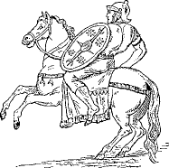
EQUES ROMANUS
This vocabulary contains only the words used in the English-Latin exercises. For details not given here, reference may be made to the Latin-English vocabulary. The figures 1, 2, 3, 4, after verbs indicate the conjugation.
A B C D E F G H I J K L M N O P Q R S T U V W Y Z
| A | |
|
a, an, commonly not translated
able (be), possum, posse, potuī, ——(§ 495)
abode, domicilium, domici´lī, n.
about (adv.), circiter
about (prep.), dē, with abl.
about to, expressed by fut. act. part.
abundance, cōpia, -ae, f.
across, trāns, with acc.
active, ācer, ācris, ācre
advance, prōgredior, 3
advantage, ūsus, -ūs, m.
advise, moneō, 2
after (conj.), postquam; often expressed by the perf.
part.
after (prep.), post, with acc.
against, in, contrā, with acc.
aid, auxilium, auxi´lī, n.
all, omnis, -e; tōtus, -a, -um (§ 108)
allow, patior, 3
ally, socius, socī, m.
almost, paene; ferē
alone, ūnus, -a, -um; sōlus, -a, -um (§ 108)
already, iam
also, quoque
always, semper
ambassador, lēgātus, -ī, m.
among, apud, with acc.
ancient, antīquus, -a, -um
and, et; atque (ac); -que
and so, itaque
Andromeda, Andromeda, -ae, f.
angry, īrātus, -a, um
animal, animal, -ālis, n.
|
announce, nūntiō, 1
annoying, molestus, -a, -um
another, alius, -a, -ud (§ 109)
any, ūllus, -a, -um (§ 108)
any one, anything, quisquam, quicquam or quidquam (§ 486)
appearance, fōrma, -ae, f.
appoint, creō, 1
approach, adpropinquō, 1, with dat.
are, used as auxiliary, not translated; as a copula, sum
(§ 494)
arise, orior, 4
arm, bracchium, bracchī, n.
armed, armātus, -a, -um
arms, arma, -ōrum, n. plur.
army, exercitus, -ūs, m.
around, circum, with acc.
arrival, adventus, -us, m.
arrow, sagitta, -ae, f.
art of war, rēs mīlitāris
as possible, expressed by quam and superl..
ask, petō, 3; quaerō, 3; rogō, 1
assail, oppugnō, 1
at, in, with acc. or abl.; with names of towns, locative case
or abl. without a preposition (§ 268); time
when, abl.
333
at once, statim
at the beginning of summer, initā
aestāte
Athens, Athēnae, -ārum, f.
attack, impetus, -us, m.
attempt, cōnor, 1; temptō, 1
away from, ā or ab, with abl.
|
| B | |
|
bad, malus, -a, -um
baggage, impedīmenta, -ōrum, n. plur.
bank, rīpa, -ae, f.
barbarians, barbarī, -ōrum, m. plur.
battle, proelium, proelī, n.; pugna, -ae. f.
be, sum (§ 494)
be absent, be far, absum (§ 494)
be afraid, timeō, 2; vereor, 2
be away, absum (§ 494)
be informed, certior fīō
be off, be distant, absum (§ 494)
be without, egeō, with abl. (§ 180)
beast (wild), fera, -ae, f.
beautiful, pulcher, -chra, -chrum
because, quia; quod
because of, propter, with acc.; or abl. of cause
before, heretofore (adv.), anteā
before (prep.), ante, with acc.;
prō, with abl.
begin, incipiō, 3
believe, crēdō, 3, with dat. (§ 153)
belong to, predicate genitive (§ 409)
best, optimus, superl. of bonus
betray, trādō, 3
better, melior, comp. of bonus
between, inter, with acc.
|
billow, fluctus, -us, m.
bird, avis, -is, f. (§ 243. 1)
blood, sanguis, -inis, m.
body, corpus, -oris. n.
bold, audāx, -ācis; fortis, -e
boldly, audācter; fortiter
boldness, audācia, -ae, f.
booty, praeda, -ae, f.
both, each (of two), uterque, utraque, utrumque
both ... and, et ... et
boy, puer, -erī, m.
brave, fortis, -e
bravely, fortiter
bridge, pōns, pontis, m.
bright, clārus, -a, -um
bring back, reportō, 1
bring upon, īnferō, -ferre, -tulī, -lātus,
with acc. and dat. (§ 426)
brother, frāter, -tris, m.
building, aedificium, aedifi´cī. n.
burn, cremō, 1; incendō, 3
business, negōtium, negō´tī, n.
but, however, autem, sed
by, ā, ab, with abl.; denoting means, abl. alone; sometimes
implied in a participle
by night, noctū
|
| C | |
|
Cæsar, Caesar, -aris, m.
calamity, calamitās, -ātis, f.
call, vocō, 1; appellō, 1; nōminō, 1
call together, convocō, 1
camp, castra, -ōrum, n. plur.
can, could, possum, posse, potuī, —— (§ 495)
capture, capiō, 3; occupō, 1
care, cūra, -ae, f.
care for, cūrō, 1
careful, attentus, -a, -um
carefulness, dīligentia, -ae, f.
carry, ferō, ferre, tulī, lātus (§ 498); portō, 1
334
carry on, gerō, 3
cart, carrus, -ī, m.
cause, causa, -ae, f.
cavalry, equitātus, -ūs, m.
cease, cessō, 1
Cepheus, Cēpheus, -ī, m.
certain (a), quīdam, quaedam, quoddam (quiddam) (§ 485)
chicken, gallīna, -ae, f.
chief, prīnceps, -cipis, m.
children, līberī, -ōrum, m. plur.
choose, dēligō, 3
choose, elect, creō, 1
|
citizen, cīvis, -is, m. and f. (§ 243. 1)
city, urbs, urbis, f.
clear, clārus, -a, -um
cohort, cohors, -rtis, f.
come, veniō, 4
commit, committō, 3
commonwealth, rēs pūblica, reī pūblicae
concerning, dē, with abl.
conquer, superō, 1; vincō, 3
construct (a ditch), perdūcō, 3
consul, cōnsul, -ulis, m.
contrary to, contrā, with acc.
Corinth, Corinthus, -ī, f.
Cornelia, Cornēlia, -ae, f.
Cornelius, Cornēlius, Cornē´li, m.
corselet, lōrīca, -ae, f.
cottage, casa, -ae, f.
country, as distinguished from the city, rūs, rūris,
n.; as territory, fīnēs, -ium, m., plur. of fīnis
courage, virtūs, -ūtis, f.
crime, scelus, -eris, n.
cross, trānseō, 4 (§ 499)
crown, corōna, -ae, f.
|
| D | |
|
daily, cotīdiē
danger, perīculum, -ī, n.
daughter, fīlia, -ae, f. (§ 67)
day, diēs, -ēī, m.
daybreak, prīma lūx
dear, cārus, -a, -um
death, mors, mortis, f.
deed, rēs, reī, f.
deep, altus, -a, -um
defeat, calamitās, -ātis, f.
defend, dēfendō, 3
delay (Noun), mora, -ae, f.
delay (verb), moror, 1
demand, postulō, 1
dense, dēnsus, -a, -um
depart, discēdō, 3; exeō, 4; proficīscor, 3
dependent, cliēns, -entis, m.
design, cōnsilium, consi´lī n.
desire, cupiō, 3
destroy, dēleō, 2
|
Diana, Diāna, -ae, f.
differ, differō, differre, distulī, dīlātus (§ 498)
different, dissimilis, -e
difficult, difficilis, -e
difficulty, difficultās, -ātis, f.
diligence, dīligentia, -ae, f.
dinner, cēna, -ae, f.
disaster, calamitās, -ātis, f.
distant (be), absum, -esse, āfuī, āfutūrus (§ 494)
ditch, fossa, -ae, f.
do, agō, 3; faciō, 3; when used as auxiliary, not
translated
down from, dē, with abl.
drag, trahō, 3
drive, agō, 3
dwell, habitō, 1; incolō, 3; vīvō, 3
dwelling, aedificium, aedifi´cī, n.
|
| 335 | |
|
each, quisque, quaeque, quidque (quodque) (§ 484)
each of two, uterque, utraque, utrumque
each other, inter with acc. of a reflexive
eager, ācer, ācris, ācre; alacer, alacris, alacre
eager (be), studeō, 2
eagerness, studium, studī, n.
eagle, aquila, -ae, f.
easily, facile
easy, facilis, -e
|
either ... or, aut ... aut
empire, imperium, impe´rī, n.
employ, negōtium dō
encourage, hortor, 1
enemy, hostis, -is, m. and f.; inimīcus, -ī,
m.
enough, satis
entire, tōtus, -a, -um (§ 108)
expectation, opīniō, -ōnis, f.
eye, oculus, -ī, m.
|
| F | |
|
faithless, perfidus, -a, -um
famous, clārus, -a, -um
far, longē
farmer, agricola, -ae, m.
farther, ulterior, -ius
father, pater, patris, m.
fatherland, patria, -ae, f.
favor, faveō, 2
favorable, idōneus, -a,-um; secundus, -a, -um
fear, metus, -ūs, m.; timor, -ōris, m.
fear, be afraid, timeō, 2
few, paucī, -ae, -a
field, ager, agrī, m.
fifteen, quīndecim
fight, contendō, 3; pugnō, 1
find, reperiō, 4
finish, cōnficiō, 3
fire, ignis, -is, m. (§ 243. 1)
firmness, cōnstantia, -ae, f.
first, prīmus, -a, -um
flee, fugiō, 3
flight, fuga, -ae, f.
fly, volō, 1
foe, see enemy
follow close after, subsequor, 3
food, cibus, -ī, m.
foot, pēs, pedis, m.
|
foot-soldier, pedes, -itis, m.
for (conj.), enim, nam
for (prep.), sign of dat.; dē, prō, with abl.;
to express purpose, ad, with gerundive; implied in acc. of time
and of extent of space
for a long time, diū
forbid, vetō, 1
forces, cōpiae, -ārum, f., plur. of cōpia
forest, silva, -ae, f.
fort, castellum, -ī, n.; castrum, -ī, n.
fortification, mūnitiō, -ōnis, f.
fortify, mūniō, 4
fortune, fortūna, -ae, f.
fourth, quārtus, -a, -um
free, līber, -era, -erum
free, liberate, līberō, 1
frequent, crēber, -bra, -brum
friend, amīcus, -ī, m.
friendly (adj.), amīcus, -a, -um
friendly (adv.), amīcē
friendship, amīcitia, -ae, f.
frighten, perterreō, 2
from, ā or ab, dē, ē, ex, with abl. Often expressed by
the separative ablative without a prep.
from each other, inter, with acc. of a reflexive
pron.
full, plēnus, -a, -um
|
| G | |
|
336
Galba, Galba, -ae, m.
garland, corōna, -ae, f.
garrison, praesidium, praesi´dī, n.
gate, porta, -ae, f.
Gaul, Gallia, -ae, f.
Gaul (a), Gallus, -ī, m.
general, imperātor, -ōris, m.
Geneva, Genāva, -ae, f.
gentle, lēnis, -e
German, Germānus, -a, -um
Germans (the), Germānī, -ōrum, m. plur.
Germany, Germānia, -ae, f.
get (dinner), parō, 1
girl, puella, -ae, f.
|
give, dō, dare, dedī, datus
give over, surrender, dēdō, 3; trādō, 3
give up, omittō, 3
go, eō, 4 (§ 499)
go forth, prōgredior, 3
god, deus, -ī, m. (§ 468)
goddess, dea, -ae, f. (§ 67)
gold, aurum, -ī, n.
good, bonus, -a, -um
grain, frūmentum, -ī, n.
grain supply, rēs frūmentāria
great, ingēns, -entis; magnus, -a, -um
greatest, maximus, -a, -um; summus, -a, -um
guard, praesidium, praesi´dī, n.
|
| H | |
|
hand, manus, -ūs, f.
happy, laetus, -a, -um
harbor, portus, -ūs, m.
hasten, contendō, 3; mātūrō, 1; properō, 1
hateful, invīsus, -a, -um
haughty, superbus, -a, -um
have, habeō, 2
have no power, nihil possum
he, is; hic; iste; ille; or not expressed
head, caput, -itis, n.
hear, audiō
heart, animus, -ī, m.
heavy, gravis, -e
Helvetii (the), Helvētiī, -ōrum, m. plur.
hem in, contineō, 2
hen, gallīna, -ae, f.
her, eius; huius; istīus; illīus; reflexive, suus, -a, -um
(§ 116)
hide, abdō, 3
|
high, altus, -a, -um
highest, summus, -a, -um
hill, collis, -is, m.
himself, suī. See self
hindrance, impedīmentum, -ī, n.
his, eius; huius; istīus; illīus; reflexive, suus, -a, -um
(§ 116)
hither, citerior, -ius (§ 315)
hold, teneō, 2
home, domus, -ūs, f. (§ 468).
at home, domī (§ 267)
hope (Noun), spēs, speī, f.
hope (verb), spērō, 1
horse, equus, -ī, m.
horseman, eques, -itis, m.
hostage, obses, -idis, m. and f.
hostile, inimīcus, -a, -um
hour, hōra, -ae, f.
house, domicilium, domici´lī, n.; domus, -ūs, f.
(§ 468)
hurl, iaciō, 3
|
| I | |
|
I, ego (§ 280);
or not expressed
if, sī. if not, nisi
ill, aeger, -gra, -grum
immediately, statim
in (of place), in, with abl.; (of time or of
specification) abl. without prep.
337
in order that, ut, with subjv.;
in order that not, lest, nē, with subjv.
in vain, frūstrā
industry, dīligentia, -ae, f.
inflict injuries upon, iniūriās īnferō with dat. (§ 426)
inflict punishment on, supplicium sūmō de
inform some one, aliquem certiōrem faciō
|
injure, noceō, 2, with dat. (§ 153)
injury, iniūria, -ae, f.
into, in, with acc.
intrust, committō, 3; mandō, 1
invite, vocō, 1
is, used as auxiliary, not translated; as a copula, sum
(§ 494)
island, īnsula, -ae, f.
it, is; hie; iste; ille; or not expressed
Italy, Italia, -ae, f.
its, eius; huius; istīus; illīus; reflexive, suus, -a, -um
(§ 116)
itself, suī. See self
|
| J | |
|
join battle, proelium committō
journey, iter, itineris, n. (§ 468)
judge (Noun), iūdex, -icis, m.
|
judge (verb), iūdicō, 1
Julia, Iūlia, -ae, f.
just now, nūper
|
| K | |
|
keep, contineō, 2; prohibeo, 2; teneō, 2
keep on doing something, expressed by the impf.
indic.
kill, interficiō, 3; necō, 1 ; occīdō, 3
|
king, rēx, rēgis, m.
kingdom, rēgnum, -ī, n.
know, cognōscō, 3, in perf.; sciō, 4
|
| L | |
|
labor (Noun), labor, -ōris, m.
labor (verb), labōrō, 1
lack (Noun), inopia, -ae, f.
lack (verb), egeō, 2, with abl. (§ 180)
lady, domina, -ae, f.
lake, lacus, -ūs, m. (§ 260. 2)
land, terra, -ae, f.
language, lingua, -ae, f.
large, ingēns, -entis ; magnus, -a, -um
larger, maior, maius
lately, nūper
Latona, Lātōna, -ae, f.
law, lēx, lēgis, f.
lay waste, vāstō, 1
lead, dūco, 3
leader, dux, ducis, m. and f.
learn, know, cognōscō, 3
leave, depart from, discēdō, 3
leave behind, abandon, relinquō, 3
|
left, sinister, -tra, -trum
legion, legiō, -ōnis, f.
legionaries, legiōnāriī, -ōrum, m. plur.
length, longitūdō, -inis, f.
lest, nē, with subjv.
letter (of the alphabet), littera, -ae, f; (an
epistle) litterae, -ārum, f. plur.
lieutenant, lēgātus, -ī, m.
light, lūx, lūcis, f.
like (adj.), similis, -e
like, love, amō, 1
line of battle, aciēs, aciēī, f.
little, parvus, -a, -um
live, habitō, 1; incolō, 3; vīvō, 3
long, longus, -a, -um
long, for a long time, diū
long for, dēsīderō, 1
look after, cūrō, 1
love, amō, 1
|
| 338 | |
|
maid, maid servant, ancilla, -ae,f.
make, faciō, 3
make war upon, bellum īnferō with dat. (§ 426)
man, homō, -inis, m. and f.; vir, virī, m.
man-of-war, nāvis longa
many, multī, -ae, -a, plur. of multus
march, iter, itineris, n. (§ 468)
Mark, Mārcus, -ī, m.
marriage, mātrimōnium, mātrimō´nī, n.
master, dominus, -ī, m.; magīster, -trī, m.
matter, negōtium, negō´tī, n.; rēs, reī, f.
means, by means of, the abl.
messenger, nūntius, nūntī, m.
midnight, media nox
mile, mīlle passuum (§ 331. b)
miles, mīlia passuum
mind, animus, -ī, m.; mēns, mentis, f.
|
mine, meus, -a, -um
mistress, domina, -ae, f.
money, pecūnia, -ae, f.
monster, mōnstrum, -ī, n.
month, mēnsis, -is, m.
moon, lūna, -ae, f.
more (adj.), plūs, plūris (§ 313); or a comparative.
Adverb, magis
most (adj.), plūrimus, -a, -um; superl. degree.
Adverb, maximē; plūrimum
mother, māter, mātris, f.
mountain, mōns, montis, m.
move, moveō, 2
moved, commōtus, -a, -um
much (by), multō
multitude, multitūdō, -inis. f.
my, meus, -a, -um
myself, mē, reflexive. See self
|
| N | |
|
name, nōmen, -inis, n.
nation, gēns, gentis, f.
near, propinquus, -a, -um
nearest, proximus, -a, -um
nearly, ferē
neighbor, fīnitimus, -ī, in.
neighboring, fīinitimus, -a, -um
neither, neque or nec;
neither ... nor, neque (nec) ... neque (nec)
never, numquam
nevertheless, tamen
new, novus, -a, -um
next day, postrīdiē eius diēī
next to, proximus, -a, -um
|
night, nox, noctis, f.
nine, novem
no, minimē; or repeat verb with a negative (§ 210)
no, none, nūllus, -a, -um (§ 109)
no one, nēmō, nūllīus
nor, neque or nec
not, nōn
not even, nē ... quidem
not only ... but also, nōn sōlum ... sed etiam
nothing, nihil or nihilum, -ī, n.
now, nunc
number, numerus, -ī, m.
|
| O | |
|
obey, pāreō, 2, with dat. (§ 153)
of, sign of gen.;
dē, with abl.;
out of, ē or ex, with abl.
often, saepe
on (of place), in, with abl.;
(of time) abl. without prep.
on account of, propter, with acc.; or abl. of cause.
on all sides, undique
once (upon a time), ōlim
339
one, ūnus, -a, -um (§ 108)
one ... another, alius ... alius (§ 110)
only (adv.), sōlum; tantum
|
opportune, opportunus, -a, -um
opposite, adversus, -a, -um
oracle, ōrāculum, -ī, n.
orator, ōrātor, -ōris, m.
order, imperō, 1; iubeō, 2
ornament, ōrnāmentum, -ī, n.
other, alius, -a, -ud (§ 109)
others (the), reliquī, -ōrum, m. plur.
ought, dēbeō, 2
our, noster, -tra, -trum
ourselves, nōs, as reflexive object. See self
overcome, superō, 1 ; vincō, 3
own (his, her, its, their), suus, -a, -um
|
| P | |
|
part, pars, partis, f.
peace, pāx, pācis, f.
people, populus, -ī, m.
Perseus, Perseus, -ī, m.
persuade, persuādeō, 2, with dat. (§ 153)
pitch camp, castra pōnō
place (Noun), locus, -ī, m.
place, arrange, conlocō, 1
place, put, pōnō, 3
place in command, praeficiō, 3, with acc. and dat. (§ 426)
plan (a), cōnsilium, cōnsi´lī, n.
please, placeō, 2, with dat. (§ 154)
pleasing, grātus, -a, -um
plow, arō, 1
Pompeii, Pompēiī, -ōrum, m. plur.
|
possible (as), expressed by quam and superl.
powerful (be), valeō, 2
praise, laudō, 1
prefer, mālō, mālle, māluī, —— (§ 497)
prepare for, parō, 1, with acc.
press hard, premō, 3
protection, fidēs, fideī, f.
province, prōvincia, -ae, f.
public, pūblicus, -a, -um
Publius, Pūblius, Pūblī, m.
punishment, poena, -ae, f.; supplicium, suppli´cī,
n.
purpose, for the purpose of, ut, quī, or quō, with
subjv.;
ad, with gerund or gerundive; causā, following the genitive of
a gerund or gerundive
pursue, īnsequor, 3
|
| Q | |
|
queen, rēgīna, -ae, f.
quickly, celeriter
|
quite, expressed by the comp. degree
|
| R | |
|
rampart, vāllum, -ī, n.
rear, novissimum agmen
reason, causa, -ae, f.
receive, accipiō, 3; excipiō, 3
recent, recēns, -entis
recently, nūper
redoubt, castellum, -ī, n.
refuse, recūsō, 1
remain, maneō, 2
remaining, reliquus, -a, -um
reply, respondeō, 2
report (Noun), fama, -ae, f.; rūmor, -ōris,
m.
report (verb), adferō; dēferō; referō (§ 498)
republic, rēs pūblica
require, postulō, 1
resist, resistō, 3, with dat. (§ 154)
|
rest (the), reliquī, -ōrum, m. plur.
340
restrain, contineō, 2
retainer, cliēns, -entis, m.
retreat, pedem referō; terga vertō
return, redeō, 4; revertor, 3
revolution, rēs novae
Rhine, Rhēnus, -ī, m.
right, dexter, -tra, -trum
river, flūmen, -inis, n.; fluvius, fluvī, m.
road, via, -ae, f.
Roman, Rōmānus, -a, -um
Rome, Rōma, -ae, f.
row, ōrdō, -inis, m.
rule, regō, 3
rumor, fāma, -ae, f.; rūmor, -ōris, m.
run, currō, 3
|
| S | |
|
sacrifice, sacrum, -ī, n.
safety, salūs, -ūtis, f.
sail, nāvigō, 1
sailor, nauta, -ae, m.
sake, for the sake of, causā, following a gen.
same, īdem, eadem, idem (§ 287)
savages, barbarī, -ōrum, m. plur.
save, servō, 1
say, dīcō, 3
school, lūdus, -ī, m.; schola, -ae, f.
scout, explōrātor, -ōris, m.
sea, mare, -is, n.
second, secundus, -a, -um
see, videō, 2
seek, petō, 3
seem, videor, 2, passive of videō
seize, occupō, 1; rapiō, 3
send, mittō, 3
set fire to, incendō, 3
set out, proficīscor, 3
seven, septem
Sextus, Sextus, -ī, m.
she, ea; haec; ista; illa (§ 115); or not expressed
ship, nāvis, -is, f. (§ 243. 1)
short, brevis, -e
shout, clāmor, -ōris, m.
show, dēmōnstrō, 1
Sicily, Sicilia, -ae, f.
sick, aeger, -gra, -grum
side, latus, -eris, n.
siege, obsidiō, -ōnis, f.
sing, canō, 3; cantō, 1
sister, soror, -ōris, f.
sit, sedeō, 2
size, magnitūdō, -inis, f.
skillful, perītus, -a, -um
slave, servus, -ī, m.
slavery, servitiūs, -ūtis, f.
slow, tardus, -a, -um
|
small, parvus, -a, -um
snatch, rapiō, 3
so, ita; sīc; tam
so great, tantus, -a, -um
so that, ut; so that not, ut nōn
soldier, mīles, -itis, m.
some, often not expressed; quis (quī), qua (quae), quid
(quod); aliquī, aliqua, aliquod
some one, quis; aliquis (§ 487)
some ... others, aliī ... aliī (§ 110)
something, quid; aliquid (§ 487)
son, fīlius, fīlī, m.
soon, mox
space, spatium, spatī, n.
spear, pīlum, -ī, n.
spirited, ācer, ācris, ācre; alacer, alacris, alacre
spring, fōns, fontis, m.
spur, calcar, -āris, n.
stand, stō, 1
341
state, cīvitās, -ātis, f.
station, conlocō, 1
steadiness, cōnstantia, -ae, f.
stone, lapis, -idis, m.
storm, oppugnō, 1
story, fābula, -ae, f.
street, via, -ae, f.
strength, vīs, (vīs), f.
strong, fortis, -e; validus, -a, -um
sturdy, validus, -a, -um
such, tālis, -e
suddenly, subitō
suffer punishment, supplicium dō
sufficiently, satis
suitable, idōneus, -a, -um
summer, aestās, -ātis, f.
sun, sōl, sōlis, m.
supplies, commeātus, -ūs, m.
surrender, trādō, 3
suspect, suspicor, 1
swift, celer, -eris, -ere; vēlōx, -ōcis
sword, gladius, gladī, m.
|
| T | |
|
take, capture, capiō, 3
take part in, intersum, -esse, -fuī, -futūrus, with dat.
(§ 426)
take possession of, occupō, 1
tall, altus, -a, -um
task, opus, operis, n.
teach, doceō, 2
teacher, magister, -trī, m.
tear (Noun), lacrima, -ae, f.
tell, dīcō, 3; nārrō, 1
ten, decem
terrified, perterritus, -a, -um
terrify, perterreō, 2
than, quam
that (conj. after verbs of saying and the like), not
expressed
that (pron.), is; iste; ille
the, not expressed
their, gen. plur. of is; reflexive, suus, -a, -um
(§ 116)
their own, suus, -a, -um (§ 116)
then, at that time, tum
then, in the next place, deinde, tum
there, as expletive, not expressed
there, in that place, ibi
therefore, itaque
they, iī; hī; istī; illī; or not expressed
|
think, arbitror, 1; exīstimō, 1; putō, 1
third, tertius, -a, -um
this, hic, haec, hoc; is, ea, id
though, cum. with subjv. (§ 396)
thousand, mīlle (§ 479)
three, trēs, tria (§ 479)
through, per, with acc.
thy, tuus, -a, -um
time, tempus, -oris, n.
to, sign of dat.; ad, in, with acc.; expressing
purpose, ut, quī, with subjv.; ad, with gerund or
gerundive
to each other, inter, with acc. of a reflexive pron.
to-day, hodiē
tooth, dēns, dentis, m.
top of, summus, -a, -um
tower, turris, -is, f. (§ 243. 2)
town, oppidum, -ī, n.
townsman, oppidānus, -ī, m.
trace, vestīgium, vestī´gī, n.
trader, mercātor, -ōris, m.
train, exerceō, 2
tree, arbor, -oris, f.
342
tribe, gēns, gentis, f.
troops, cōpiae, -ārum, f. plur.
true, vērus, -a, -um
trumpet, tuba, -ae, f.
try, cōnor, 1; temptō, 1
twelve, duodecim
two, duo, duae, duo (§ 479)
|
| U | |
|
under, sub, with acc. or abl.
undertake, suscipiō, 3
unharmed, incolumis, -e
unless, nisi
|
unlike, dissimilis, -e
unwilling (be), nōlō, nōlle, nōluī, —— (§ 497)
up to, sub, with acc.
us, nōs, acc. plur. of ego
|
| V | |
|
very, superl. degree; maximē; ipse, -a, -um (§ 285)
victor, victor, -ōris, m.
victory, victōria, -ae, f.
village, vīcus, -ī, m.
|
violence, vīs, (vīs), f.
violently, vehementer
voice, vōx, vōcis, f.
|
| W | |
|
wage, gerō, 3
wagon, carrus. -ī, m.
wall, mūrus, -ī, m.
want, inopia, -ae, f.
war, bellum, -ī, n.
watch, vigilia, -ae, f.
water, aqua, -ae, f.
wave, fluctus, -ūs, m.
way, iter, itineris, n. (§ 468); via, -ae, f.
way, manner, modus, -ī, m.
we, nōs, plur. of ego; or not expressed
weak, īnfīrmus, -a, -um
weapons, arma, -ōrum, n. plur.; tēla, -ōrum, n.
plur.
wear, gerō, 3
weary, dēfessus, -a, -um
what, quis (quī), quae, quid (quod) (§ 483)
when, ubi; cum (§ 396); often expressed by a
participle
where, ubi
while, expressed by a participle
whither, quō
whole, tōtus, -a, -um (§ 108)
whose, cuius; quōrum, quārum, quōrum, gen. of quī, quae,
quod, rel.; or of quis, quid, interrog.
why, cūr
|
wicked, malus, -a, -um
wide, lātus, -a, -um
width, lātitūdō, -inis, f.
wild beast, fera, -ae, f.
willing (be), volō, velle, voluī, —— (§ 497)
win (a victory), reportō, 1
wind, ventus, -ī, m.
wine, vīnum, -ī, n.
wing, cornū, -ūs, n.
winter, hiems, -emis, f.
wisdom, cōnsilium, consi´lī, n.
wish, cupiō, 3; volō, velle, voluī, —— (§ 497);
wish not, nōlō, nōlle, nōluī, —— (§ 497)
with, cum, with abl.; sometimes abl. alone
withdraw, sē recipere
without, sine, with abl.
woman, fēmina, -ae, f.; mulier, -eris, f.
343
wonderful, mīrus, -a, -um
word, verbum, -ī, n.
work, labor, -ōris, m.; opus, -eris, n.
worse, peior, peius, comp. of malus
worst, pessimus, -a, -um, superl. of malus
wound (Noun), vulnus, -eris, n.
wound (verb), vulnerō, 1
wreath, corōna, -ae, f.
wretched, miser, -era, -erum
wrong, iniūria, -ae, f.
|
| Y | |
|
year, annus, -ī, m.
yes, certē; ita; vērō; or, more usually, repeat the verb
(§ 210)
yonder (that), ille, -a, -ud
|
you, sing. tū; plur. vōs (§ 480); or not expressed
your, sing. tuus, -a, -um; plur. vester, -tra,
-trum (§ 98. b)
|
| Z | |
|
zeal, studium, studī, n.
|
|
The numbers in all cases refer to sections.
|
ā-declension of nouns, 57, 461 ā-verbs, conjugation of, 488 absolute, 381 after a comparative, 309 of accompaniment, 104 of agent, 181 of cause, 102 of manner, 105 of means or instrument, 103 of measure of difference, 317 of place from which, 179 of place where, 265 of separation, 180 of specification, 398 of time, 275 accompaniment abl. of, 104 accusative case, 33 as subject of the infinitive, 214 object, 37 of duration and extent, 336 predicate, 392 with prepositions, 340 |
agreement, 65 comparison regular, 301 by adverbs, 302 declension of comparatives, 303 of first and second declensions, 83, 93, 469 of third declension, 250-257, 471 with the dative, 143 adverbs, 319 formation agent expressed by the abl. with ā or ab, 181 agreement of appositives, 81 of predicate nouns, 76 of relative pronouns, 224 of verbs, 28 aliquis, 487 antepenult, 9. 3 accent of, 15 article not used in Latin, 22. a |
|
base, 58 | |
|
cardinal numerals, 327-329, 478 case, 32. 2 causal clauses with cum, 395, 396 cause, expressed by the abl., 102 characteristic comparative declension of, 303 comparison abl. of, 309 degrees of, 300 of adverbs positive wanting, 315 six adjectives in -lis, 307 |
complementary infinitive, 215 compound verbs 345concessive clauses with cum, 395, 396 conjugation stems, 184 conjugations the four regular, 126, 488-491 consonants, 2 copula, 21 cum conjunction, 395 cum preposition, 209 |
|
dative case, 43 of purpose, or end for which, 437 with adjectives, 143 with compound verbs, 426 with special verbs, 153 dea declension of, 67 degree of difference expressed by the abl., 317 demonstrative adjectives and pronouns, 112-115, 290-292, 481 |
descriptive relative clause deus declension of, 468 difference, measure of, 316, 317 diphthongs, 6 direct statements, 414 distributive numerals, 327. 3, 334 domī locative, 267 domus declension of, 468 duo declension of, 479 duration of time, expressed by the acc., 336 |
|
ē-declension of nouns, 272, 273, 467 ē-verbs, conjugation of, 489 ĕ-verbs, conjugation of, 490 ego |
enclitics, 16 eō conjugation of, 499 extent of space expressed by the acc., 336 |
|
fearing subjv. after verbs of, 370-372 ferō conjugation of, 498 fifth or ē-declension, 272, 273, 467 fīlia declension of, 67 fīlius finite verb defined, 173 fīō conjugation of, 500 |
first conjugation, 488 first or ā-declension, 57, 461 fourth conjugation, 491 fourth or u-declension, 259, 260, 466 from future participle formation of, 374. c future perfect formation of active, 187. 3 passive, 202 future tense |
|
gender in English and in Latin, 60 in the first declension, 61 in the second declension, 72 in the third declension, 247 in the fourth declension, 260 in the fifth declension, 272 general observations on declension, 74 |
genitive case English equivalents of, 33 of nouns in -ius and -ium, 87 partitive, 331 gerund gerundive a verbal adjective, 404 with ad to express purpose, 407 |
|
hic |
how to read Latin, 17 |
|
i consonant, 3 i-stems of nouns, 231, 241-244 ī-verbs conjugation of, 491 īdem iēns declension of, 472 ille declension and use of, 290-293, 481 346imperative irregular, 161. 2 in commands, 161 imperfect indicative, formation and use of, 133, 134, 165. 1 imperfect subjunctive, 354 indefinite pronouns and adjectives, 296, 297, 484-487 independent clauses, 219 infinitive as object, 213 as subject, 216 complementary, 215 definition of, 173 does not express purpose, 352 formation of, 126, 174, 205, 206 |
inflection defined, 23 instrument intensive pronoun ipse, declension and use of, 285, 286, 481 interrogative pronouns and adjectives, 225-227, 483 intransitive verbs, defined, 20. a with the dative, 153 iō-verbs of the third conj., 492 ipse declension and use of, 285, 481 irregular adjectives, 108 irregular comparison of adverbs, 323 is declension and use of, 113-116 iste declension and use of, 290, 292, 481 iter declension of, 468 |
|
Latin word order, 68 |
locative case, 267 |
|
magis and maximē comparison by, 302 mālō manner abl. of, 105 means abl. of, 103 |
measure of difference mīlle, declension of, 479 construction with, 331. a,b moods, defined, 121 |
|
-ne, enclitic in questions, 210 nē, conj., that not, lest with negative clauses of purpose, 350.II with verbs of fearing, 370 nine irregular adjectives, 108-110 nōlō conjugation of, 497 nōnne in questions, 210 |
nōs Nouns, 19. 2 second declension, 71-74,87-92,462 third declension, 230-247, 463-465 fourth declension, 259, 260, 466 fifth declension, 272, 273, 467 num, in questions, 210 number, 24 |
|
o-declension of nouns, 71-74, 87-92, 462 object, 20 direct, 37 |
order of words, 68 |
|
participial stem, 201. 2 participles, defined, 203 agreement of, 204 formation,
of present, 374. b of perfect, 201 of future, 374. c,d of deponent verbs, 375 tenses of, 376 translated by a clause, 377 passive voice defined, 163 penult, 9. 3 accent of, 15 perfect indicative formation, in the passive, 202 347meaning of, 190 definite, 190 indefinite, 190 distinguished from the imperfect, 190 perfect infinitive active, 195 passive, 205 perfect passive participle, 201 perfect stem, 185 perfect subjunctive active, 361 passive, 362 person, 122 personal endings active, 122 passive, 164 place where, whither, whence, 263-265 names of towns and domus and rūs, 266-268 pluperfect indicative active, 187. 2 passive, 202 |
pluperfect subjunctive active, 361 passive, 363 plūs declension of, 313 possum conjugation of, 495 predicate defined, 19 predicate adjective defined, 55 prepositions with the abl., 209 with the acc., 340 present indicative, 128, 130, 147 present stem, 126. a present subjunctive, 344 primary tenses, 356 principal parts, 183 pronouns classification of, 278 defined, 19. 2. a demonstrative, 481 interrogative, 483 personal, 480 reflexive, 281 prōsum conjugation of, 496 purpose expressed by the gerund or gerundive with ad, 407 not expressed by the infinitive, 352 |
|
quality quam with a comparative, 308 questions direct, 210 quī |
quīdam declension of, 485 quis declension and use of, 225-227, 483 quisquam declension of, 486 quisque declension of, 484 |
|
reflexive pronouns, 281 relative clauses of characteristic or description, 389, 390 |
rūs constructions of, 266 |
|
sē distinguished from ipse, 285. a second conjugation, 489 second or o-declension, 71-93, 462 sentences simple, complex, compound, 219 separation abl. of, 180 space extent of, expressed by the acc., 336 specification abl. of, 398 stems of nouns, 230 of verbs, 184 subject defined, 19. 2 subjunctive formation of the present, 344 348of the imperfect, 354 |
subjunctive constructions characteristic or description, 389, 390 time, cause, or concession, with cum, 395, 396 subjunctive ideas, 346 subordinate clauses, 219 suī sum conjugation of, 494 suus syllables, 8 division of, 9 quantity of, 13 syntax rules of, 501 |
|
temporal clauses with cum, 395, 396 tense defined, 120 tense signs imperfect, 133 pluperfect active, 187. 2 future perfect active, 187. 3 tenses primary and secondary, 356 third declension of nouns gender, 247 irregular nouns, 246 |
time abl. of, 275 time acc. of, 336 towns rules for names of, 266, 267, 268 transitive verb, 20. a trēs declension of, 479 tū tuus compared with vester, 98. b |
|
ultima, 9. 3 |
|
|
verbs agreement of, 28 principal parts of, 183 vester compared with tuus, 98. b vīs declension of, 468 vocabularies |
vocative case, 56. a of nouns in -us of the second declension, 73. b of proper nouns in -ius and of fīlius, 88 voice defined, 163 volō conjugation of, 497 vōs vowels quantity of, 12 |